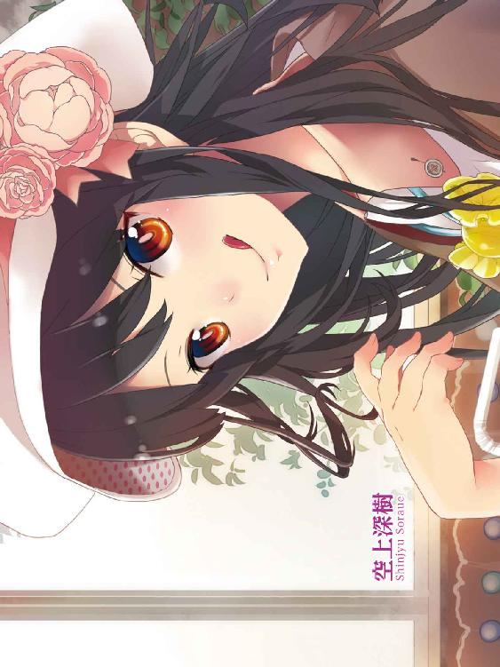
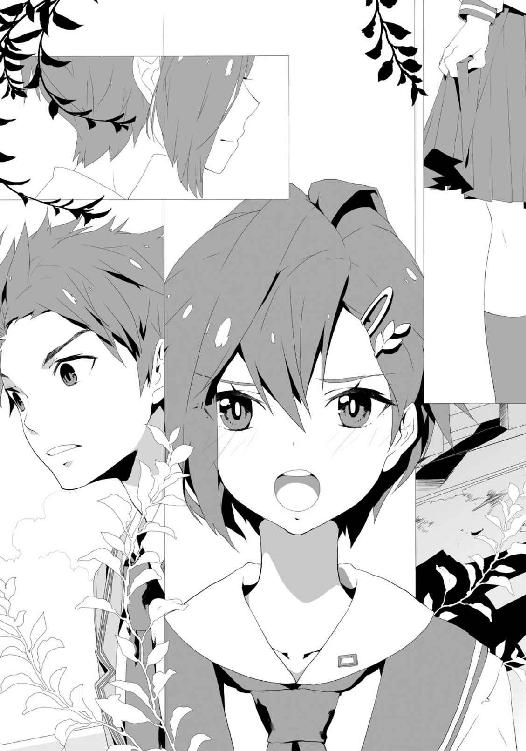

| 放課後四重奏 02 | |
| 高木幸一 | |
| SBクリエイティブ株式会社 (2013) | |


放課後四重奏２
高木幸一

本書に掲載されているコンテンツの著作権等の知的財産権およびその他すべての権利は、ＳＢクリエイティブ株式会社または正当な権利を有する第三者に帰属します。
本書の内容を権利者の許諾なく複製・複写・翻案・放送・出版・データ配信（送信可能化を含む）などすることはできません。
カバー・口絵 本文イラスト
ぜろきち

この世は、理不尽なことが多い。......端的に言って、ふざけている。
「はいはーい！ ではこれより、空気の読めない阿呆男の裁判を行いまーす！」
そう、「灰堂裁判」とでかく書かれたホワイトボードの前に立ち、手にしたポインターを伸ばしたり縮めたり──。女は、少し離れたところであぐらをかく、俺を睨みつけた。
ブレザーの上からでも分かる、おおきな胸。短いスカートから、すらりと伸びる長い脚。長い黒髪は艶やかで美しく、なにより二重のぱっちりした目が、快活な雰囲気と相まって、誰が見ても、人を惹きつけてやまない存在感があった。
しかしそんな美しさもどこへやら、現在は思いきり顔を引きつらせ激高しており、ポインターを「チェストーッ！」などと叫び、俺に突き刺してきそうな様相である。
この、怒り狂っている女こと空上深樹は、本校、私立緑育学院の生徒であり、俺と同じく高等部二年。ちなみに、ある同好会にも一緒に属し、ここはその会室である。......なんの会なのかは、頭が痛くなるので今は割愛する。
「......草ヶ部ー！ 罪状を読み上げてーっ！」
そう、空上は、俺から視線を外し、そばのコタツでアニメ雑誌をしずかにめくる女を、棒で指して叫ぶ。すると、その草ヶ部と呼ばれたショートヘアの女は、ため息をつき、俺をチラ見して言った。
「......二時間ほど前、空上先輩が朝食の写真を撮り、会長の携帯へ、短いメッセージを添えてメールで送ったものの、その返信内容が常軌を逸しており先輩が激怒。結果、私や菜花さんが巻き添えで、冬休み最後の日であるにも拘わらず、寮に戻るにはまだ早い、朝の九時というありえない時間に、遠く離れた実家から、こうして会室へ呼び出されている......ことですかね」
と、切れ長の目を半眼にし、こちらを睨むと、またため息。空上と同じように、制服を着ているコイツは草ヶ部詩織。一年だ。
今はコタツに隠れて見えないが、スカートの丈はヒザほどで長め......緑学では少数派に属する出で立ちの、クールな女である。
空上が、そんな草ヶ部の淡々とした返事に、ポインターでばしばしボードを叩いてわめく。
「......後半はともかく！ 『返信内容が常軌を逸しており』ってとこ、もっと詳しく！ もっと明確に！ ......はい菜花！」
今度は俺の横で正座する、やはり制服姿......短いスカートの華奢な女、菜花心月を指し示し、命ずる。学年は、草ヶ部と同じく一年である。
菜花はセミロングの髪を揺らしつつ、輝きの多い独特の目で、俺をチラチラ見やって、もじもじしていたが、「は・や・く！」という鬼のひと声で「は、はいっ！」と背筋を伸ばして話し始めた。
「あ、あのあの......。灰堂さんは、空上先輩の〈やっぴー♥〉というメッセージを添えた、朝ご飯の写真メールに対して、〈......やっぴー？ どういうことだ。これはそういう飯なのか？〉とお返事しました......」
「──そう！ ......ホンット馬鹿じゃないのこの男!? ああああもうム・カ・つ・くーっ!!」
真っ赤な顔で畳を踏みつける。......ここは元々、使われなくなった音楽室で、床は板張りだったが、畳を運び入れたのだ。
昨年暮れの同好会設立当初、会の雰囲気に合うようにと、隣の草ヶ部が入っているコタツや、その向かいのテレビにＤＶＤプレーヤー、壁際の食器棚......。他にもストーブやポット、ありとあらゆる「居間に置いてありそうなもの」を揃えた。それらは全員で、この会室がある西棟中からかき集めたり、私物を持ってきたりしたものだ。
今怒り、わめいている空上が叩くホワイトボードも、最近、俺の担任、かつ会の顧問である三枝先生（35・♂）が、「あっけましておめでとうさんもびっくりプレゼントだよ～ん！」とか言いながら、「どうだ、いいだろ～。──役立てて！」と勝手に置いていったものだが、空上が気に入って、けっきょく、こうして新たな備品として加わった。
「......別にわたしはね？ あんたに〈うっぴー♥〉とか、〈はっぴー♥〉とか、そーゆーリアクションを期待してないわけ！ ......でも、〈うまそうだな〉とか、〈俺も今から飯だ〉......とかさ！ いつもみたくぶっきらぼうでもいいから、フツーに返してくんない!? そ・こ・か・ら！ コミュニケーションが始まるってものじゃない！ ......それがなに？ 〈これはそういう飯なのか？〉？ ......あんたスクランブルエッグ知らないの!? ──あまりに予想斜め上過ぎて、一瞬わたしのほうがおかしいのかと思っちゃったわ!!」
と、再びポインターでボードをばしばし叩いたあと、俺を何度も指して、文句を続ける。菜花は正座のまま、おろおろしていたが、あまりにうるさいからか、草ヶ部が雑誌を閉じて言った。
「先輩。ちょっと」
「......なによ！ まさかあんた、灰堂の味方する気ー？」
と、じろりヤツを睨みつける。すると草ヶ部は無表情のまま、俺と、その隣に正座する菜花を見てから、空上に話し始めた。
「......三日前、未だに携帯を持ったことがないという会長のために、皆でショップへ行きましたけど。その時会長が発した、店の人への第一声は、『すみません。最低限の機能だけあるものを教えて下さい』でした。......覚えてますか？」
「えーえー、そりゃね！ だって入って五秒とかからず、サンプルもなーんも見ないで、それだもん。ホントこの男は......」
と、苛立ちを隠さず、俺を見つつ、軽く足踏みする空上。草ヶ部は、そんな空上と、困ったような菜花に続ける。
「......つまり会長には、デザインに対する関心とか、そしておそらくあの日に限らず、単純にショッピングとして、皆でわいわいしながら買い物を楽しむ気持ちとかは、まったくないのです。ともかく『皆に言われたから仕方なく』、『持たないとまずいらしい、用事を伝達できる機器』を『なるべく短時間で』手に入れようという。......常日頃の態度がよく表れた言動であったといえるでしょう。......で、そんな人に、〈やっぴー♥〉なんて言葉を添えた料理の写真を送り、そこからフランクなやりとりを期待する先輩に、問題があると思いますが」
「......うぐ。......だって、だってさあ......！」
歯ぎしりしながら、自分と俺を見る空上に息をはき、草ヶ部は尋ねた。
「......ちなみに、今まで他にどんなものを？ ......まあ似た感じだったとは思いますけど」
「......。......じめてよ」
「......はっ？」
瞬く草ヶ部と、ぽかんと口を開けた菜花に、やや赤い顔でポインターを振りながら、空上は返した。
「......だ・か・ら！ きょう初めて送ったって言ってんの！ それで怒ってるんじゃない！ ......だいたいあれを送るのにー、わたしがどれだけ考えたと思ってんの!? どういうこと書こうかなー、とか！ 写真はなにがいいかなー......とか！ この男が携帯買ってからずーっと......」
そこで、じっと見る草ヶ部と菜花の視線に気づき、ヤツは「──ちっ！ 違う!! 今のなしっ!! なしだってばーーーっ！ ──って、灰堂っ!! ......その顔、やめなさいよ!!」
と、ポインターを捨てて真っ赤な顔で、コタツ周りに置いてあったクッションを次々拾っては、こちらに投げつけ始める。俺はそれを、ため息をつきつつ、隣の菜花に当たらないように払いのけ、最後の丸いブタのクッションをつかんだところで、空上が叫んだ。
「......そういえば草ヶ部、あんたはどうなの!? さっきのリアクション的に、もう何回も送ってるみたいだし！ ......この男は、ちゃんとまともな返事、寄こしたのー!?」
そう、じろりと俺を睨む。草ヶ部は「......言っていいんですか？」とこちらを見やり、俺がちいさくうなずくと、答えた。
「ええ。十回くらいですかね。内容は、私が貸したアニメの話とか、冬休みの課題の話とか。互いが理解できる話題をチョイスしました。......この人はぶっきらぼうですけど、基本的に真面目できっちりしていますし。内容がテリトリー内で、かつ具体的、明確なら、相応の返事が来ますよ」
「......ふうん。なるほどねえ......。ちゃんとした返事が来るように、考えてるわけだ......」
腕組みし、半眼で草ヶ部を見やる。それで草ヶ部は眉をひそめ、低い声でつぶやく。
「......送る以上は、ある程度、中身に見合ったものを返してもらおうと考えますよ、それは。......まあ、考えるといっても、方向性を間違うと、先輩のように丸三日近く費やして〈やっぴー♥〉という結論に達するわけですが」
次の瞬間、果たして毒舌後輩は粗暴先輩に、絞め技をかけられることとなる。俺は息をはいてから、まだ隣で正座を崩さぬまま、ふたりにおろおろする菜花に、言った。
「......そう言えば、メールについて、お前に言っておきたいことがある」
「──えっ？ な、なんですかっ？」
と、言いながらも、おおよそ見当はついているらしく、思いきり目が泳いでいた。そんな様子に気づいたヤツらが、プロレスごっこをやめてこちらを見る。
「......そーそー、菜花はどんな感じなのよ？ やっぱわたしらに送るみたいにー、漫画とかぬいぐるみとか、お菓子の話？ ......草ヶ部みたいにひねくれてないからストレートっぽい！」
「......。菜花さんは空上先輩と百八十度違って、女の子らしいから。実家の子犬と遊んでる写真とか、送ってそう」
そこでまた、互いに変な笑みを浮かべて争いを始めようとしたので、俺はおおきく咳払いして、遮ると、目をそらす菜花に言った。
「......内容はいい。が、ちょっと回数が多いな。......さすがに三日で四十通は、返しきれない」
「「......四十通!?」」
ふたりの反応に、真っ赤になって身を縮める菜花。俺はポケットから、まだ真新しい青色の携帯を取り出して、菜花から来たメールの件名群に、目を落とす。──「カール拓郎のお家を買いました」「ジョンいちとお散歩です」「クッキー焼きました！」「前に言っていた本です！」等々、内容はアイツらの言った通り、ぬいぐるみや人形、菓子に飯、ペットに漫画、服の話など......。ほぼ写真付きで、三日間であったことや、それ以前からある、アイツ自身のこと......。ともかく、これらを見れば菜花のことはよく分かる......というものだった。
「......そ、そのっ......！ なんといいますか、お話ししたいことがたくさんあって......！ ──す、すすすすみませんっ！」
恥ずかしそうに叫び、頭を下げる。俺は、「......まあ、今は休み中だから構わないが、テスト前とかは、もう少し減らしてくれ。返事が要らないというのなら、何通送ってもいいんだが。......今お前らの話を聞いた感じだと、そういうのは......違うだろうしな」
と、菜花のを始め、全員のメール内容を見返して、つぶやく。すると空上が「そーそー！ ようやくちょこーっと、コミュニケーションのなんたるかを理解したようじゃない！ ......次からはわたしにもちゃんとした......ってか、今、送って！ 朝のヤツ、やり直し！」
そう、自分の赤い携帯を取り出すと、空いた手で何度も俺の携帯を指差す。菜花も草ヶ部もこちらを見るので、やむなく〈やっぴー♥〉メールを選択し、数秒考えたのち、俺は空上に返信した。
「......っと。──来た来た！ ふふふ......。どんなのだろー♪ ......。──っ!?」
次の瞬間、両手で持った携帯を見つめる空上と、横からのぞき込む草ヶ部が、固まった。......なんだ？ ちゃんとしたものを返したはずだが......。
怪訝な顔をする俺と、硬直するふたりを交互に見ながら、菜花は中腰で、「？ あの......」と声をかける。俺は頭をかきつつ空上に言った。
「......おい。どうした。......なにかおかしなこと、書いたか？」
「......へえっ!? べ、別におかっ！ しくはないわよっ？ ......で......、でも......」
赤い顔で、空上は俺から目をそらし、横を向いたまま、じっと携帯画面を見つめている。草ヶ部は俺の怪訝な様子に、呆れたようにかぶりを振った。......だから、なんなんだよ！
いっぽう、とうとう我慢しきれなくなったのか、菜花も「ちょ、ちょっとすみません！」とヒザ立ちでとことこヤツへと近づき、その携帯をのぞき込んだ。......が、その刹那──コイツも固まった。......。
「......いい加減にしろ！ いったいお前ら、なにをそんなに訝しがってるんだ？ 俺はただ......」
「......『〈うまそうだな。よかったら今度、俺にも作ってくれないか。ぜひ食べてみたい〉と、書いただけだ！』......と、言いたいようですが」
そう、草ヶ部が腕組みしたまま、俺を横目で見やる。......顔はいつものように無表情だが、明らかに、怒気をはらんでいる。......俺は唾を飲み込んだ。
「......会長」
「......なんだ」
「会長は、女たらしですね」
「──はあっ!?」
顔をしかめると、いつの間にかそばに来ていた菜花が、「むううううう......」と口をとがらせて、俺の袖をつまみつつ、ぐいぐい揺さぶる。......そして空上は、依然赤い顔で、携帯を両手で持ったまま、こちらを時折、チラチラ見やって、ぼそぼそ話し始めた。
「......た、確かにねっ。あれはねっ。朝６時に起きてねっ。何度もねっ。作り直して、すっごくうまくいったのをねっ。撮ったのねっ。......だからまた、あれくらいのをねっ。作れるかどうかは分からないけどねっ。......どうしてもーっていうのならねっ。......ねっ？」
「......会長」
「............なんだ」
「......責任取ってさっさとあの人をどうにかしてくれませんか。かゆいです」
草ヶ部は、その発言のあとすぐ、にこにこ顔の空上に、羽交い締めにされた。俺が呆然としていると、菜花が袖をつまんだまま、見上げて、言った。
「......私のクッキーメールには、あんなこと言ってくれませんでした......」
「......。うまそうだ......とは、言った......よな」
嫌な汗を背中に感じつつ、返す。......が、菜花は、「......草ヶ部さんに聞きましたけど、灰堂さんのお部屋には、なんでもお胸のおおきな人の本がたくさんあって、毎晩欠かさず、それを眺めているんだとか。......なのでやっぱり灰堂さん的には、そういう人のほうが、とってもポイント高いんですね......」と、軽く自分の胸を押さえつつ、諦観に満ちた光をたたえた野良犬のような目で、見当違いなことを言い始めたので俺は舌打ちし、事実無根の偽情報を吹き込んだ後輩Ｋを睨みつけたが、ヤツはまだ、にこにこ顔の空上に締められ続けていた。......。
「......いいかよく聞けよ！ 俺はただ、じ......」
「「「事実を言っただけだ」」」「──よねっ♪」
ショートヘアとセミロングは怒りの目つきで、ロングヘアは浮かれた声でそう言った。......もしかして、素直に感じたことを発言すると、駄目なのか......？ いや、でも空上なんて、感じたことしか発言していないような気がするし、他のふたりも......。だがそう見えるだけで、色々考えているのだろうか。......。
頭を押さえ、色々思索を巡らせていたが、菜花は「むうううううう！ ──むうっ！」と、いよいよ袖を引く力が強くなるし、空上から逃れた草ヶ部は腕組みしつつ半眼で、「馬鹿じゃないの？ 早急に息を止めてくれますか？ 酸素がもったいないので」と言わんばかりに、こちらへ視線をくれてるし、......普段は会室で寝っ転がってせんべいを食ったり、短いスカートも構わずあぐらをかいて「きゃはははは！」と大口を開けて笑ったりしている女は、内股でヒザ立ち、満面の笑みのまま、くね、くねと体をしならせていた。......それなりに修羅場をくぐってきた俺の本能が、直感的に、この事態はよくないと告げている......。
「──おいっ！ お前ら！ ちょっと言いたいことがある！ 俺はな......、実はな......!?」
「なあに♥」「「......なんですか」」
俺は全員を見まわして、唾を飲み込むと、言った。
「......ス、スクランブルエッグがっ......、だっ──大好きなんだよっ！ さいしょは意地を張ってあんなことを送っちまったが、今はつい本音でな......？ ──思わず、そう返信してしまったわけだ......。......つまり他意は、ない。一パーセントも、ない。──地球上に、存在しない！」
「............。......はっ？」
「「......」」
一瞬で、会室の温度が五度は下がっただろうことを、心と体で実感した。......しかしそれは、すぐさまぐんぐん上昇の兆しを見せ、今度は普段よりも十度は高い室温になったであろうことを、また、心と体で実感した。......。
「......あ、あ、あんた......。......なに？ ......えっ？ たいはない......。たい、ない、......。おー、ＴＡＩ・ＮＡＩ！ ＨＡＨＡＨＡＨＡＨＡ！ ......ってなんの主張だこの阿呆男おおおおおおおおおおおおおおおおおおおおおおおおおおおおおおおおおおおおおおおおおおおおおおおおおおおおおおおおおおおおおおおおっ!!」
俺は猿のように飛びかかってきた空上に押し倒され、首を絞められたり髪の毛を引っ張られたりした。......前から思っていたが、今、確信した。コイツは絶対、そこらの男より力があるぞ！ ......おい！
冗談抜きの剛力に危機を感じて、すぐ助けを求めるようにふたりを見るも、草ヶ部はコタツに戻り、アニメ雑誌をめくり始め、菜花はぷい、と横を向き、無視。......な、お......お前ら......。
「──灰堂おおおおおおおおおっ!! ......あんたはホンットとに！ 教育するからねっ!! 教育っ!! ......あしたから毎日放課後......、──覚・悟っ!! ......しておきなさいよコラアああああああああああああああああああああああああああああああああああああああああああああああああああっ!!」
鬼のような怒声と、痛みによる俺の叫びが、冬休み最後の会室に響き渡る。最後まで、誰も助けてくれることはなかった。......理不尽すぎる......。
◇
翌日。まだ身も凍る寒さの一月七日、月曜日──。新学期が始まった。
澄み渡る晴天の下、南棟にある体育館で、学院長のありがたい訓示を全校生徒と聞いたあと、クラスのＨＲで三枝先生が「俺は冬休み、チョーリア充してたんだぜい！ ......聞きたいか？ ん～？」とありがたくない話を始めようとして、生徒全員に阻止される様を見届けてから、俺はのろのろと、西棟三階にある同好会会室へと向かった。......正直、気が重い。
きのう。あのあと延々、空上から「あんたは女心をもてあそんだっ！」だの「わたしの時間を返せっ！」だのまくし立てられ、草ヶ部には「会長は、いつか女に刺されますね」とか「ちなみに、私にお馴染みのセリフ『事実を言っただけだ』のあと、『他意はない』とか言ったら、ぶっ飛ばしますから」と真顔で言われたりした。......。
菜花に至っては、口すらきいてくれず、会室にいる間中、ずっとメールで〈灰堂さんの馬鹿！〉〈もう知りません！〉〈クッキー食べたいなんて、今さら言ってもあげませんから！〉〈むう！〉等々、文句を送ってきた。......さすがに返しようがなく、俺はただ、顔をしかめている他なかった。
会室前の曲がり角に差し掛かり、足を止める。......空上には「死んでも来なさいよ！」と言われてるし、なにより俺は会長なので、新学期一日目からサボるわけにはいかず、こうしてやってきた。......会長、か......。
ため息をついて、壁にもたれる。......うちの同好会は、ＳＬ会という名の......端的に言って相談所だ。
人には言えぬ悩みを抱えてやってきた生徒たちの話を聞くのが主な活動。場合によっては、その悩みを解決するために行動することもあり、......実際にそうして、解決したこともある。
まだ創って一ヶ月半弱（※冬休みを含む）、というところだが、あの、学舎にあるとは思えない会室の自由っぷりや、空上を始め、強い個性を持ったメンバーの応対によって、その評判は口コミで生徒たちに広まり、遊びに来る女生徒がほとんどではあるが、相談者も増え始めている。冬休み中も、何人か来ていた。
なので新学期が始まったばかりでも、誰か来る可能性もあるので、行く必要がある。......空上のこと以上に、俺がサボることは基本、許されないのだ。......会長の責任感？ ......話が長くなるので、今はそういうことにしておく。
きのう空上に絞められた首をさすりつつ、会室へ歩き出そうとした。が、誰かにとんとん、と肩を叩かれたので足を止め、振り向く。──と、
「......ども！ ......お久しぶりっス！」
そこには青い眼鏡をかけた、栗色ショートヘアの女が、笑顔で立っていた。
◇
「......へへ。新学期になったので来ちゃいましたー！ ......元気、してました？」
「......。......ああ」
一瞬言葉に詰まりつつ、言葉を返す。目の前にいる垢抜けた雰囲気の、短いスカートの女は、そんな俺の、わずかな動揺には気づかずに、にこにこしつつ顔を見上げていた。
この女生徒──峰早樹は、菜花や草ヶ部と同じ一年で、俺を始めＳＬ会とは、去年、峰が友人についての悩み事を持ち込んできた際に知り合った。......その悩みは、色々あって俺たちで解決に取り組むことになり、結果、それはなし遂げることができた。......のだが。
「......あ、これおみやげっス。冬休みに、西京路にあるおばあちゃんの家に行ってきたんですけど、そこの名産品なんですよー」
と、提げていた鞄から、グラスくらいの高さの、長方形の箱を取り出して、俺に渡す。そしてすぐ、「開けてみて下さい。ちょっと面白いですよ？」と促すので、それに従った。......中にはビニール袋で包装された、だるま落としが入っていた。
「やー、なんかあの会室、ぬいぐるみとか人形とか、色々面白い物が置いてるんで、こういうのも喜ばれるかなーって」
と、頰を指でかきつつ、少し照れ気味に話す。俺は、そのカラフルな......しかし派手すぎないほどに色味を抑えてある......だるま落としを、しばらく見やってから、しずかに箱へ戻した。
「......そっちは元気だったか？ あと、おばあさんも」
「......ぷっ。......おばあちゃんの心配もしてくれるんですか？ やっぱ相変わらずだー。──うん。......来てよかったっス」
横を向いて頭をかく俺に、峰は明るい声で、「あたしは見ての通り、元気です！ ......おばあちゃんも、今七十五歳なんですけど、たぶん百まで生きるだろうって、親戚中で言ってますから！ ......ちなみにおじいちゃんとは同い年の、チョーおしどり夫婦っス！」と話したあと、「......あ、それはまた今度に」と苦笑してから、ちいさく息をはく。
そして、俺の目をまっすぐ見ると、言った。
「......えっと。それで、実はきょう来たのは、......新学期になったら来る、とは言ってましたけど......その、用件の内容について」
「......ああ」
短く答え、その目を見返した。峰も、そらすことなく受け止めて、言葉を続ける。
「......テスト前の、あの日。あたしはあなたに告白しました。......そして......、振られました」
「......」
「でも......。再アタックすると、言いました。......きょうはその確認に来たんですよ」
「......確認？」
「ええ。......その。......」
峰はやや目を落として、唾を飲み込む。そして、両手を握りしめたまま、しずかに顔を上げて、俺の目を再び見つめて、つぶやいた。
「......迷惑......。......じゃ、ないですか？」
「......。なにがだ」
「......だ、だから、その......。......振られたのに、また、しつこく来たりして......」
そう、峰はうつむく。そのまま、続けてなにか言おうとするが、言葉が出てこないようで、ただ口を二回、三回と動かすばかりだった。......そんなことを気にしていたのか。
俺はため息をついて、峰の頭の上に、ぽん、と手を置いた。
「......？ あ、あの......」
俺は少しの間、そのままにして、峰のまばたきがより多くなってから、ゆっくりと手を離し、今度は少し震えた肩に触れ、言葉をかけた。
「......あの日、お前に言ったように......。断ったのはただ俺が、ずっと友達もなく、人付き合いを避けてきたせいで、まだとても......今は誰かと恋なんてできる余裕はない......、という理由なんだ。......応えてやれなかったのは悪いと思っているが、好意を持たれて、迷惑だなんて思うはずがない。会いに来てくれて嬉しいよ。......あとこれもな」
と、もういっぽうの手で持っていた、だるま落としの箱を、ちいさく掲げて、少し笑った。その瞬間──峰はゆっくりと体を左右に揺らしたあと、へなへなとその場に座り込んだ。
「──？ お、おい！ ......大丈夫か!?」
「......よ......、......よかったあ......。......あたし、......あたし......」
廊下に手をつきながら、弱々しい声で、そうつぶやく。俺はちいさく息をはいてから、しゃがんで、峰に手を貸して、体を起こした。
「......す、すみません。はは......。......思いっきりバレちゃいましたね。......強がってたの」
目をこすり、弱々しく笑う。それから軽く洟をすすると、ゆっくり深呼吸して、「もう、大丈夫ですから」と俺から体を離した。
「......実はあの日からずっと、冬休みの間も、表向きは普段通り元気にしてたんですけど、ひとりになると色々考えちゃって。......夜なんてネガティブスイッチ入りまくりで。......だから明るいねーとか、元気だねー、とかよく言われますけど、......実際は、こんな情けない感じなんスよ。......格好悪いですよね」
と、苦笑い。俺はため息をついて、かぶりを振った。
「......いつも明るくて、元気であり続けるヤツなんているわけがない。......もし、そんなふうに見えるヤツがいたとしたら、無理をしているに決まってる。......周りに心配させないように、とかでな」
そう言って、峰の目を見つめる。峰は「う......。その節は......、どうもでした」と気まずそうに、頭を下げようとしたが、俺はそれを押し止め、自分が頭を下げた。
「──えっ？ ......ど、どうしたんですかっ!?」
「......悪かった。......せっかくの冬休みを台なしにしちまって。勝手な言い分だとは承知しているが、......これからは、もう少し元気を取り戻してくれ。......そして、これもまた、俺が言うことじゃないが、ＳＬ会とは関係なく、お前が困っている時は、──力になる。......必ずな」
「......。......それは、友達として......ということ......ですよね」
俺は、黙ってうなずいた。峰はそれで「......たはーっ」と苦笑して、瞬きながら横を向き、
「......『せめて友達として想って欲しい』って、自分で言ったことなのに。我ながら、覚悟が甘いなあ......」と、頰をぱん、ぱん、と叩いて、息をはいた。
「......分っかりました！ きょうから気持ちを一新して、うそっこじゃない元気、どんどん発揮していきますから。......心配しないで下さいね。──ってなことで、青さん！」
峰は、人差し指を俺の顔に突きつけて、じっと目を見つめたまま、言った。
「......前に宣言した通り！ これからどんどん、アプローチして、あなたを、あたしのとりこにしちゃいますから！ ......覚悟、決めて下さいよー？ ──ふふーん！」
と、ウインクして満面の笑みになり、指を俺の胸におろすと軽く突いて、少しだけ恥ずかしそうに顔を赤らめると、一歩下がった。
「じゃ、きょうはこの辺で！ また会いに来るっス。......皆さんにも、よろしく！」
「......寄っていかないのか？」
「......休みの間、色々考えたんですけど......。やっぱこれからは、そんなに女子の皆さんとは、仲よく出来ないかもしれないス。......あたしのカンって、けっこー当たるんですよね」
「......」
「......それに、ＳＬ会の皆さんと同じ時、同じ場所で、同じことをしていたら、とうてい敵わないと思いますし。......だからあたしは、あたしなりのやり方で、あなたの心をつかんでみせますから！ ......きっと」
そう、峰はちいさく微笑み、頭を下げたあと、会室と逆方向へ、勢いよく駆けていった。
◇
俺は峰の姿が見えなくなってから、会室のほうへ振り向き、曲がり角を曲がった。......するとすぐに、壁にもたれて腕組みをする、ロングヘアの女と出くわした。
「......。......よう」
「......」
空上は無言で、チラチラこちらを見やったあと、しばらくのち、言った。
「......遅いからさ。『まーたあの男はっ！』ってノリで見に行こうとしたら......。......きのうの怒りなんて、どっか飛んでいっちゃったわ」
そう、苦笑する。それから「......菜花と草ヶ部は、掃除当番なんだって。さっきメールが来た。......だから今のうちに、ちょい、マジ話するわよ」
と、腕を解き、壁から離れると、俺に向き直った。
「......同情じゃなく、はっきり意思を示した上で、拒否しないってとこ。あんたらしいっちゃあ、あんたらしいけど。......でも」
空上は、顔をこちらに向けて、目をまっすぐ見つめると、つぶやいた。
「......その態度。いつか、峰っぽをほんとうに泣かすことになるかもよ。......覚悟、あるの？」
そう、じっと心の奥をのぞき込むような目を向ける。俺はそれをしばらく見つめてから、手にしている四角い箱に視線を移し、言葉を紡いだ。
「......俺は、好意を向けてくれる人間に対しては、俺なりの誠意を示す。......それだけだ」
「......。そっか」
空上は、おおきく息をはくと、人差し指を俺の胸に押し当てた。
「......じゃーこの件に関しては、あの子たちには黙っとく。......どうせ峰っぽが動き出したら、分かることだしね。......だけど灰堂さあ」
「......なんだ」
ヤツは押し当てた白い指を、なぞるように、少しだけ上下に動かす。
「......。峰っぽに告られた時も、今も......。『まだ』、とか、『今は』、とか言ってたけど。その言葉通りなら、いつかあんたも、......誰かに恋して、付き合う可能性があるわけだ」
「......」
俺はわずかに視線をそらした。しかしそれを逃さぬように、空上は顔を近づけて、少し首を傾けると、くすりと笑う。
「......ねえ、ぶっちゃけどんな子が好みなの？ あるでしょ、色々。......これも黙っててあげるから、聞かせなさいよー。うりうり」
そう、にやにや顔で、今度は胸を突き出した。俺は舌打ちし、そのまま会室へ歩き出したが、すぐ横を「うりうり」やら「ほれほれ」やら......つんつんつんつん突きながら歩く空上に、とうとう足を止めて、ため息をついた。
「......そういうお前は、どうなんだ。......あの話」
「......？ なによ、あの話って......」
「......。去年、俺の部屋で言ってた『熱くハートを揺さぶってくれる男がいい』って話だ。......そういうヤ......」
次の瞬間、俺は空上にネクタイをつかまれて前後左右にブンブン揺さぶられた。......コ、コイツはすぐ首を......！
「......その話はす・る・な......って言ってんでしょーーーーーーーーーーーーーーーーがっ!! 学習能力ないのかあんたはああああああああああああああああああああああああああっ!!」
野獣の雄叫びよろしく吠えまくり、かつ手をゆるめることもなく、俺は必死で我が耳と首を守るために空上の手を振り解き、距離をとった。......ど、どれだけ地雷なんだこの話は！ もう触れないほうが賢明だな......。
俺は涙をぬぐい、咳払いして、「......分かった、悪かった！ ......じゃあそろそろ行くぞ。菜花たちも来るだろうし」と、こちらをぐるるる......と睨みつける空上にしずかに言ってから、また歩き出そうとする。......が、今度はブレザーの裾をつかまれた。
「......なんだ」
「......。なにを言おうとしたのよ、最後」
口を尖らせて、まだ顔を紅潮させたまま、じっと見つめてくる。俺はちいさく息をはいた。
「......。『......そういうヤツ以外とは、まったく付き合う気は、ないのか？』って聞こうとしたんだよ。......例えば、ちょっといいな......くらいで」
「......はー？ ......ないない！ だってわたし、『好き』って言ったらあれしかないもん。......なに。あんたはそのくらいでも、付き合ったりできるわけー？」
「......もしそうなら、さっきお前が見ていたようなことは、ないだろうよ」
と、峰と話していた曲がり角付近を見やる。空上は「うぐ......」と少し気まずそうにしつつ、「......じゃ、じゃあなんで、わたしにはそんなこと言うのよ！ ......もしかして、早くわたしに誰かと......付き合って欲しいの？」と口をさらに尖らせ、じっと俺の顔を見る。......俺はかぶりを振った。
「......そっちが突くから聞き返しただけだよ。......ならやはり、さいしょに依頼を受けた時のまま、お前にとって最高の男を探さなきゃならないわけだな。......だがもし、卒業までに見つからなかったら、代わりのことで我慢しろよ。......ある程度のことなら、聞いてやるから」
「......。ホントに？」
「ああ。うそじゃない。約束は、できる限り果たす。......だから無茶なことは言うなよ」
「......うんうん！ だーいじょーぶ大丈夫！ ふっふー......。そっかー。......見つからないほうが......いいかも」
「......なに？ おい、どういうことだ。今お前......」
「......なーんでもないなんでもないっ！ ささ、会室にゴーッ！ ......いい？ きょうからあんたには、みっちり！ 女の子との付き合い方をー、教えるんだからね？ ......んでー、卒業までには立派に！ どこに出しても恥ずかしくなーい格好いい男にしてあげるから！ ──ほら行こ！」
そう、笑顔で言って、俺の腕に自分のそれを絡めて歩き出す。それはいつものように強い力だったが、乱暴ではなく、どことなく優しい感じがした。
◇
その後。空上はすぐやってきた菜花や草ヶ部たちと昼飯を食べたあと、いつものように、俺が隅の机で勉強するのを尻目に、コタツにもぐりわいわい雑談したり、トランプしたり、そしてぽつぽつと訪れた生徒たちの相手をしたりして、時間は瞬く間に過ぎ、会は三時頃解散となった。
空上は活動時間中、教えると言った「女の子との付き合い方」とやらも、特にすることなく、ただ終始にこにこして「うふふ」「おほほ」と機嫌がよかったので、訝しんだ草ヶ部が帰り際「......今度はいったい、なにをしたんですか。不気味なのでなんとかしてく......」と俺に小声で尋ねた瞬間、ずるずるとにこにこ顔の空上に、階段の踊り場へ引っ張って行かれたりしたが......。そんな空上の機嫌のよさが伝染したのか、草ヶ部も、そして菜花も、すでにきのうの俺に対する怒りがすっかり消えてしまっていた。
「......あの、灰堂さん。きのうはすみませんでした......」
と、菜花が階段をおりながら、先を行く、じゃれるふたりを見やりつつ、俺に言った。
「......怒って送ってしまった変なメールは、全部消してくれませんか？ そ、その......、子供っぽくて恥ずかしいので......」
そう、もじもじしながら袖を引く。俺はちいさく首を振った。
「......いや。怒らせたのは俺だしな。悪いが今後のために、残しておきたい。......それに、これは俺の、お前らとの活動記録とも、言えるだろうし」
そう、携帯を取り出して、目を落とす。すると菜花が袖から手を離したので、視線を向けると、口をぽかんと開けて、こちらを見ていた。......な、なんだその顔は......。
「......ど、どうしたんですか？ だって灰堂さんが、そんなこと......」
「......なにか変か？ ただ俺は......」
菜花は開けた口をおおきくゆがめて、マシュマロみたいな頰を両手で挟むと、体を震わせながら、俺の声をかき消すように、一気にまくし立てた。
「──もっ！ ももももしかしてどこかへ行っちゃうんですかっ!? だ、だだだだから思い出として私の変なメールとかでも『......ああ、コイツは特別変なヤツだったな。ははは』とか遠くへ行く新幹線の中でお弁当を食べつつ振り返ったりするために残しておきたいとかっ!! ──そそそそんなの駄目ですよっ!?」
菜花は俺のネクタイの先っぽをつかみ、電気のヒモよろしくぐいぐい引き、息が止まりそうになる。......どいつもコイツも言葉だけで訴えることを知らんのか！ なんかもうネクタイをつけるの嫌になってきたぞ......。
俺は、半泣きで暴力を振るうセミロングからネクタイを引き戻し、その手を振り払った。
「──阿呆かお前は!! ここを辞めてどこへ行くんだ!? ......俺はな、そのまま奨学金で大学に行って、それなりの働き口を探す予定なんだよ！ ......だから卒業までここからいなくなることはない！」
「......ほ、ほんとうに？」
「......ああ。......履歴は、ただ自分の起こしたことがなにかの形で残せるなら、残しておきたいというだけだ。......俺はいつもそうしてきた。携帯では初めてだがな」
そう言って、まだ持って日が浅い、青い通信機器をしまった。菜花はじっと俺を見て、なにか聞きたそうにしていたが、「......ふたりともー！ ちょっと外に行ってお茶でもしなーい？ まだ門限まで時間あるしさー！」と手を振る空上と、腰に手を当ててこちらを見る草ヶ部の視線に、「あ......、は、はい！」と返事をして、笑顔を作ると俺に向き直った。
「......行きましょうか！ 灰堂さんは、コーヒー好きですよね？ 私はコーヒー牛乳を頼みますから、......一緒にお揃いのお茶、しましょうね！」
「そのふたつは別物だ。......勝手にミルクとか、入れるなよ」
俺はそう菜花に言って、歩き出す。その横を、ひょこひょこ菜花が「はい！ たぶん！」と元気よく曖昧な返事をしつつ並んで歩き、俺たちは、先を行くふたりに合流した。
明くる日からすぐに普通授業となり、放課後は空上の「一週間くらい、半ドンで済ますべきよねー。緑学のモットー的になら、自主性とか重んじるべきじゃないのー？」という勉学に関しては自主性ゼロの人間の愚痴を聞きつつ、しずかに活動した。
翌日も、遊びに来る女子たちもそこそこだったが、ひとり、ふたりと相談者もやって来て、菜花も、草ヶ部も、空上も真面目に応対し、たまに俺も交わって、ＳＬ会らしい活動を続けた。
そうして始業式から三日目の、一月十日、木曜日。──ことは起きた。
◇
その日の放課後。授業がひけてすぐ。いつものように全員集まり、菜花は訪問者のためのお菓子やお茶などの準備をし、草ヶ部はコタツに入って、定期購読しているアニメ雑誌のスクラップ（※それ用を含め二冊買っている）を始め、空上は、テレビの前で借りてきた恋愛映画のＤＶＤを三本、どれにしよっかなーと睨めっこし、そのうち忙しそうな草ヶ部に意見を求めて邪険に扱われていたりした。
そんな中、俺は隅の机で、きょうの復習と、あしたの予習、そして今月末の実力考査の勉強を始めていた。......すぐ隣に立つ、人体模型のジェイムズ太郎の監視つきで。
コイツは菜花の親友で、同好会設立以前から、旧第三音楽室であるこの部屋に住んでいた。しかし、ここが会室と決まり、畳を運び込んだりしてどこぞの居間的に変貌してからは、空上や草ヶ部の要望で服を着せられることとなり、今は菜花の兄のお古である、ジーンズにＧジャン、黒シャツ姿で、俺の勉強机のそばに立っている。......コイツにとっては災難なことである。
ちなみに訪問者たちは、さいしょは決まって、隅に立つジェイムズ太郎を見て、目をおおきく見開いたあと、「......いや。私はなにも見なかった」と目をそらす派と、「......なんなのあれ？」と尋ねる派に分かれた。極々まれに写真を撮っていく者もいたが、その際に俺も写される（というか収まってしまう）のが少々嫌だった。
そういう太郎氏の隣で、俺は毎日勉強しているわけだが、元々夕方（と晩）は自室にて、自習時間にあてていたのだ。......しかし、やむにやまれぬ経緯で同好会を創ってからは、ここで三時半から六時まで、活動をしつつ勉強をする......あるいは勉強しつつ、活動する......という生活を送っていた。
奨学生という立場から、順位を落とすわけにはいかないという理由だが、もうすっかり訪問者たちにも、「いつも部屋の隅で（ジェイムズ太郎と）勉強している、たまに会話にまざる無愛想な男の人」という印象ができ上がっていた。......別段困ることはないが、まざるたびに身構える女子が多く、それでいちいち空上に「あんたねえ......その飢えた狼みたいな目つきやめなさいよ！ もっと菜花んちのジョンいち（柴犬・四ヶ月・♂）みたいな愛らしい雰囲気を醸し出して！ さあさあ！」と無理難題を押しつけられるのにはうんざりした。
菜花は菜花で「──で、でもちょっとご飯を食べる感じとか、ジョンいちに似ているところ、ありますよ！」とまったく嬉しくないフォローを真顔で、食事をするジョンいちの携帯写真を見せながらして、それで草ヶ部が「......ぶっ！」とこちらを見ながら噴き出すのに、俺は顔をしかめていた。......。
そんなこんなで五時近くになり、訪問者がいなくなった頃......。三人はコタツを囲みつつ、月末の実力考査のこともそっちのけで、二月のバレンタインデーの話をしていた。
「心配しなくてもー、灰堂にもあげるから。......欲しいんでしょ？」
と、にやにやこちらを見やる空上と、もじもじチラチラする菜花と、無表情でじー......っと視線を向ける草ヶ部の顔を、時折見返して舌打ちしつつ、俺は黙々と勉強を続けた......が、パンダの壁時計が五時半を指した時、会室のドアが勢いよく開かれて、全員そちらを向いた。
ドアのそばには、男が数人、立っていた。
◇
「......！ ──うぐっ！」
次の瞬間、空上が顔を引きつらせて、慌ててコタツの中にもぐり込み、それで菜花が「えっ？ えっ......どうしましたっ？」と取り乱し、その様子で、なにかに気づいた男たちがズカズカ上がり込んできた。
えらくガタイのいい男が六人──コタツのすぐそばへ来た時、今度は男が苦手な菜花が硬直して、青くなったので俺はさっさと皆のもとへ歩み寄った。
そして、青びょうたんみたいになった菜花を引っ張り上げて、自分の後ろへまわすと、仁王立ちする男たちを見て、言った。
「......なにか用か？ ......相談事があるようには見えないが」
「......いーや、相談事だ。......あんたにじゃ、ないがな」
と、コタツから片足だけちょこっと出ている空上の様をじろり、と見やって、真ん中に立つ、肩ほどまである長髪の男が言った。涼しげな目で鼻は高く、身長は百八十センチ近くあろうか。ネクタイが青だから、俺や空上と同じく二年か。
他の連中も皆、そいつほどではないが、百七十三センチの俺よりも高かった。ネクタイの色は青と、一年の赤がまじっていた。
長髪男は、ちいさくため息をつくと、俺を無視して足だけの空上に言った。
「......深樹。出てきてくれよ。......話があるんだ」
「......わたしはいないって、言ってー！」
と、コタツの中からこもった声が聞こえてくる。俺は座ったままの草ヶ部に「のぼせるからスイッチを切ってやってくれ」と告げて、ヤツがそれに従ったのを見届けてから、長髪男に言った。
「......いないらしいから、代わりに俺が話を聞く。......なんの用だ？」
「......。プライベートな話で、当人同士じゃないとできない。......出てくるまで、待たせてもらおう」
そう言って、コタツには入らず、そのそばに腰をおろした。草ヶ部は目の前のそいつと、周りの立ったままの男たちを眺めまわしてから、また長髪男に視線を戻して、言った。
「......当人同士じゃないとできないのに、なぜ大勢で来てるんです。......ひょっとして、なにかにびびってるんですか？」
「......なんだお前は。一年か」
と、草ヶ部を睨みつけたので、俺は草ヶ部も引っ張り上げて、青い顔の菜花と同じように、自分の後ろにまわした。
そして、俺の背中越しに、眉をひそめて男を睨み返す草ヶ部をたしなめつつ、もう一度、男に話しかけた。
「......なんの用か知らんが、見ての通り、アイツが出てくることは当分ない。......コタツのスイッチも切ったことだしな」
「......じゃあスイッチを入れ直してくれないか。もしくは、コタツをひっくり返すか」
そう、苦笑しながら言って、それに合わせるように、周りの連中も笑った。それで俺はおおきく息をはいて、頭をかいた。
「......正直、そんな威圧するように、ぞろぞろやって来られても困るんだが。ここは相談事を聞く、リラックスするための部屋なんでな。......端的に言って、場違いだ。用件を言わないなら、すぐに出て行ってもらう」
俺は男を睨みつけ、残りの連中にも、視線を飛ばした。それでヤツらは舌打ちしたり、前に出て来そうになったりしたが、それを長髪男が制して、ため息をつきつつ、言った。
「......分かった。......どうせ聞こえているだろうから、このまま話をする。......深樹。お願いだ。......水泳部に戻ってきてくれよ」
「いやーーーーーーーーーーーーーーーーっ!! ──って、言って!!」
すぐ、声が飛んできた。......そういえば空上は、中等部の時、水泳部だったか。......で、部の男に告白されまくって、それに耐えきれなくなって、高等部では入らなかった、......と聞いたな。......なんとなく、事情が読めた。
「......悪いが、本人も言っている通り、戻る気はないと思うぞ。......そっちをやめた経緯も、大雑把に聞いてるから、なおさら言うが」
「......なに？ ......──ななっ!! なななななななななにを聞いたんだっ!?」
と、さっきまでの冷静さはどこへやら、いきなり真っ赤な顔で手をぶんぶん上下に振ったあと、俺の肩をつかむと体を揺さぶり始めた。
「......ちょ......なんだ！ ──おいやめろ!!」
「ま......、まさか......オレのことをっ！ オレのことをゴミ虫のように......っ!? それか床に落としたパスタうおおおおおおおおおおおおおおおおおおおおおおおおおおおおおおおおおそんなのいやだあああああああああああああああああああああああああああああああああああああああああああっ!!」
と、突如俺の体を突き飛ばし、会室の端へと走り出す。──が、置いてあった草ヶ部のリュックに足を引っかけてズササササササアアアッ!! とすっ転び、そのままスライディングで本棚の前に並べていた菜花のぬいぐるみコレクションの群れに突っ込みゴッ！ ......という鈍い音のあと、本棚から本がバサバサバサッ！ と雨のように降ってきて、それに埋もれた。......な......、なんなんだ......。
呆然とする俺を尻目に、男たちが「──た、たっちゃあああん！」「たつ先輩いいいいいい！」と男の周りに集まって、本やぬいぐるみをぽいぽい放って、助け起こしていた。......。
いっぽう草ヶ部は、蹴飛ばされた自分のリュックに走り寄り、中身を確認して、しわになったノートやプリントやらを目の当たりにし、顔を思いきり引きつらせ、鬼の形相になっていた。......あとでフォロー入れとかないと、まずいなあれは......。
そして菜花は俺の背中にしがみつき、ぷるぷる震えつつ、「......う、う......。ピッキー智助、ウェンディ豆子......」と涙ぐみ、男たちに放られ、散らばったぬいぐるみ群を悲しそうに見やっていた。......こっちもヤバい。......くそ。なんてはた迷惑なヤツらだ。
俺は菜花の顔をハンカチで拭き、ぬいぐるみを並べ直すよう勧めたあと、般若と化した後輩Ｋが男たちに襲いかかる前に引っ張ってきて、隅の勉強机に無理やり座らせて、最後に、いつの間にかコタツの中から顔だけ出し、状況をのぞいている空上・カタツムリ・深樹のもとへ歩み寄った。
「......おい。ちょっとわけの分からん事態になったから、お前も出ろ。......そして追い返すぞ」
「や、やだーーーーーーーーーっ!! もう関わりたくないのーーーーーっ!! あんたがなんとかしてよむぐっ!!」
「......しずかにしろ！ ......さっきの反応だと、お前に嫌われることを異様に恐れていたから、そういうことは絶対に言うな！ 話がこじれる！ ......冷静に、お帰り願うんだ。お前自身がな。つきまとわれたくなかったら。......分かったな？」
「むぐー......。むぐ」
口を押さえられたまま、空上は渋々うなずく。それで俺は手を離すと、空上をコタツから引っ張り出して、すとん、と畳に立たせ、......男たちを呼んだ。
「......。おい。そいつは大丈夫か？ 本人が出てきたから、話をしたけりゃ、手短にな」
と、男ふたりに支えられてもうろうとしている、長髪男を見やる。すると長髪男は軽く頭を振ってから、無愛想に横を向いて突っ立つ空上を、ぼんやり数秒、見つめたあと、おおきく目を見開き、正気を取り戻した......と思ったら、
「うっ......！ し、深樹......。しんじゅ～......！」
そう、泣き始めた。周りの男たちも、泣きはしなかったが、暗い顔で空上を見つめつつ「空上ぇ......」「先輩ぃ......」と弱々しい声を出していた。......ぞろぞろ来たのは、思惑が一緒だったからというわけか。......もはや水泳部仲間というよりも、空上ファンクラブの会員のようだった。
長髪男は、涙をぬぐって、ポケットからティッシュを取り出すと、ズビビ―と鼻をかみ、それで空上が眉をひそめたあと、そんな様子も気にせず、まっすぐ空上を見て、話し始めた。
「......深樹。お前は高等部に上がった直後、オレたちにこう言ったよな。『もうあんたたちにうんざりだから、高等部では部活、やんないから！』......と」
「......。えー、言ったわよ。......それがなに？」
「......じゃあなんで、ここに入ってるんだよ！」
と、顔をゆがめて畳を指差し、子供みたいにどんどん足を踏み鳴らした。その振動で、ようやく並べ終えたぬいぐるみがぽてぽてと倒れ、「......ああっ！」と、また菜花が悲しそうな顔をした。......今度、支えにもなる飾り台みたいなのを、作ってみるか......。
俺は、「......しずかに。あまり物音を立てないでくれ」と男に告げ、進行役のように、空上に返事を促す。すると空上は渋々と、
「......そんなのわたしの勝手でしょー？ 水泳部に入らない、っていうのが大事なとこなの！ ......もういいから、帰ってよ！ 何度来たって無駄だから！」
そう、ぷん！ と横を向く。それで男は見るも哀れな顔になり、周りの連中もそれに釣られるように、全員、谷底に突き落とされたふうになる。
そのまま二分くらい、通夜のような雰囲気が場を包み、空上がいらいらしながら足踏みを始めた時、長髪男はふー......っ、とおおきなため息をついて、長い髪を揺らし、言った。
「......そうか。......残念だけど......。......クラブのことは、諦めるよ」
「......。言っとくけど、『じゃあそれはいいから付き合ってくれーっ！』......ってのは、なおのこと駄目だからね！」
「......──ええっ!!」
と、なぜ考えが見抜かれたのだ......と言わんばかりに顔をゆがめた。......おい。
周りの連中も同様に動揺して、「そんな......」「俺たちはこれからどうすれば......」「もはや夢も希望もないのか！」等々、ごにょごにょ向き合ってやり始める。......隅の机に座る草ヶ部は、もう見たくも聞きたくもないのか、ヘッドホンをはめてむくれた顔で雑誌をめくり、菜花はその机周りで、男たちから避難させるように運んできたぬいぐるみをせっせと並べ、俺の陣地をぬいぐるみ王国とするのに精を出していた。......。
「......し、深樹！ でもお前......、言ってたよな!? ......べ、勉強もできてスポーツもできて、色々気のつく格好いい男がいいって！ ......オレはそうなろうと必死で努力して、今じゃそれなりに、なったんだぜ!? ......例えば成績は、学年六位だ！ 二年の今まで、そこから落ちたことはないぞ！」
「ふーん、あっそ！」
「......！ そ、それにスポーツだって......、部でレギュラーメンバーだし、全国大会にも出た！ ま、まあ二回戦が最高だが......。校内のスポーツテストだって、常に十位以内に入っているし！」
「へー、すごいじゃない。おめでとさん」
「......あ......ぐ！ そ......それにっ！ オレってけっこうモテるんだ！ 部の後輩からも......それにクラスの女子にもな！ 今まで四回告白された！ ......全部断ったが！」
「なんで断るの？ 馬鹿じゃない？ あーもうこれは女子中に悪評立ってるね。調子こいたロン毛つるつるゆで卵肌野郎って。五回目はないわー残念！」
「──あっ......！ あああああああああああああああああああああああああああああっ!!」
とうとう男はヒザを折り、両手を畳についた。周りの男たちも「......た、たっつん！」「──たつさぁんっ！」等々そばに寄り、励ましの言葉をかけ合っていた。その様子に空上は切れ、いよいよ全員に向かって怒鳴りつけた。
「......いい加減にしてくれるーっ!? なんでわ・た・し・がっ！ 悪者みたいになってるわけ!? ......もう中等部の時から五回も六回も七回も言ったことだけどー！ ......耳の穴クリーンにしまくってよく聞きな！ ......わたしはー、好きじゃない男とはー、絶っっっっ対にー、付き合いませんっ!! よって超・候補外のあんたらに目はないのっ!! ──分かった!?」
一瞬で、場にしずけさが訪れた。......全員真っ白になっている......。
それから──。
ひとり立ち上がり、またひとり......と、無言で会室を出て行った。そうして五人目の男が長髪男の肩に手を置き、「......たつ。もう諦めようぜ。......残りの高校生活、灰色に染まる前に、俺は新しい恋を探しに行くよ」と告げてぽんぽん叩いて去り、最後に、呆然とうずくまる長髪男だけが残された。
「......。ちょっと。あんたも帰りなさいよ。......もう絶対に説明とかしないからね」
腕組みして、男を見おろす空上。しばらく男は、動かないままだったが、空上がため息をついた瞬間立ち上がり、唾を飲み込むと、まっすぐ目を見た。
「......な、なによ......」
「......なあ深樹。お前の理想が高いのは、昔からよく知ってるよ。......でもさ、付き合ってみないと分からないことも、あるんだぜ？ ......オレのプライベートのことだって、意外と知らないだろう。......その部分に触れて、惹かれることもあるかもしれないじゃないか......」
そう、しずかに、少し笑みを浮かべつつ、落ち着いて話す。......が、空上は目を見たまま、
「ない」
......と切って捨てた。......。
「......貴重な意見をどーもありがとう！ ......でもねえ、付き合うってのはさー、ぶっちゃけいつかは、あっ......！ あああーんなことやこーんなことまでっ！ ......すすすることになるわけよっ！ ......好きでもない人と、そんなことできるわけがないでしょー!? ──ぞっとするわ！ ......あんただって、好きでもない女と、そんなことしたくないでしょ！ が!!」
「......。えっ？ ......──あっ！ もっ！ もちろ......」
「......──死ねっ!!」
男は空上に弾丸のような直蹴りをモロにくらい、ごろごろ畳をのたうちまわった。そして空上は、次に顔をしかめる俺へと視線を向け、男に向けた質問と同じものを、無言でした。「言いよどんだら、殺す」という殺気を込めて。......なので即「お前が正しい。完全同意する」と返した......。
「......ったく！ ともかくそーゆーことっ！ 二・度・と！ 来ないでよね！ ......わたしはこれでも忙しい身なのよ！ ......来月のチョコ考えたりさ」
「......!? チョッ......チョッ、──チョコってまさか......！ バババババババレンタインのチョコのことか!?」
一瞬で起き上がってきて、男は空上に詰め寄った。それをうっとうしそうにはねのけながら、空上は「そーよ！ もちろん、あんたには関係ないことだから！」と言い放ち、また男を谷底へ突き落とした......かと思いきや、男は、急に真顔になる。
「......。お前、もしかして......。......誰か好きな男が、いるのか？」
「......。......。......──へえっ!?」
一瞬で顔を赤くして、手をばたばたばたばたさせながら、「いっ......いいいいいいいいいいるわけないでしょそんなの！ ななななななななに言ってんの馬鹿じゃないっ!?」とまくし立てる。それで男は呆然となって、「......そうか。......いるんだな」とちいさくため息をついた。
「......でもその様子だと、まだ付き合っているわけじゃ......ないよな？」
「はあ!? つ、つつ付き合うーっ!? ......だっ！ だだだだ誰が誰とととととっ!?」
と、真っ赤な顔で目を泳がせて、たまにこちらとその目が合うと、思いきり逆方向へ顔をそむけ、腹立たしそうにどん！ どん！ と足踏みした。......な、なんだ......。
男はすでに冷静さを取り戻し、逆に慌てふためく空上を観察するように見てから、淡々と言った。
「......深樹。......きょうのところは引き下がるよ。......悪かったな。そっちのふたりにも迷惑かけた。すまん。......あとあんたも」
と、隅の菜花や草ヶ部、そして俺にも頭を下げる。草ヶ部は未だ不機嫌な顔だったが、菜花は恐縮するように正座して、お辞儀をする。
俺が頭をかくと、男はそれを合図に、息を荒くする、赤い顔の空上を見て言った。
「......悪いが、オレは諦めないぞ。......もしお前が、その好きな男とうまくいって、付き合ったというなら話は別だがな。......フリーである限りはアタックし続ける。......今度はもうちょっと、嫌がられないように、やり方を考えてくるから。......待っていてくれ」
と、落ち着いた声で告げて、去って行こうとした。......が、
「まっ......、──待って！」
という空上の声で、足を止めた。
◇
男は瞬き、空上を見返した。草ヶ部も雑誌から目を離し、訝しげにこちらを見て、菜花もそれに倣う。空上はなにやら赤い顔のまま、もご、もご、と口ごもっていたが、男が首を傾げて近づこうとした瞬間──顔を上げて、変な笑顔で言った。
「......じっ、実はね!? わ、わ、わたし付き合っている人がいるの！ ──もう！」
「......。......。......ひぇっ？」
やや裏返った声を、男がもらす。そして目を、一度、二度、三度......とゆっくりまばたきし、口角を変な角度につり上げて、震える指で空上を指す。......足も震えていた。
そして俺や草ヶ部、菜花も......男ほどではないが驚いて、互いに顔を見合わせた。......いつの間にそんな相手がいたんだ。......そのわりには毎日会室に顔を出しているが......。帰ってから会ったりしてるのだろうか。
男は案山子のようになり、俺たちは訝しがっていた。そんな全員を見まわしたあと、おほん！ と咳払いして、空上は話を続ける。
「......言ったらあんたがショック受けるかもー......って言い出せなかったけど。......ま、そーゆーうことで。......悪いけど諦めてくれないかしら。......ただ、かつての部の仲間としてだけなら、今後も交流はするしさ。......だからアタックとかは絶対なしで！ ......オーケー？」
そう、うかがうように、空上は男の顔をのぞき込む。......男のほうは未だ案山子状態のままだったが、「はい、これで終わりね！ 一件落着......っと」という空上の、安堵したような声を聞いた瞬間人間へと戻り、ぶんぶん手を振りヤツを指差しながら、まくし立てた。
「──うっ！ うううううううそだっ!! お前はオレをあしらうために、出任せを言っているっ!! ......そういえば昔から、面倒くさくなったら適当なことを言って逃げるくせがあったし！ ......そうだろ絶対そうだ！ ──オレは、騙されないぞっ!!」
「......ばっ......！ ひっ、人聞きの悪いこと言わないでよねーーーーーーーーーーーっ!! ほんとうだっつーのっ!! もうとっくの昔にぃー！ らっ......ららららぶらぶちゅっちゅっなんですよーっだ!!」
「──あがっ......!! らぶちゅっ......!!」
精神崩壊しそうな顔つきになったあと、ガクン......とヒザを折りかけるが踏み止まり、また空上を見据えて言い返す。
「......じゃ、じゃあその男の名前を言ってみろっ！ 何年何組の誰だっ!! 出任せじゃなけりゃ言えるはずだろう!? 適当な名前を言っても無駄だぞ！ ちゃんと本人に確認するからな！ ......さあ言ってみろ！」
と、ずい、ずい......と空上に歩み寄る男。空上は「うっ......、ううっ！」と後ずさりしながら、段々と俺のほうへ寄ってきた。......助けを求めてるのか？ まさかほんとうに口から出任せだったんじゃないだろうな......。
やがて空上は俺の背後にまわり込み、盾代わりにして男の進行を防ぐ。男のほうは「そこ、どいてくれ！ ......さあ深樹！ ......正直に言うんだ！ ......ほんとうはうそなんだろ？」と半泣きの、脅しているのか訴えているのかよく分からない顔で、迫ってくる。
そうした攻防が三分ほど続いたのち、空上は前に出てきて、俺の腕に抱きつくと、言った。
「──だ・か・らーっ！ これよっ!! これ!! ──この男がわたしの彼氏だ、分かったかあああああああああああああああああああああああああああああああああああーーーーっ!!」
「......。はっ？ お前なに馬鹿......ぐふっ!!」
「......もー付き合って三ヶ月目？ くらいだったかしらねえええええええええっ!? あまりに濃密な時間を過ごーーーーーーーーーーしすぎちゃって記憶がちょーーーーーーーーーーーーーーーっと曖昧ぃーーーーーーーーーーーっぽいけどもっ!! ともかくこの人がーっ！ わたしの彼っ！ ......二年Ｃ組灰堂青よっ!! どーだまいったかーはっはっはっはっふあっ!!」
俺は殴られた脇腹を押さえつつ顔をしかめ、高笑いする空上を睨みつける。が、空上はそんな視線もどこ吹く風、さらに腕に抱きつくと、「ねえー青ぉ♥ 週末はどっか遠くに、行ってみよっか！ それでーふたりでぇー、夜にぃ......。あーんなことやこーんなことも......できたらいいね。......久しぶりに♥」
「......うっ......っ!! ──おおおおおおおおおおおおおおおおおおおおおおおおおおおおおおおおおおおおおおおおおおおおおおおおおおおおおおおおおおおおおいやあああああああああああああああああああああああああひげえあああああああああああああああああああああああああああああああああああああああああああらあああああああああああああああほげえああああああああああああああああああぼひゃああああああああっ!!」
男は、龍でも召喚できそうなくらい魂のこもった雄叫びを上げ、一目散に会室から飛び出していった。
◇
「ふーっ。......危ないところだったー。......やれやれだわ」
と、息をはいて、俺の腕に抱きついたままつぶやく。それに眉をひそめつつ、俺は無言で空上を見おろした。
「......おい。誰と誰が付き合って三ヶ月目だ」
「......そういう世界もー、別次元にあったかもしれないじゃないのおーっほっほっほ......、ほ」
「......」
「......怒ってる？」
「......いや。別にいい。だがお前、これから......」
そう、言いかけて、背後にものすごい殺気を感じて振り返る。するといつの間にかやって来ていた、無表情の草ヶ部と菜花がまばたきもせず、俺を見ていた。......。
「......菜花さん、見て。早く放せとか言わないでしょ。......ああやって、胸の感触を楽しんでいるのよ」
「......。そうでしょうね。灰堂さんはおおきなお胸に目がない人ですから。......お胸マエストロと呼ばれるほどに」
そのままひそひそ、ひそひそ......こちらをチラチラ見ながら文句を言うふたりに俺はかぶりを振り、未だ腕にしがみつく空上を振り解いて距離をとる。空上は一瞬、顔をこわばらせ、なにか言いかけるも、すぐ笑顔を作って「......ご、ごっめーんごめん！ もっちろんうそ！ いやーつい逃れたい一心の勢いでさー！ あははははっはー！」と俺の背中を叩いたり、菜花たちの肩を叩いたりしていた。
草ヶ部はため息をつきつつ、そんな空上を半眼で見やりながら、つぶやいた。
「......で。これからどうするんです。色々面倒なことが起きる気配が濃厚ですが」
「へっ？ な、なんでよー、一件落着じゃない。......これでもう、アイツらがここに来ることもないしー、わたしに言い寄ったりもしないと思うけど。......違うの？」
「ええ、違いますね。まったく」
草ヶ部は、再度おおきなため息をついて、腰に手を当てる。それからきょとんとする空上と、瞬く菜花、そして最後に、訝しげな顔をする俺へ視線を向けると、言った。
「......まずさっきの人は、間違いなくこのことを......あの水泳部の男子たちに言うでしょう。......きょうの晩か、もしくはあしたか。......空上先輩つながりでの結束が固いですし、自分の胸の内にだけ、この衝撃ニュースをしまっておくなんてあり得ません。......するとどうなると思います？」
「......。どうって......。......まさか......。......た、確かめに来る......？」
「はい、当然。......今まで誰にもなびかず、フリーを保っていた、自分たちが中等部の時からの、恋い焦がれた憧れの人を奪い取った唯一の男......と、会長はなってしまったわけですから。そうしないほうがおかしいでしょう。......色々付き合うに至った経緯とか、今どんな感じでふたりは過ごしているのとか、先輩や会長に質問したり、あるいは『ほんとうに付き合っているのか？』と疑いのまなざしをもって、突いてくる可能性大です。......男のくせに相当しつこい感じでしたし」
そう、舌打ちしながら言葉を放つ。空上は口を情けなく開けて「えっ......？ ええっ!? どっ......、どーしたらいいのよっ!? またつきまとわれるわけー!? ......そんなの絶対いや！」と手をぶんぶん振って泣きそうな顔になる。菜花もおろおろし始めて、そんな場の雰囲気に俺は顔をしかめ、息をはくと草ヶ部に言った。
「......やっぱり正直に言うべきだろうな。......アイツはちょっと......、......いや、かなり興奮しやすいタイプではあったが、空上がでっち上げる前の様子を見た限りだと、話せば分かるように見えたし。......これからは紳士的に、アプローチするように、なるんじゃないか」
「......あり得ませんね。......なに馬鹿なこと言ってるんですか」
と、一刀両断、草ヶ部は俺を睨みつけ、言い放った。......な、なに？
「......あの人は、自分でモテるようなことを言っていましたし、おそらく普段はあんな感じではないはずです。空上先輩のことだけに限り、さいしょのように強がったり、あとのようにテンパったりしている......と見るのが妥当でしょう。......違いますか？」
そう、空上を見やる。空上はちいさくうなずき、「......まあ、そうね。わたし以外の、女子の前とかだと、基本いつもは爽やか系だし......」と頰をかく。
草ヶ部はうなずくと、今度は俺の顔をまっすぐ見て、続けた。
「......あの人に限らず、恋は人を狂わせるんです。......普段はどんなに物分かりのいい、できた人でも、あり得ないほど執着心を見せたり、嫉妬したり......。クールを自称している人でも、胸の内ではいつも悶々として、不安や焦燥にかられたり......。正常ではなくなるんですよ。......会長は、ある面ではものすごく成熟していて、慧眼の持ち主ですが、その辺の感情に関しては幼稚園児並みに未発達ですから、......分からないんです」
と、腕を組んでじろり、こちらを睨みつける。......俺は頭をかいた。
「......正直にばらしたりなんかしたら、おそらく反動でますますヒートアップして、先輩はもっとひどい目に遭うでしょうね。......だからこのまま、しばらくうそをつき通すのがいいと私は思います。......空上先輩と、会の安寧のためにもですが、もうひとつ。......会長のためにも」
「......どういうことだ。......なんで俺が出てくる」
「......冬休み最後の日、先輩が怒りまくったでしょう。......あれですよ。──教育」
そう、腕組みしたまま俺を見て、今度は空上と菜花に視線を飛ばした。
「ちょうどいい機会であると思いますので、ここはひとつ、先輩の言葉を実行して、会長に女の子との付き合い方を、実地で学んでもらうべきでしょう。......普段着がジャージとか、筋トレ中は一切メールにも応じないとか、アクセサリーを変えても気づかないとか。......ほんとうにこの人は。......いえ。ともかく。......将来、会長も誰かとほんとうに付き合うことになるでしょうし。......会員のよしみで、まともな男になるように、全員でなんとかするべきだと思いますが。......どうですか」
「......そ、そうねえ......。そういう理由なら......わたしもべ、べ、べ別にぃー？ いいわよっ？」
目をそらしつつ、やや赤い顔で空上はつぶやいた。菜花は、草ヶ部と、空上を交互に見やってから、少し俺を見て、口を尖らせると、
「......み、皆さんに異存がないのでしたら、私も別に......」
と、言った。......。
それを見届けた草ヶ部は、「決まりですね」とぱん、ぱん......二回手を叩き、空上も、「しょーがないわねえ。......ほんっと、しょーがないったら！」と、にこにこしながら頰をかく。......おい。なんか妙な流れになってきたぞ......。
「......ちょっと待て！ 俺抜きで話を進めるな！ ......大事なのは水泳部の連中が、今後空上に絡んでこないようにすることだろうが！ それならなにか、もっと他に方法が......」
「......。なに？ なにかあるならほら言って。１、０。──はい終わりーっ！」
「......いち、ぜろ......!?」
啞然とする俺に、空上が、終わりーっ、終わりーっと手でばってんを作り、突きつける。なので菜花を見やると、顔をそむけられた......。
顔を引きつらせる俺に、草ヶ部はため息をついて、
「......会長。あなたはこの会のリーダーなのだから、会員が困っているのを率先して助けるのは、当然の義務かと思いますが。......それにＳＬ会は、人を助けるのが活動目的ですし。......納得できないのなら、空上先輩を『依頼者』と思えばいいのでは？」
と、のたまう。......なんて口の達者な......。......。駄目だ。......時間の無駄だ。
俺は、やむなく、「......分かった。......教育云々はともかく。空上のためになら協力してもいい」とつぶやいて、空上が、「......ホント!? ──いぇいっ！ ......じゃない！ おっほっほ！ それでいいのよあんたのためなんだから！」などと騒ぎ始めたのを制して、全員に言った。
「......で。仮に言う通りにするとして。──具体的に、なにをどうするんだ？ 空上と恋人なのか、って連中に聞かれたら」
「......それを皆で考えましょう。うそ設定の創作と、振る舞い方を。......きょうはもう遅いので、あしたの朝六時に、会室に集合して、一日が始まる前になんとか。晩に、それぞれアイデアを考えておいて下さい。......それでいいですね？」
「......わ、分かったわ」「......は、はい......」「......ああ」
俺たちはしずかに、そう返事をして、その日はお開きとなった。
翌朝五時半──。いつものように腕立て、腹筋、背筋、スクワットをそれぞれ二百回、そして学校から近くの住宅街へ往復五キロのジョギングを済ませたあと、自室でシャワーを浴びる。......ちなみにここは、学生寮ではない。
緑育学院には中等部、高等部、そして大学と寮があり、中高は全寮制なのだが、俺は特例でこの......ガラガラの西棟にある旧校務員室に、ひとりで住んでいた。理由は、自分で言うのもなんだが、「人付き合いが嫌だから」という手前勝手なものだ。
なので......というか、そもそもが校則違反どころではない、あり得ないことだから、当然易々と許可がおりるわけもなく、当初は反対派が多数を占めた。
しかしこの学院には、「既存の枠に囚われない人材を輩出し、その時代時代の停滞を打ち破ること」という、創立者の竹井静氏の遺した言葉があった。それを基にして、「竹井氏の言う通り、教育も枠に囚われたものであってはならない」「違う、これは一生徒の単なるわがままだ。第一、最低限の協調性もない人間が、社会に出てやっていけるわけがない」等々、教職員の間で議論が白熱化してゆき、頻繁に職員会議が開かれた。
そんな中、当事者である俺の成績、生活態度に問題はなかったことと、なにより......。子供の頃より親戚をたらいまわしにされてきたという生い立ちから、俺の共同生活に対する拒否反応に、色々想像したのか......。端的に言って同情心もあって、賛成派の教員も増え始めた。
そうしてけっきょく、教員たちの、侃々諤々の論議の末──。半年後、特例として認められる結果となった。
そんなふうに寮からも離れ、誰とも交わらず去年の十一月までやってきたが、......ある経緯から菜花と出逢い、ＳＬ会なるものを創ることとなり、やってきた草ヶ部や空上と出逢い、峰と出逢い......。遊びに行ったり、携帯を買ったり、メールのやりとりをしたり。おまけに今度は、恋人のふりまですることとなった。......いかになりゆきとはいえ、以前の自分が「少ししたら、お前はこういうことになるぞ」なんて聞いたら、卒倒するだろうな。
以前の自分、か......。
◇
シャワー室から出ると体を拭き、制服のズボンとカッターシャツを身につけて、朝食の準備に取りかかった。......と言っても、目玉焼きとトーストなんだが。あとはコーヒー。
空上と、偽の恋人を演じるのに必要な準備と打ち合わせのため、会室に集合するのは六時。まだ充分余裕がある。......なんでこんなことになったのか、と思わなくもないが、なった以上は頭を切り替えないと。半端な意識でやってたら、余計な被害が増えるからな。......まあ、実力考査直前でなくて、よかったよ。
そう、息をはき、熱したフライパンに卵を落とす。それから隣で湯気をたてるヤカンの火を止め、ポットへ注ぎ込んだ。......今頃アイツらも、寮で飯を食ってるのか。あっちの食堂は六時からだから、自前でなんか用意してるんだろうが。もしくは空上なんか「外、食べに行こー！」とか言って、バーガーショップなんかに、ふたりを強引に引っ張ってそうだけどな。
そんなことを、少し穏やかな気分で考えつつ、目玉焼きを皿に移し、ちゃぶ台へと運んだ時──ドアが勢いよく開いた。
「──おはよーっ！ 恋人の深樹ちゃんでーっす！ 朝ご飯、食べに来たよーっ!!」
俺は一瞬で顔をしかめて、馬鹿でかい声の主を見やると、制服姿のそいつはさっさと上履きを脱いで上がり込み、「わー目玉焼きだあ。......きょうはパン？ ご飯？」ときょろきょろし始める。......。
そして呆然とする俺を尻目に、空上はキッチンスペースへ歩み寄り、冷蔵庫の上に置いたオーブントースターからの「チーン」という音を耳にして、「あっ、ラッキー♪ きょうはパン的な気分だったのー。......イチゴジャムある？」などと、また勝手に冷蔵庫を開け出した。......こ、この女は......。
俺は思わず舌打ちし、文句を言おうとした。が、今度は、
「私はバターでお願いします。......飲み物は持ってきましたので、いいですよ」
と、しずかなのによく通る澄んだ声が、俺の耳に伝わった。
振り返ると、玄関にはリュックを背負った草ヶ部と、その後ろにもじもじと隠れるように、手提げ鞄の菜花が立っていた。そんな新たな訪問者たちに気を取られているうちに、厚かましい会員Ｓは、こんがり色のパンを二枚、皿に載せてちゃぶ台へと運び、「マーマレードだけど、ま、いっか」などとジャムを塗りつつ鼻歌を歌い出していた......。
「......おい！ なんなんだお前らは！ まだ約束の時間じゃないだろうが！」
俺はとうとう引きつった顔のまま、全員を見まわし、頭をかきつつ叫んだ。すると「お邪魔します」「し......します」とふたりも部屋へと上がり、もぐもぐパンを頰張る空上の向かいに腰をおろした。
「......先輩に誘われたんですよ。きのう、電話で。......朝早くて寮の食堂は開いてないから、どうしようかという話になった時、『近くに開いてる食堂、あるじゃなーい♪』って」
「......」
俺は、空上・マーマレードつけすぎ・深樹を睨みつけるが、「ん？ ああ、あんたの分も、ちゃーんと、トースターに入れておいたから。......二枚食べるよね？」と、どこ吹く風。......それでため息をついて、腰をおろした。
「......もういい。飯でも食パンでも、あるものを好きなように食え。......自分で作ってな」
そう、頭を押さえてつぶやくと、草ヶ部はリュックからちいさな牛乳パックを取り出して、菜花に「菜花さんはコーヒー牛乳？ なら少しあげるけど」と話しかけ、菜花がじーっと俺のほうを見やったので、ちいさくうなずいたら、「......あ、じゃっ、じゃあお願いします。......灰堂さんのコーヒーも入れますね」と、立ち上がって食器棚のほうへ歩いていった。
俺は、当然のように目玉焼きにも手を出している空上に、ちいさく言った。
「......どうでもいいが、来るならメールなり電話なりしろ。......突然ドアを開けて、俺が着替えでもしてる最中だったら、どうするんだ......」
「えっ？ べっつにー。わたし、水泳部で男の裸とか見慣れてるしー」と、自己中極まりない返事をしたあと、「......だって事前に言ったら拒否されるじゃん。......ってかドアはー、鍵をかけないあんたが悪いんでしょ？ ......基本きっちりして細かいのにさ、なぜかここは、いつも開けっ放しなんだもん。......ホンット、わけ分かんないヤツー。......はむっ」
そう、目玉焼きを頰張る。俺はかぶりを振った。
そうして皆でパンと目玉焼き（※菜花が焼いた）を食べたあと──。
俺たちはぞろぞろと、同じ階にある会室へ移動し、空上お気に入りのホワイトボードの前に集まって、打ち合わせを始めた。
ボードには、草ヶ部の達筆によってでかでかと、「Ｓ・Ｋ・Ｎ・Ｋ・Ｋ」と書かれた文字が躍っている。......意味は、「空上先輩と会長の、偽恋人計画」......だ。
「この文字は、計画が終わるまで、ボードに書き記しておきます。......だから訪問者にもバレないように、伏せ字にしました」
「......なんで残す必要がある」
俺は、教師のようにボード前に立つ草ヶ部に、尋ねた。すると、
「先輩と会長と......そして私と菜花さんも、忘れないように、です。......文字にしておくことで、目に入る都度、気を引き締め直して、言動にミスが出にくくなるでしょうし。一日一回はここに集まりますから」
と、ポインターで文字を示しつつ、答える。それで、俺の右であぐらをかいて座る空上が、言った。
「ふーん。......でもミスって言ってもさー。なーんかきのう色々考えたんだけど......、ぶっちゃけ特に、なにもしなくてもよくない？ ......普段のわたしらじゃ駄目なの？」
「......普段の先輩たちは、客観的に、とても恋人同士には見えません」
「......ええー？ わりと仲いいっぽい雰囲気じゃんねー。......ねえ？」
と、俺を見やる。草ヶ部は、ばしばしボードを叩き、咳払いをした。
「......どうも自覚がないようですが......。基本先輩は、誰にでも厚かま......親しげに接する、とてもフレンドリーな人です。男子にも過剰な意識をせずに、さばさばと。......おかげで、変な勘違いを生んで、今回のような出来事が引き起こされているとも、言えるでしょうしね」
「......うぐ」
「......。だからこそ、恋人の前では他の人とは違う態度で、差別化しないと、リアリティーが出ません......ということです」
そこで、俺の左で正座する菜花が、「あ、あのっ！」と手を上げて、言った。
「......きのう空上先輩は、水泳部の方に、灰堂さんと、お......お付き合いして三ヶ月......と仰っていました。......でも、ＳＬ会ができてから一ヶ月半くらいで、訪問者の方々が、先輩と灰堂さんの、恋人っぽくないやりとりを、見てらっしゃると思うんですが......」
「その辺は聞かれたら、『ひた隠しにしていて、皆の前では他の子と同じように接していた』って言えば大丈夫。そしたら勝手に、『思い返せば、なんとなくそんな雰囲気があったかも......』って想像してくれるのよ。本人たちが言う情報のほうが、確かだし、ふたりのことは、皆にとって重要なことでもないから。......印象も簡単に修正してくれるわ」
「そ、そうですか......」
と、菜花は少しため息をついて、俺をチラ見する。それで「どうした」と聞くと、「え？ いえ！ なっ、なななんでもありません！ ......大丈夫なら、いいんです......」とまたため息をついた。
「......そういうことだから、きょうからは甘々な雰囲気で、ふたりには過ごしてもらいます。......まず当然ですが、名前で呼び合うことですね。......はいどうぞ」
そう、ポインターで俺たちを交互に指した。それで互いに顔を見合わせる。......空上はやや赤い顔で口をタコのようにしつつ、アゴをくいっ、くいっと動かして、俺に合図していた。......先に言えってことか。
「......分かった。きょうから当分、お前のことは深樹と呼ぶ。......いいな、深樹」
「......。......。......──ああっ!? へえっ!? ......ああああああ、ああ！ ──そうねっ！ 分かった分かったばっちぐう！ ......うん」
空上......きょうから当分深樹......は、変な笑みを浮かべながら、真っ赤な顔でそう言った。それから、おおきく息をはいて、俺を何度か指差すと、
「......こ、こっちも......青......って、呼ぶから。......ってか、もうきのう、勢いで言っちゃったから今さらだよねー、はははははは、は......」
赤い顔で頭をかいたり、俺の肩を小突いたりする。そんないつもと違う態度に、若干戸惑いつつ、俺は草ヶ部に聞いた。
「......で。名前で呼び合う以外に、他にはなにをすればいい。......甘々な雰囲気ってのが、よく分からないんだが」
「......先輩がここで、よく恋愛映画を見ているでしょう。会長も目の端には入れていたはずです。あれの主人公とヒロイン、または女主人公と相手男優みたいなやりとりを、目指して下さい」
「......なに？」
俺は眉をひそめて、思い返す。......あのなにが面白いのかよく分から......俺には難解なあれか。......歯の浮くような言葉を女にかけたり、ボディタッチを多くしたり......。あれをしろってのか......。
「......言っておきますけど、私から見たら会長は、ああいう映画の男と似たようなこと、普段から私や先輩、菜花さんを始め、訪問者の不特定多数の女子にしていますよ。......ねえ」
と、菜花に視線を向ける。すると菜花は、「──えっ？ あっ......、たっ、確かにそういうところもあるかもしれませんけど！ 灰堂さんは完全なたらしではないと思いますよ！ ......普段のぶっきらぼうなところを考慮しますと、......たらしレベル３・８くらいで収まっているようなっ！ ──ちなみに最大レベルは５です！」
「......弁護してくれるなら、もうちょっとましな感じでしてくれ......」
頭を押さえて菜花に言った。......たらしってのは、半ば冗談かと思っていたんだが......。俺は、そういう印象だったのか......。
「......分かってはいましたが、こっちも自覚がない人みたいですね。......ま、自覚がないコンビでもうまく行くように、私と菜花さんでフォローしますから。......で、最後にいちばん重要なうそ設定のことですが」
と、俺と深樹を見やって、腰に手を当てた。
「......まず言ってしまった『付き合い初めて三ヶ月』はそのまま採用しますので、......あとは馴れ初めですね。──どっちが、どういう経緯で告白したか──」
俺たちは、同時に顔を見合わせた。......そして、やはり同時に瞬いたあと、俺がため息をついた瞬間、深樹は言葉に詰まりつつ、言った。
「──こ、ここはやっぱりっ！ リアリティー？ 的にもさ......。かっ......かかか灰堂──じゃなかった！ ──青！ ......そっちが告白してきたことにすべきよねー!? ......だだだだってわたしのほうがー、──モテてるしっ！」
そう、赤い顔で恥ずかしそうに横を向く。......それで俺は、草ヶ部をチラ見する。ヤツはゆっくりうなずいた。
「......分かった。じゃあ俺が三......、いや、四ヶ月前に......。......たまたまお前を廊下で見かけて、すごくきれいだなと心に留めて、想い始め......。......それから一ヶ月後に、意を決して放課後、南棟の体育館裏に呼び出して、告白した。──という感じでどうだ？」
俺は深樹を見る。......と、目をおおきく見開いて、真っ赤な顔で震えていた。......？
「......あ......、あんた。......わたしのこと......。そんな前から......、見てた......の......？」
「......いや。だからうそだよ。その時はお前のことなんて知らん」
次の瞬間、俺は深樹に思いきり平手打ちをくらい、畳に叩きつけられた。──なっ！ なにをするんだコイツはっ!!
「......あんたはあああああああああああああああああっ!! ......っとにくさいセリフは毎回毎回毎回毎回言うくせにっ!! な・ん・でそこまで女心が分かんないわけえええええっ!? ......ひょっとしてマジで現代人じゃなくっ!! タイムマシンで戦国時代から来た足軽かなにかかあああああああああああああああああああああああああああああああああああああああああああああああああっ!!」
鬼の形相で、倒れた俺に馬乗りになり髪を引っ張ったり、頰を引きちぎらんばかりに上下左右に伸ばしまくる。そんな悲惨な様に、草ヶ部は眉をひそめて半眼になり、菜花はぷいっと顔をそむけていた。......。
数分後、俺の髪の毛がめちゃめちゃになったところで、草ヶ部が未だ半眼のまま、「......では馴れ初めはそういうことで。ふたりとも、水泳部の人たちや、他の誰かに聞かれたら、そのように答えて下さい」と、ようやく怒りが収まってきた深樹と、屍の俺に告げたあと、続けた。
「......あと、らぶらぶ事情に疎い会長と、意地を張......いえ、先輩に、念のため言っておきますが......。これから毎回、休み時間は恋人らしく一緒に過ごして下さいね」
「......は？」
起き上がり、髪の毛を元に戻しつつ、思わず俺は声を出す。そしてゆっくり目だけ、隣へ向けると、俺と同じように目だけ動かしていた深樹と、モロに視線が合った。
「......。は、は......。毎回、休み時間は......だって......。......どうしよっか」
そう、少し赤い顔で、変な笑いを浮かべる深樹。俺は草ヶ部を見た。
「......それは、授業の合間の十分休憩も......ってことだよな。昼休みだけじゃなく」
「はい。......周りのカップルで、クラスが別々の人たちは、皆そんな感じでしょう？ ......私のクラスだって、二、三組は片方が、他のクラスから毎回毎回やってきて、いっちゃいちゃくっちゃくちゃしてますよ」
「......くっちゃくちゃ？」
「耳障りなお喋りのことです」
と、半眼になり、ため息をつく。それから深樹と菜花へ視線を投げた。......ふたりも、「た、確かに私のところも......」「まあ、そうよね......」とうなずき合う。
菜花は、胸の前で手を組みながら、微笑んで、深樹に言った。
「......で、でも......。いつも彼氏さんが、自分のところに欠かさず来てくれるのって、いいですよね。......ちゃんと愛されて、大切にしてくれてるという感じがしますし......」
「......だよねー。......やっぱ男のほうから来てくれないと......、って、そだ。わたしのクラスの山下って子はー、自分から彼氏のほうに行ってるわ。......お弁当も、いっつも用意してさ。......でもすんごい幸せそうだし。そーゆー尽くす感じなのも、彼氏がいい男なら、悪くないかもね」
「そ、そうですね！ ......大事なのはお互いに気持ちがちゃんと通じ合っていて、想い合っていることですし！ ......そ、そういう点からみますと、実は最近、私のクラスの谷垣さんっていう子が......」
そこからふたりは、間の俺を無視してぺちゃくちゃ、ぺちゃくちゃ......他人の恋愛事情についてお喋りを始める。なので俺は立ち上がり、草ヶ部のいるホワイトボードのほうへと避難した。
草ヶ部は俺を一瞥すると、ふたりの様子を示し、「......ああいうふうに、女子はたいてい、目立つものは特に、他人の人間関係にも意識を向けていますので。......会長が足繁く先輩の元へ通い、いちゃいちゃする様を見せつければ、すぐに恋人認定して、かつ、広めてくれるかと思います」と、解説する。......それはよく分かった。が......、あまり嬉しくない未来図だぞ、その光景は。
草ヶ部は、顔を引きつらせる俺を尻目に、ぱん、ぱん......とポインターでホワイトボードを叩き、ふたりを自分のほうへ注目させる。
「......はい！ そういうことですから。会長と先輩は休み時間ごとに仲むつまじく過ごして下さい。......私的には、会長が先輩の教室に訪ねに行くほうがベターだと思いますが、お好きなほうで、ご自由に」
そう、俺と深樹を交互に見る。そして俺の複雑な顔、深樹の緊張したような面持ちを少しの間眺めてから、淡々と続けた。
「......。......そういうふたりの様子を、皆が目撃したら、少しずつ友達、知り合いとクラス外にもそれとなく広まって......、水泳部の人たちにも伝わりますし。......まあ確かめに来るとは思いますが、現場を見たら、諦めてくれるでしょう」
「......そうなると、いいんだがな」
ぼそりとこぼす俺に、「がんばって下さい」とにべもない言葉をかけた草ヶ部は、ポインターを縮めると、
「......あと、もし、突然会いにくるようになったわけを誰かに聞かれたら、今までは恥ずかしくてできなかった、とでも説明すればＯＫです。......昼休みは最大のアピールポイントですから、中庭とか、ひと目につくところで、お弁当を食べて下さいね。──以上」
と、告げて、短くなったそれを、......ボードのペン受けにカラン、と置いた。
◇
話が終わってしばらくのち、深樹は、「......ってことは......。......よね。......しよう」となにやらブツブツ言ったあと、
「──じゃ！ わたし急ぐから先に行くっ！ ......か......、──青っ！ ......く、くく草ヶ部の言う通り、やっぱまずはあんたが、わたしの教室に来てよね！ ......じゃっ！」
そうまくし立て、会室を出て行った。
草ヶ部はそんな深樹の後ろ姿を、見送るように見つめてから、ぼんやり立つ俺と、正座でうつむく菜花に言った。
「......ま、目的は水泳部の人たちが、先輩やＳＬ会に絡んでこないようにすることと、会長の教育ですから。......一週間くらいふりを続ければいいと思っています」
「......なぜ一週間なんだ？」
「......それくらいで、広まるでしょうし。......あまり長くしてボロが出てもアレですしね。......片やうそが苦手な先輩で、片や会長ですから」
「......おい。なんで俺だけ形容する言葉がないんだ」
草ヶ部を半眼で見やる。が、ヤツはそれを無視して、短い髪に手を入れる。それからしばらくのち、横目で俺を見やった。
「......もっとも......。ご本人たちがそれ以上、続けたいと言うのなら別ですけれど」
「......」
俺は無言で横を向く。するとちょうど、暗い顔の菜花が目に入ったので、尋ねた。
「......。......お前、もしかして気が乗らないのか？」
「......えっ？ いっ、いえっ！ そそそそんなことはっ！ ......だって空上先輩が困っていますし、私としても、あまりその......、ここに、ああいう男の人にたくさんやってこられると......緊張しすぎちゃいますし......。......それに......、灰堂さんの......ため......です......し」
段々とちいさくなる声で、縮こまりながら言った。俺はため息をついて、再び草ヶ部に向き直った。
「......なんですか」
「......いや。お前は......けっこうノリノリみたいだな......と」
「......。提案者ですからね。ノリノリかはともかく、ただ、やったほうがいいだろうというだけです。......今、菜花さんの言った通り、会長の教育も兼ねていますし」
と、ほんのわずか、口の端を上げたあと......。真顔に戻り、
「......会長は、私に菜花さんみたく、落ち込んで欲しいんですか？」
そう、まばたきもせず切れ長の目で、じっと俺を見る。俺はその視線をしばらく受け止めて、それから目を落として息をはいた。
◇
一時間目の終了を告げるチャイムが鳴り響き、皆が伸びを始めた頃──。
俺は一分ほど、席に座ったままだったが、ポケットに入れた携帯が鳴り響いたので立ち上がり、〈終わったわよ！〉というメール内容を確認して、重い足取りで深樹の教室であるＧ組へと向かった。
途中、壁にもたれて話す生徒や、座り込んで談笑する生徒たちを見ながら、廊下を歩く。......友人同士らしい者たちがほとんどだったが、カップルもちらほらいて、手をつなぎお喋りする者、抱き合いながら、額をくっつけて話す者......。......まさか、あんなことまでしなくちゃならないんじゃ、ないだろうな......。深樹にぶっ飛ばされるような気がするんだが。......そうなったらすべてがぱあだし、ともかくそれらしい会話をすればいいだろう。
やがてＧ組についた。開け放した引き戸付近で、女子連中がテレビの話題などをお喋りする前を通り過ぎ、ざわつく教室内を見まわすこと数十秒──窓際のいちばん後ろ、掃除箱の前の席に座って三人の女子と談笑する深樹の姿を見つけた。
俺はさっさと歩み寄り、会話を続ける四人の前に立った。
「......でさあ......、っと。......。......なに？」
と、パーマをかけたセミロングの女が、話すのをやめてこちらを見やる。それに倣うように、他のおかっぱ頭と、ポニーテールの女が俺に視線を向けた。......深樹は、さっきまでの笑顔を消し、固く口を閉じて、俺の様子をうかがっていた。
俺は、じーっと見つめるパーマ女に、言った。
「悪いが深樹に話があるんだ。......ふたりきりにしてくれないか」
「......？ ......。......あー。あなた灰堂君か。ＳＬ会の。......その用事？」
と、女が少し笑顔で、俺を指差した。俺は首を振り、深樹に近づくと、その肩に手を置いて、三人に言った。
「いや、ＳＬ会とは関係ない。個人的な用だ。......コイツは俺の彼女でな」
一瞬で場がしずまり返り、三人は呆然と俺たちを見つめる。そしてしばらくのち、互いに顔を見合わせると、「えっ......？」「彼女だって......」「......マジ？」と瞬きつつ、こわばった笑みを浮かべて、パーマ女が俺と深樹を交互に見た。
「ええっと......。どゆこと？」
「......そのままだ。俺と深樹は、付き合っている」
そう、はっきりと答える。......それでまた三人がざわつき、少しやりとりしてから、苦笑気味にパーマ女が続けた。
「......あの......。......いつから？」
「......三ヶ月ほど前だな。初めて出逢ったのは四ヶ月前。俺がコイツの......深樹の美しさにひと目惚れして、告白したんだ」
と、まっすぐ女の目を見て答える。すると笑みがますますこわばって、「は、は、は。......そうなんだー、......へえ......」と、体を揺らしながら、他のふたりとともに深樹を見やる。......深樹はこれ以上ないくらい真っ赤な顔で、下唇をかみ、あらぬ方向の宙を凝視していた。
「......今までは恥ずかしさもあって、周囲には隠していたが......。よくよく考えると、もう二年も終わり、あと一年で卒業だ。羞恥心なんかで、貴重なふたりの時間を減らすことはないと思い直して、きょうから短い休憩時間も、会うことにしたんだ。......もちろん、昼も一緒だ。なあ深樹」
と、深樹のほうを見やる。すると深樹は、いち、にい、さん......と三段階で首を前に動かしてうなずくと、数秒うつむいたあと、また、さん、にい、いち......と、元の位置まで首を戻した。......顔は、真っ赤で下唇をかんだままである。......息を、しているのか？
いっぽう女たちは、目の前で起こっていることが、未だ現実と信じられないようで、「だって......」「ねえ？」「そんな......」等々、抽象的な言い回しで意思疎通を続けつつ、時折俺たちを学校に紛れ込んだヤマアラシかなにかのように、物珍しさと警戒心をもって、じっと見つめていた。......なんか想像していたのと反応が違うな。もっとミーハーな、軽い感じで騒がれて、コイツもひょいひょい冗談ぽく乗ってくると思っていたのだが......。
うそがばれるとまずいし、......もう少し、自由な感じで攻めてみるか。
俺は、情勢を緊張して見守るような三人に、見せつけるように、深樹の肩に手を置いたまま、しゃがんで、顔の位置を同じくしてつぶやいた。
「どうしたんだ？ 朝に比べて元気がないな。......調子でも悪いのか」
震えるように、二回、すばやく首を振る深樹。俺は少し、笑みを浮かべて続ける。
「......一時間目の間中、お前のことを考えていた。......その美しい瞳、艶やかな髪......。存在すること自体が奇跡であるお前のことを。......誰かに取られやしないかと不安で不安で、たまらないんだ。......なぜ離れ離れで過ごさなければならないんだろうな」
「......っ」
「きのうもお前のくれたメールを、一晩中読み返していたよ。......お前は姿が美しいだけじゃなく、心もとても魅力的だ。お前の紡ぐ言葉ひとつ、ひとつが、灰色に染まった俺の世界に、唯一彩りを与えてくれる。......麗しの女神なんだ、お前は」
「......ぁ......」
俺は置いた肩の手を、ゆっくりと滑らせて、ヒザの上で震える深樹の白い手に、重ねる。
「なあ、あしたは休みだし、どこかへ行こうか。......ふたりきりで過ごせるのなら、どこだって幸せだが、楽しいところで、はしゃぎまわる無邪気な深樹も見てみたい......なんて言うのは、贅沢かな」
「......！ ......ぁが！ ......ぅぐっ!!」
俺は手を重ねたまま、深樹の耳元に顔を近づけて、言った。
「......愛してるよ、深樹」
「──うっ!! ......きゃああああああああああああああああああああああああああああああああああああああああああああああああああああああああああああああがああああああああああああああああああああああああああああああああああああああああああああああああああああああああああああああああああああああああああっ!!」
次の瞬間、俺は回転のかかった張り手を顔面に食らい、後ろの掃除箱に思いきり突っ込んで、ドガシャーンッ!! というものすごい音で、教室中が一斉に振り向いた。......ということに気づいたのは、吹っ飛ばされて約二秒後の、半泣きの目を開けた時だった。──なっ......、なんだ!?
「......こ......っ!! こここここここここここここここここの女たらしはあああああっ!! いっ......いいいいいいったい今まで何人の女をっ!! そうやって口説いてきたああああああああああああああああああああああああああああああああああああああああっ!!」
と体中の血液がすべて顔に集まったような赤面っぷりで、俺のネクタイをつかんで引っ張り起こすと、目前で唾をまき散らしながら、怒鳴りつける。......な、なんだとっ!? 口説くって......。......何人？ ......こういうのは口説きになるのか......。......。
そういや菜花が俺のこと、たらしレベル３・８とか言ってたが。......というかその前に、草ヶ部も、俺が普段から自分たち会員や、会に来る不特定多数の女子に、恋愛映画の男役みたいな言動をとっている、と。
......じゃあなんだ。菜花との告白練習で言った、「世界でいちばん可愛い」とか、草ヶ部が入会する前に言った、「大した女だよ」とか、峰への、「そのままのほうがずっといい」とか......。......この辺りはどうなるんだ。今、深樹に言ったほどの内容ではないと思うが......、こういうのも、入るの......か？
「......おい。......ちょっと聞きたいんだが」
「──ああん!? ......なによっ!!」
「......どこまでが、口説きになるんだ？」
「............しっ!! ねええええええええええええええええええええええええええええええええええええええええええええええええええええ女の敵がああああああああああああああああああああああああああああああああああああああああああああああああああっ!!」
ネクタイをつかまれたまま、ゴスゴス掃除箱に叩きつけられる。あまりの惨状に、とうとうパーマ女とおかっぱ頭が、「ちょ......！ 彼氏が死んじゃうって!!」「......すとっぷ！ すとーっぷ!!」などと言いつつ、深樹を押さえて引き離し、しかしあまりの怪力に抑えがきかず、近くの男子ふたりに助けを求め、四人がかりで無理やり深樹をイスに座らせた。......いっぽう、俺を助け起こす者は誰もいなかった......。
「ぐるるるる......！」と犬のようにうなる深樹を、ポニーテールの女が飴を与え必死でなだめつつ、体を起こした俺に言った。
「......ちょっと灰堂クン!? 深樹はねえ、こう見えてもすっごいピュアでデリケートな子なの！ ......キミが今まで何人、女の子をものにしてきたか知らないけど、......遊びだったら手を引いてくんない!?」
呆然と口を開ける俺が、言葉を取り戻す前に、今度は男子に深樹を任せたパーマ女が俺にずいっ、と寄ってきて、顔をしかめてまくし立てた。
「......あなたＳＬ会の会長で、創った人だよね。......確か相談事に乗る、真面目な会だったと思うけど......。深樹をすぐ入れてるよね？ ......深樹もそういう活動に興味があったのかもしれないけどさあ、今の感じだと、活動よりも、あなたがこの子と四六時中一緒にいたいから......っていう動機のほうが、優先されてる感じがするよ？」
「いや......。待て、違う。会にはコイツが......」
そこでおかっぱ頭も寄ってきて、手を叩きつつ、言った。
「あー、ちょっと待って由美子。私、会に何度か行ってるけど......この人いっつも、ハムスターみたいな可愛い一年の子をそばに置いてるわ。......あっちのほうが深樹より、恋人っぽかった！」
「......そういえば......。あ、でもそれ以外にも、美人の一年、いたじゃない、ショートヘアの。あの子との絡みは少ない感じだったけどさ、......なんか同じような空気まとってるっていうか......通じ合ってる、ヤバ目な雰囲気あったよね」
「......おい、なんだそれは。......ひょっとして菜花と草ヶ部のことか？ それはまったく......」
俺の言葉を断ち切って、由美子とかいうパーマ女は俺の顔に指を突きつけて、少し震えつつ、言葉を放った。
「ま、まさか......。深樹が遊びっていうか、全員そうなの!? さっきのセリフとかさ、普通死ぬほどくさすぎて言えないよ!? ......絶対遊び人だって、この人!!」
おかっぱ頭も、おおきくうなずいて、由美子と同じように俺を指差し叫んだ。
「......灰堂青......！ ......思い出した......。成績順位でいっつも上位にいたっ!! 遊び人で成績もいいなんて、──深樹!! この男はヤバい!! あんたをおもちゃにする気満々だってば!!」
そのふたりの言動に、ポニーテール女を始め、深樹を抑えている男子ふたりも、こちらに注目する生徒たちも......全員俺を「女の敵」「たらし」「遊び人」「クラスメイトをもてあそんでいる」という非難囂々の視線を向け始める。......な......、なんだこれは......。馬鹿な......、──冗談じゃないぞ！
背中に汗をかいていると、キーンコーンカーンコーン......と、二時間目が始まる鐘が鳴る。......た、助かった。......思いっきり誤解されてるが、ともかくいったん引き上げだ。
そう、立ち上がりネクタイを整えて、場を離れようとした時、教師が中に入ってきて、目が合った。......それは、ＳＬ会の顧問かつ、俺の担任の、三枝先生だった......。
「......んー？ 灰堂、もう授業始まったぞ。なんでここにいるんだ？ 俺が恋しいのか？」
と、相変わらずのことを言い、「さあ、胸に飛び込んでこい！」とばかりに笑顔で手を広げたのに舌打ちしつつも、「いえ、ちょっと深樹に用があっただけです。すぐ出ます」とスタスタ退室しようとした......が、「先生！ この人は深樹をもてあそんでいます！」とおかっぱ頭が叫んだところで、俺はものすごいスピードで寄ってきた先生に肩をつかまれた。
「どういうことだー？ ......もてあそぶ？」
「......ちっ！ ......違う！ まったく違います！」
「......違うのか。......。ほんとうだな？」
「......はい」
そう、じっと目を見て返す。するとしばらく俺の目をのぞき込んだあと、「......。よっしゃ。分かった」と笑顔で肩をぽんぽん、と叩くと、こちらを凝視する全員に言った。
「おーい。なんか知らんが、違うぞー。コイツは、隠し事はしても、肝心な部分は絶対にうそはつかないからな。──はいはい授業授業」
そう、ぱんぱん手を叩き、促した。生徒たちは、ざわざわしつつも、教科書を読み始めた先生に従って、授業の用意を始めた。
◇
俺は二時間目の間中、ぐったりして机に突っ伏していた。同じように三時間目も、四時間目も......。基本、いつも真面目に授業を受けているので、教師たちは訝しがっていたかもしれないが......とても普段の調子には戻れなかった。......あ、悪夢だ......。
しかしなんで......、......どこであんな方向に......。......俺はただ、草ヶ部の言うように、恋人らしく言葉をかけただけのつもりなんだが。......。
そんなふうに頭を抱え、自分の埒外の、答えが出るはずもない問題について延々悩み......。当然、授業の合間の休憩時間に、あっちの教室へ顔を出すこともなく......というか行けるわけがないのだが......、深樹のほうも、こちらへ来ることはなく、そのまま昼休みを迎えた。
俺は四時間目の終わりを告げる鐘の音をぼんやり聞きつつ、ため息をついてよろよろと体を起こした。いつものように、西棟の自室に戻って、飯を食わねばならない。......草ヶ部案では昼飯も一緒に、ということだったが、たぶん深樹は、もう来ないだろう。......放課後も来るかどうか分からんしな。
頭をかきつつ、人混みをぬうように進んで北棟を出て、西棟へ。そうして三階へ上がると、とぼとぼ廊下を歩き、「校務員室」と書かれた古いプレートがかかった部屋のドアを開けた。......ら、
中で、深樹がちゃぶ台の前に正座していた。
◇
俺は瞬きつつ、後ろ手でドアを閉め、ゆっくりと上履きを脱ぐ。そして六畳間に上がると、うつむいてぴくりとも動かない深樹と、ちゃぶ台の上に置かれたひとり分のトーストにコーヒー、そしてスクランブルエッグを見やった。......温かな湯気が、立ちのぼっている。
俺は黙って灯油ストーブに火をつけ、それから、深樹の向かいに腰をおろした。
「......。どうしたんだ。......これは？」
深樹は口をとがらせて、目だけこちらへ向けて、「......お昼」とつぶやいた。
「......昼......。......そうか」
そう、淡々と返しつつ、ブレザーを脱ぐと、急に深樹は顔を上げて俺を指差した。
「......あっ！ あああんた今、『朝飯みたいだな......』とか思ったでしょっ!!」
「......俺もよく食うよ、こういうの。忙しい時なんかはな」
「......そ、そうなんだ......」
そしてまた、黙る。俺は、自分の前にある飯を見ながら、深樹に言った。
「......四時間目はさぼったのか」
「......最後の十五分だけね。お腹痛いってー、いちおうちゃんと、言い訳もしてきたから。......ほら、さ、冷めちゃうでしょ！ 早く食べなって！」
と、ずい、ずいっ......と皿を押しやる。俺は、温かで黄色い、とろとろのそれをスプーンでひと口すくうと口へと運んだ。
「......。ど、......どう？ ......美味しい？」
「......」
俺はふた口、三口と食べ続ける。......うまい。......というか、ものすごく丁寧に作られてるというか......。
「ちょっと......。な、なんで黙ってるのよ！ 美味しくないならはっきり言って！ ......わ、分かってるしっ！」
「......いや。うまいよ。......かなり。......お前、味見したんだろ？」
「──へえっ!? し、したっ、したっ！ ......わ、わたしはオッケーな味だったけど、あんたにはどうか分からなかったからさ......。......美味しかったら、いいのよ......」
と、赤い顔で、下を向く。俺は湯気の立つ皿を見やりつつ、トーストもかじる。それで、残った一枚を皿ごと深樹に押しやった。
「......食べてないんだろ？ スクランブルエッグも半分ずつにしようぜ。......コーヒーももう一杯、入れよう」
そう、腰を浮かせたところで「──わ、わたしが入れるから！ ......あんたは座ってて」と制される。なのでそれに従うと、深樹は、「......そっちはわたしが飲む。......あんまり甘くないほうが、いいよね」と、しずかに尋ね、俺がうなずくと、立ち上がって食器棚へ歩き、カップを持ってくると、入れ始めた。
「......あのさ灰......、青。その......、朝の休憩時間のことだけど......」
俺は苦笑して、トーストをまたかじる。それで、「あっ......、......あれはつい、あんたがあんなこと言うから、動揺しちゃって......、──ってかつまり、あんたのせいなのよっ！」
と、深樹は持っていた、砂糖の載るスプーンを俺に突きつけて、粉をパサッ......とちゃぶ台に落としてしまう。それで、「あぐっ......！ ご、ごめ......」とあたふたする様子をよそに、俺はさっさと立ち上がりキッチンから台拭きを持ってきて、拭き取った。
そうして、気まずそうにうつむく深樹に言った。
「......言っておくが、俺は誰かを口説いてものにしてきたことなんかない。......友達すらいないのに、そんなことがあるわけないだろう」
と、台拭きをちゃぶ台の隅に置く。それから深樹の前にある、入れかけのカップを引き寄せようとしたら、手をつかまれた。
「......今はいるじゃん、友達」
「......。そうだな。......いなかった、だ」
俺は深樹を見る。深樹は、少しの間視線を合わせつつ、俺が重なる手に目を落とすと、「あっ......！」と慌てて手を離してからカップを奪い取り、砂糖を入れずに、湯を注ぎ始める。
「......。ねえ青」
「......なんだ」
「......。あんた、いつも『事実を言っただけだ』とか言ってるけど。......あの時の......、朝のは......。......どこまでがほんとうなの？」
そう、こちらを見る。俺は少し間を置いたあと、しずかに返した。
「......口説き文句のことか？ ......どこまでって、それは......」
「──......あっ!! やっぱいいっ！ ......言わないで......！」
と、手を突き出して、深樹は俺の言葉を遮った。それから、「......はい、入れた！」とカップを押しやると、赤い顔でおおきく息をはいた。
「......ま、まあ当然全部うそに決まってるんだけどさっ!! あ、ああいうのはー！ ホントに好きな子ができた時に、言ってあげなよ！ ......関係ない他人が聞いたら超くさいけど、......もしその好きになった子が、あんたのことを好きなら......、たぶん喜ぶから」
「......」
俺は、目をそらしつつ話す深樹をじっと見やり、無言で湯気の立つコーヒーカップを持ち上げる。そのまましばらく黙っていた。
それから、ひと口飲んで、温かく、苦い味が舌の上から消えないうちに、言った。
「......で。これからどうする。......俺はもう、お前のクラスには行けないだろうし。......お前も来にくいだろう」
「......あー......。うん。......そのこと......というか、それにちょこーっと、関係することなんだけど」
「......？ なんだ」
訝しげに深樹を見る。すると、変な笑みを浮かべて、指を一本立ててふりふり振りつつ、深樹は言った。
「......実はさ。......二時間目が終わったあと、色々由美子とかに、詳しく、あんたとのこと聞かれて......。......まあ、と、当然あんなあとだと、......そういう流れには、なるじゃない？」
「......そうだな」
淡々と返すと、「で、でしょー!?」と俺を指差し、その指を、リズムを取るように上下に動かしたあと、笑みを絶やさぬまま、続けた。
「......んでさ。あんたは遊び人じゃないってことも、強調して、説明して......。わたしたちはらぶら......すごく仲のいい！ なにも問題ない！ ......カ、カカカップルだってことも！ なんとなーく、納得してもらえた感じなわけ！ ......すっごい苦労したんだから！」
「......。それは、悪かったな。......俺はちょっとやり過ぎたようだ」
「そーそー！ ......だから土曜にどっかデート行くことになったからよろしくね」
「......ああ。......。......──ああ!?」
俺は思わず声を上げ、目をおおきく開いて深樹を見る。深樹は、突き出した指を折り畳み、拳を作ると、どん！ とちゃぶ台を叩き、俺にまくし立てた。
「......だっ......！ だってしょーがないじゃん！ 『もてあそばれてる』とか、『騙されてる』とかすんごい言われまくってさ......！ あんまりあんたのこと悪く言うもんだから頭にきて......じゃなく！ 計画のために！ わたしたちがちゃんとした恋人同士だってことを、証明しなくちゃって......。......だからあしたデートして、その仲のいいっぷりを写真に撮ってくるって言ったの！ ......そもそもあんたが、『あしたは休みだし、どこかへ行こうか』なんて言うからその辺突っ込まれたんだし！ ──以上！ ......なんか文句あるー!?」
そう、拳をついたまま、身を乗り出して俺を睨む。......真っ赤な顔で。......俺はおおきく息をはき、「......ちょっと待て。......考えをまとめさせてくれ」と、頭を押さえた。
深樹は、しばらくそのまま動かなかったが、やがて、「......。ごめん。......ちょい、熱くなりすぎた」と、身を引き、握っていた手も開いて、ゆっくりちゃぶ台からおろした。
「......。......あとさ。いちおうあんたが出て行ってから......。３Ｃがたわいないことー、みたいに、それなりにフォローしてくれたし、クラス全体では、けっこうネガティブな印象は消えてるよ。元々自分たちとは関係ない、ちょっとした騒ぎって感じだったし。......だから問題は、由美子とかさっちんとか愛佳とか、近くにいた子たちってこと。......だけどだーいじょうぶ大丈夫！ い......、今言ったみたいなことをしてー、ここ二、三日さえ乗り切れば！ ......一週間くらいであの子らも、あんたのことなんか興味なくなるから！」
「......草ヶ部案だと、ふりは一週間くらい続ければいいだろうということだ。......だからその時は、もうこの件は終わってる」
と、息をはく。深樹は「あ、......そうなんだ」と苦笑して、そのあと、「......。そっか......」とため息をついた。
俺は頭から手を離し、反対の手に持っていた、......いつの間にか握りすぎて形の変わったトースト......をカップの上に置いたあと......、しゅん、としている深樹に言った。
「......。まあ、......話は分かった。......じゃあどこか行くとして、......どこに行くんだ」
「......。......そうね。やっぱなんか、いかにも恋人同士が行きそうな......。......──えっ!?」
と、さっきの俺のように声を上げ、目をおおきく開く深樹に、俺は淡々と告げた。
「......。言ってしまったものはしょうがないし、計画上、やったほうが無難だろう。......それにふたりだけで出かけたことは、なかったから、......今の、この状況は......、ちょうどいい機会かも......、とも思ってな」
「......──!?」
深樹は石地蔵のように固まり、ピンポン球よろしく見開いた目のまま、俺を凝視したので、今度はこちらが怪訝な顔になる。......な、なんだ？
「......おい。どうした。......ひょっとして、ふたりってのが嫌なのか？ なら仕方ない。菜花とか草ヶ部も、一緒に行くか。......別に監視されているわけでもないし、証拠の写真さえ撮れた......」
「──ちょおおおーーーーーーーーーーーーーーーーーーーーーーーーっと、──待った!!」
思いきり手を突き出して、深樹は叫んだ。そして、ふーふー変な呼吸を赤い顔で繰り返すこと数回のち、ようやく瞬くと、続ける。
「......あ、......あ、あああああああああああんたなに言ってるか、──分かってんのっ!? 自分がっ!! ......えっ!?」
そう、突き出した手を指差すように変化させ、何度も俺の顔に突きつける。俺は変形したトーストの、残りをひと口かじり、それを飲み込んだあと、言った。
「......だから、言ってしまったものはしょうが......」
「──そのあとっ!! 『ふたりだけで出かけたことは、なかったから』......って！」
「......。......ああ」
俺は頭をかいたあと、唾を飛ばす深樹へ、しずかに返した。
「......。そのまんまの意味だよ。この機会に一度くらいは......、ふたりで出かけてもいいんじゃないかと思っただけだ。期間中、休みはあしたとあさってしかないし」
深樹は顔をゆがめて、口をぱくぱくさせると、何度も俺を指差して、言葉を放つ。
「......い。......しい。──おかしいっ！ ......絶対におかしいっ!! ......だってそんなこと言うなんて......。──あんた、ひ、日頃の恨みとかで......なにか企んでるでしょ!!」
と、いきなり警戒心丸出しの顔でちゃぶ台から距離をとる。......おい。
俺はため息をついて、離れて自分の体を抱く深樹に言った。
「......あのな。......確かにこの件は、元々、お前や俺、ＳＬ会に水泳部連中が、今後絡んでくるんじゃないか......ということで始めたことだが。......恋人云々はともかく、単にお前と過ごす時間が増えるということに関しては、俺は嫌がってないぞ」
深樹は、抱いた腕を解く。そして一度、まばたきしたのを見て、俺は再び話し始めた。
「......さっきはデートだなんて言葉を出してきたから面食らったが......。ただ、ふたりでどこかへ遊びに行く、というだけなら、反対するつもりはない。......なにもない状態だったら、互いに変な意識もするだろうが......、逆に今みたいな状況だと、行きやすいんじゃないかと思った。......それだけだよ」
深樹は、口をわずかに開けたまま、ぼんやりとこちらを見やる。しばらくのち、苦笑気味に笑みを漏らすと、言った。
「......そ、そっか！ ......はは。......うん。確かに、いい機会かもね......。......あ、あんたの教育もあるし！ ......それにそれが......水泳部のヤツらにも伝わったら、......今回の目的も、果たせるしさ！」
そう、こちらを指差しつつ話す。俺は残りのパンを飲み込んだ。
「......言っておくが、今言ったことは、水泳部連中とは関係ない。......実は、もうそれは大丈夫なんじゃないかと、俺は......ついさっきからだが......、思い始めた」
「......えっ？ ......な......、なんでよ！ だってまだなにも......」
訝る深樹に、俺は「......だな。なにも起こっていない」と、つぶやき、続ける。
「......よくよく考えたら......。水泳部のヤツらが疑って押しかけてくるかもしれない、ってのは草ヶ部の推察で、確固とした事実じゃない。......実際二、三、四時間目の終わりと、アイツらは俺のクラスに来なかった。......お前のところには、来たか？」
無言で、首を振る深樹。俺はちいさくうなずいた。
「......だから、もしかしたら、杞憂じゃないかと。......まあまだ五時間目の終わりと、......放課後の活動時間が残ってるが、もし放課後に来たら......俺から言ってやる。......それを向こうが受け入れるかどうかは分からんが、......もうお前が相手をする必要はない」
「......。それって、わたしを......守ってくれる......ってこと？」
「......ああ。そうだな」
「......なんで？」
深樹は、まっすぐ視線を向けたまま動かない。俺はしずかに答えた。
「......飯を食べ始めた頃、『......今はいるじゃん。友達』って、お前は言ってくれたよな」
「......うん」
「......そういうことだよ」
「......」
深樹は表情を崩さずに、依然、こちらを見つめていた。俺はカップを置いて、続ける。
「......ま、そんな感じで、朝の騒動もあったし、もう、この件はもう終わっていいんじゃないかと、俺は思った。......だから、お前が友達に言ってしまったことを、実行する......という面もあるが、......本音はそれと関係なく、ただ遊びに行かないかって、誘いだよ。......俺は誰かとふたりで出かけたこと、ないし」
「......へっ？ マジで？ ......一回も？」
「......ない。友達がいたことないって言ったろう。......あと菜花や草ヶ部は後輩で、お前はタメだしな。......それも友達、という感じで......悪い気はしない」
と、返す。深樹はぽかんと口を開けたあと、「......。──ぷっ！ なにそれ......。ははは......！」と笑い出し、やがて「......そっか......。うん」と、ちいさく息をはく。
それから、スクランブルエッグの皿を引き寄せて、勢いよくスプーンですくうと、ぱくりと食べた。
「......んー！ ──分かった！ ......じゃあちゃんとわたしのこと、守ってよね！ ......友達として。......はそういうのでも、......いいからさ」
そう、ぱくぱくと食べ始め、もう残りひと口、ふた口となったので、「おい......少し俺の分も......」と、言いかけたら、深樹はスプーンでそれをひょいとすくい、俺の口に押し込んだ。
「......っ？ ......な......、急に入れるなよっ！」
「......色々おっかえしだよーだ！ ......青のばーか！」
と、べろべろばーとおどけた顔をして、最後のひと口をすくい取り、優しい笑みを浮かべると、自分で食べた。
◇
食事を終えて──。
深樹は食器を流しへと運び「わたしが洗うー！ 片付けるまでが、料理だしね」と、鼻歌を歌いつつ、手際よく皿やカップを洗い終えた。
そのあと、少したわいない話をし、俺が時計を見て、「そろそろ行くか」とブレザーを羽織って立ち上がると、深樹はその腕をつかんだ。
「......？ どうした」
「......う、うん......。その、遊びに行くっていうの......。......け、計画のほうと関係ない『お誘い』に、......きちんと返事......、してなかったから」
と、少し頰を赤らめて、つぶやく。それから少しうつむき加減のまま、言った。
「......いいよ。......一緒にどこか、......行こ」
「......。そうか。......分かった」
そう、ちいさくうなずき、返す。......が、深樹は手を離さないままだった。
「......なんだ。......ああ、どこに行くかとかか？ それはあとで......」
「......そ、それもなんだけど......、行く日！ やっぱあしたじゃなくて、あさっての......日曜にしてくれない？ あっ......！ 予定はないんだけど！ その、準備とかさ、下見とかさ......。したいから」
深樹は、少し恥ずかしそうに、赤い頰を指でかきつつ、言った。俺は、「......。分かった」と答えて、深樹に腕をつかまれたまま、部屋を出た。
「......ふうん。......そんな話になってたんですか」
と、訪問者がひけた、五時半頃......。会員だけになった会室でコタツに入り、アニメ雑誌をめくりつつ、草ヶ部がつぶやいた。
「......道理で先輩の機嫌がいいと思いました。......というか自分から誘った、っていうのが驚きですけど」
そう、ため息をつき、半眼で俺を見やったあと草ヶ部は、奥にある俺の勉強机に腰掛けてにこにこと、携帯をいじる深樹を眺めた。
深樹は訪問者がひけてすぐ、満面の笑みで草ヶ部と菜花に、「実はさー、青にどーーーーーーしてもっ！ って誘われちゃってえー、日曜に出かけることにしたのー！」と、昼休みのしおらしい態度はどこへやら、すっかりいつものテンションで、お喋りを始めた。......ちなみに話の概要は、『恋人らしい、仲のよさを周りにアピールするために、デートの写真を撮ってくる』ということを、俺が発案し、誘った......ということになっていて、深樹が友達に言ってしまった云々は、ないことになっている。......というか、深樹は、「俺が誘った」という点を言うことのみに、気がいっていて、それを完全に忘れているようだった。......別にどうでもいいことだし、あまりに楽しそうに話すので、そのままにしておいた。
なにかを感じたのか、草ヶ部は時折俺を横目で見つつも、しかし淡々とした態度で経緯を聞き、菜花は「そ、そうなんですか......。......せっかくですから、うんと楽しんできて下さいね！」と言いつつ、どことなく元気がなかった。
今、深樹はネットで、どこへ行くか、なにを食べるか等々を検索しつつ、たまに遠くから、「ねー！ あんたってやっぱ和食のほうが好きなのー、雰囲気的に」とか、「アスレチック、行きたいー？」など、主にイメージに基づく質問を投げてきて、俺はその都度「好きにしろ。......あまり高くなければどこでもいい」と返事をして、眉をひそめられたりした。
そうして六時になり、もう帰るか......と言い始めたところで、深樹が俺の肩を叩いた。
「......なんか色々調べたんだけどー、水族館とかいいなって！ ──これこれ」
と、携帯画面を俺に突きつけて、『天井水族館』という文字と、無数の魚が青い水槽の中で泳ぐ、きれいな写真を俺に示した。
「なんかこの近くに観覧車もあるらしくって。......だから水族館行ったあと、ご飯食べてー、最後にそれ乗って......ってコース。......いちおうそんな感じね。......またあした、調べたりして変わるかもしんないけど、その時は連絡するから！」
そう、にこにこ顔をこちらに向け、指差す。俺はちいさくうなずいた。それで深樹は、「じゃっ、わたし先に帰るわ！ ......菜花ぁー、草ヶ部ぇー。......もしあした時間あったらさー、青が浮気しないように、見張っててくんない？ ......はは、なんちゃって」
と、笑いつつ、会室を出て行こうとした時──、
「......あしたですか。特に予定もないので、いいですよ」
そう、まだコタツに入って雑誌を見たままの草ヶ部が、言った。
◇
深樹は、上履きに入れかけた足をゆっくりと戻し、方向転換すると、コタツの草ヶ部を見やる。それから苦笑したあと、ぎこちなく頭をかいた。
「......えっと......、じょ、冗談で言ったんだけど......。ごめん......。気悪くした......？」
「いえ。ただ提案があるんですが......いいですか？」
と、草ヶ部は雑誌を閉じ、深樹や俺、菜花を見まわした。その視線を受けた俺たちは、順に鞄を置き、腰をおろしていく。
そして草ヶ部は、出入り口の近く......コタツから離れて座る俺と深樹に言った。
「......。聞いた話だと、会長は誰かとふたりで遊びに行ったことがないとか。......空上先輩は当然、ありますよね」
「......友達と、でもいいのよね。......うん。そりゃ......」
瞬く深樹を、草ヶ部は少し見て、俺へと視線を移し、「......まあ、そんなふうですから、ちょっと会長を、慣れさせたほうがいいんじゃないかと思いまして。日曜に空上先輩と会う前に、土曜に私と菜花さんとも」
と、言った。
「......えっ？ ......会う......って。......──ええっ!?」
そう、草ヶ部の隣にちょこんと座る菜花が表情を変え、深樹も、ぽかんと口を開けた。
「......えっと。それってどういう？ ......まさか、あんたや菜花とも、デ......、ひとりずつ、会うってこと？」
「はい。......順番は、土曜の朝から昼過ぎまでが菜花さんで、夕方から私、という感じですかね。そして日曜に先輩。......入った順的に、こんな感じが妥当かなと」
「......入った順......って。......。......ええ......？」
深樹は、口を開けたまま、変な笑みを浮かべていた。菜花は「ふ、ふふふふふたりで会うって......！ ......そ、そんなっ!!」とおろおろし始める。俺は怪訝な顔で草ヶ部を見たが、草ヶ部はそんな視線を無視して、呆然とする深樹に言った。
「......この件の元々は、私の提案からきたものです。......今のところ、水泳部の人たちが絡んでくるとか、私が懸念した状況になっておらず、......まあまだ分かりませんけど、会長の言っていた通り、杞憂だったかもしれません。......ですがもうひとつ、水泳部の人たちとは関係ない意図がありましたよね。......会長の、教育」
それで深樹は口を閉じ、代わりに目をおおきく見開いた。草ヶ部は、そんな深樹に、淡々と言葉を続ける。
「『女の子との付き合い方を学んでもらう』。......というのは、先輩も異存がないことかと思います。そして前、『まともな男になるように、全員でなんとかするべきだ』と言ったように、おふたりのサポートだけでなく、自ら実地訓練に協力するのに、私もやぶさかではありません。......たぶん......」
と、深樹から菜花へと視線を移し、
「......菜花さんも」
そう、硬直する顔を、じっと見た。
深樹は、草ヶ部に倣うように、菜花の顔へと視線を向ける。すると菜花は、「あ......、そ、その......っ」と落ち着きなくしていたが、視線を動かさない草ヶ部と、深樹の態度に、最後は体の動きを止め、
「......わ、......私にできることでしたら......」
と、しずかに、ちいさくうなずいた。
それを認めたあと、草ヶ部は、呆然とする深樹へと視線を戻し、言った。
「......という感じですが、どうでしょうか。......先輩的には」
「......っ、......いっ！ いいわよ～そりゃ！ ──な、なななななんでわたしが反対するの！ ......た、ただちょっと、ほんのちょこーっとだけ！ ......びっくりしただけよ......」
深樹は、少し口を尖らせて、横を向く。その時に、隣の俺と目が合うと、肩にパンチをしてきて、逆方向に顔を向けた。......俺は息をはいた。
それから──。菜花、草ヶ部と待ち合わせる時間などを決めて、話を終えたが、それを決める前に、深樹はタコ口のまま、さっさと帰った。......その帰り際、俺へ、「あの子たちと、どんな感じに過ごしたか......教えてよね」と、弱く背中を突いて、「土曜の晩に、電話するから！」と、言って。
草ヶ部は、深樹が出て行ったあと、しばらく引き戸のほうを見ていたが、やがてコタツのスイッチを切ると、リュックに雑誌をしまい出す。俺はそのそばに菜花と立ったまま、草ヶ部に尋ねた。
「おい、どういうつもりだ。俺の教育、とか言ってたが......」
「そのままの意味ですよ。......女子と言っても、菜花さん、私、そして先輩と......。皆それぞれタイプが違いますし。教育というのなら、色々な感性に触れてもらうべきでしょう？」
と、リュックを閉じる。俺は頭をかいて、反論すべき言葉を探ったが、有益なものはなにも出てこず、ただ、「そんなこと言ってもな......」と、ちいさくこぼすのみだった。
リュックを背負いつつ、草ヶ部は、納得していない顔をする俺の肩を、軽く小突き、
「......別に変な意図とかありませんから安心して下さい。......例えば私が会長とデートしたいがための口実で、こんなことをでっち上げている、とか」
と、無表情な顔のまま、じっと見つめてくる。俺はため息をついて、苦笑いしたあと、視線から逃れるように目を閉じて、......両手で髪をかき上げた。
草ヶ部は、そんな様子を認めたあと......、俺の隣でもじもじする菜花に目を移し、
「......ま、会長の教育以外の理由が、まったくないことも、ないですけれど」
と、つぶやく。菜花は「......えっ？ あ、あの......」とおろおろして、俺の袖をつまんできた。
「......。じゃあそういうことで。菜花さんは十時から三時、私が三時半から七時半。......会長は体力ありますし、大丈夫と思いますけど。......よろしくお願いします」
そう、淡々と告げる草ヶ部の言葉で、解散となった。
◇
翌日、一月十二日、土曜日の朝──。
俺は九時四十五分に、寮から歩いて二十分ほどにある、待ち合わせ場所のレンタルビデオショップ前に来ていた。
菜花の姿はまだなく、しばらく出入りする人や、すぐ前の道路を行き交う車などをぼんやり眺めていた。......服装は、以前、峰の件でショッピングモールへ出かけた際に、借金で買わされたハイネックパーカーにパンツ。靴はいつもの運動靴のままだ。......菜花はジャージでも怒らないとは思ったが、草ヶ部曰く「女の子との付き合い方を学んでもらう」ということなので、こうすべきなのだろうと、自分で判断した。......動きにくいこともないし、そこそこ気に入っているので、問題はないのだが。
ちなみに服は他にも、携帯を買いに行った時に買わされた（※こっちは借金ではない）ものが何着かあり、それを草ヶ部、そして深樹との時に着るつもりだ。......それぞれアイツらが自分で選んだものだから、さすがに文句は言わないだろう。
そんなことを考えているうちに、約束の十時になり、周囲を見まわして菜花の姿を探したが、見当たらない。......真面目だし、こういう時に寝坊、とかするヤツじゃないだろうが、慌てて部屋のものをひっくり返したり、つまずいたりしてそうではある。十五分待って来なければ、電話してみるか。
そう思って、ぼんやりとレンタルショップの出入り口を見やると、他の客にまじって、カメの絵がプリントされた手提げ鞄を持った、にこにこ顔の菜花が出てきた。......。
「......あ、か、灰堂さん！ ......お、おおおはようございますっ！」
そう、少し照れつつお辞儀する。ピンクのコートに、中は白いワンピースだったが、丈がかなり短く、ミニスカートのようになっていた。......行き交う女たちもだいたいそうだが、寒くないのだろうか。
「......よう。......中にいたんだな」
と、苦笑しつつ返すと、「......えっ？ あ......、はい。一時間ほど前から」と瞬きつつ言った。......そんな前から来てたのか。
「いや、俺も十五分前から来てたから。中に入ればよかったな、と」
「......──あっ！ す、すみません！ ......じ、実は五分くらい前には確認しに行こうと思ったんですが、作品を選ぶのに夢中になっちゃいまして......」
赤い顔で縮こまる。俺は、菜花が両手で体の前に提げた鞄を見やった。
「......そうか。じゃあ見たら月曜に感想でも聞かせてくれ。......行くか」
「......えっ？ ......あ、あの......！」
「？ ......なんだ」
菜花は、もじもじしながら、鞄をほんの少しだけ上げて、
「......じ、実はきょう、......一緒に見たいな......と」
そう、恥ずかしそうに、つぶやいた。
「こ、子供向けのアニメなんですけど......とっても面白い作品なんです！ 三十分くらいなので、よ、よければぜひ！」
菜花は手提げ鞄から、レンタルしたＤＶＤを取り出して、俺の前に突き出した。表に貼られたシールには『くまっきーの大冒険』と書かれていた。
「......別に構わないが、どこで見るんだ？ 俺の部屋にはＤＶＤプレーヤーはないし、会室は鍵がかかってるから、入るには職員室まで取りに行かなきゃならないが......。私服だしな。いちいち着替えに戻るってのも......」
俺は頭をかく。すると菜花は「......だ、大丈夫です！」と、『くまっきーの大冒険』をしまいながら、言った。
「会室の出入り口横の、ちいさな引き戸は、きのう、鍵を開けたままにしておきましたから！ なのであそこからこっそり入れば、先生たちにもバレないと思いますし......」
「......。お前、まさか未だに時々、あそこから出入りしてるんじゃないだろうな」
俺は顔をしかめて菜花を見やる。......コイツは、会室が旧第三音楽室だった頃、その引き戸からこっそり、這って出入りして、ジェイムズ太郎と面会していたのだ。
「──い、いえ！ もう自由に出入りできますから、そんなことはっ！ ......と、ともかくそういうことなので、......どうか一緒に見て下さいっ!!」
と、強く袖を引き、迫ってきた。俺はその気迫に押されて、「わ、分かった！ だからそんなに袖を引くな、伸びる！」と、うなずきつつ、菜花の、ちいさなマシュマロのような顔を押しやった。
「......じゃあ会室に行くか。しかしそうなら、さいしょから学校か、その近くで待ち合わせたらよかったんじゃないか？ 今は俺も携帯持ってるし」
そう、見やると、菜花は首を振った。
「あの......、アニメは最後に見たいと思っていまして......。今からはこっちです！」
菜花は鞄をごそごそすると、今度はちいさな四角いものをふたつ、取り出した。......デジタルカメラだ。
「......実は最近、写真を始めたんですよ！ だからＳＬ会の皆さんと、一緒になにか撮りに行きたいなって思ってたんです。......それできょうはお天気もいいですし、せっかく灰堂さんとふたりき......が、外出できることになりましたし！ ──は、はいどうぞ！」
と、赤い顔で、ピンクと青のうち、青いほうを俺に差し出した。俺は少しだけそれを見やって、菜花のちいさな手から受け取った。
そうして──。
菜花に言われ、俺たちはカメラを持って、まず近くの街をぶらつくことにした。......街中なので人の目もあり、なんとなく、菜花はもじもじして撮れないんじゃないかと思っていたが、予想に反してぱちぱちやり始めた。
「......っと。......うん、いい感じです！ ......やっぱりカメラを持っていると、同じ風景でも新鮮ですよね！」
そう、にこにこと俺に言って、またカメラをあちこちに向ける。青々とした空に浮かぶ太陽から、ちょうど今、やわらかな光がふり注ぎ、風にそよぐ常緑の葉が美しく輝いていた。
菜花は、そんなまばゆい緑を始め、まだ裸の木々や、アスファルトから伸びる雑草に、空......。街角のなに気ない風景をぱちぱちと、
「！ ......いい！」「こっちから見たらすごく！」「むううう......。あの電線さえなければ......」「すごい！ ......これはちゃんと撮らないと！」「......！ 可愛いーっ！」
......と、いうふうに撮り続ける。そして、歩くうちにたどり着いた児童公園の様子や、そこで遊ぶちいさな子も、付き添う母親に許可を得て撮ったりしていた。時には夢中になりすぎて、少しガラの悪そうな連中が枠に入っていることに気づかずにシャッターを切ろうとしたので、慌てて止めさせたりした。......。
いっぽう俺は、菜花の五分の一くらい。そもそもカメラなど使ったことがなく、どうしていいのか分からなかったのだ。
それで躊躇する俺に、菜花が、「好きなものを、好きなように撮ればいいんですよ！」と、いかにも熟練者よろしく、俺の肩をぽんぽんしながら笑顔で話しかけてきたので、「......最近、と言っていたが、お前はいつから写真を始めたんだ？」と尋ねると、「えっ？ 始業式の次の日からです」と、堂々と答えた。......四日前じゃないか。
「......あっ！ 灰堂さん、猫です！ ......あれを撮りましょう！」
呆れる俺をよそに、菜花は歩道の端をのんびり歩く白猫を指差し、さっそくぱちぱちやり始める。俺はぼんやりと猫を見つめていたが、菜花の「早く、早く！」というジェスチャーで、やむなくカメラ向ける。するとちょうど、足を止めてこちらを向いたので、俺はシャッターを切った。
「......ど、どうですか？ ──撮れましたか？」
「......あぁ」
確かに撮れはした。......が、なんというふてぶてしい顔をしてるんだコイツは。思いきりカメラ目線だったので、それがいっそう際立っていた。
「──わあ！ とっても可愛いですね！ あと、ちょっと表情が、灰堂さんに似てますね」
「......」
画面をのぞき込む菜花を、しかめ面で見やったあと、猫に視線を移したが、ヤツはもう、ぷいと顔をそむけてさっさと向こうへ行ってしまった。
それで菜花が、「あっ......。まだちゃんと撮れていないのにーっ！」と悔しそうにぶんぶん手を振ったあと、ため息をついた。
「......あーあ。私も五枚くらい撮ったんですけど......。灰堂さんみたいに、うまく撮れませんでした......」
そう、落ち込み、しゅん......となる。......俺は息をはき、持っていたカメラを差し出した。
「......ならやるよ。......っていうかこのカメラお前のだしな。俺の写真は全部お前に」
「えっ!? う、......嬉しいですけどっ！ ......これは灰堂さんが、見たものの記録ですから！」
「......。俺の記録？」
菜花は、「......はい」と、ちいさくうなずいて、猫が駆けていった路地を見やりつつ、話し始めた。
「......始業式の日。会の活動が終わってから、灰堂さん言ってましたよね。『自分の起こしたことがなにかの形で残せるなら、残しておきたい』『俺はいつもそうしてきた』って」
「......ああ」
「......実は、急に写真を始めたのは、それが関係あるんです......」
と、少し恥ずかしそうに、うつむく。それから手にしたカメラに目を落としながら、続けた。
「このふたつのカメラは、ペアで売っていて。......可愛いデザインだなって、去年買ったんですけど、ほとんど使っていなかったんです。......いつもちょっとしたものは、携帯のカメラで、ひょいっ......って感じに、手軽に済ませていましたので......」
俺は、メールと一緒に送られてきた、数々の写真を思い出す。それで、「......わりとあれも、うまく撮れていると思ったけどな。最近の携帯は、けっこうきれいに......」と言ったが、菜花は顔を上げ、「い、いえっ！ あの......、画質がどうということでなく！ 意識の問題といいますか......その」と、手を振り、
「......ちゃんと、向き合ってなかったんです」
と、つぶやいた。
「向き合うというのは......。撮る対象とか？」
「......そ、それもありますが、自分がたった今、過ごしている時間とです。......いつもぼんやりと、なんとなく......で。......ちゃんと触れるものの、一瞬一瞬を見て、感じてこなかったんだなあ......って。......灰堂さんの言葉を聞いて、感じたんです。......灰堂さんは、いつもしっかり、今この時と向き合って、適当にしてないといいますか......。......そういうふうに」
菜花は、俺をまっすぐ見る。俺は頰を指でかき、苦笑した。
「そんなにおおげさな意味で言ったわけじゃないんだがな......」
「......で、でもすごく地に足がついているというか......！ 私にとっては、とっても胸に響いた言葉で......。これからはきちんと、自分の見ているものを、しっかりと目に焼き付けて、そして大切に......、できるだけ残しておきたいなって。......そう思いました」
顔を赤らめつつ、しずかにカメラを見せる。
「......それできょうはたくさん、きょうだけのものを見て、......残すことができました。......きっと、あとで見返したら、その時の自分がどんなふうに世界を見ていたか分かって......。そして、その見返した日に、新しく撮ったものも、またいつの日か......。今まで全然、意識していませんでしたが、ずっと時間は流れていって......戻ることはないんだなって。......だから、......さっき私が見たあの猫は、ちょっとうまくない五枚ですけど、......それが私の大切な、きょうだけの記録です」
「......」
「......なので、これは灰堂さんだけが見えている世界の、きょうの記録ですから。......持っていて下さい」
と、優しく微笑み、俺の差し出した、カメラを持つ手を包んで、しずかに押しやる。......俺はその手をじっと見つつ、「......そうか。分かった」と言ってから、少し笑った。
「......ただまあ、よく考えたら何枚でもコピーできるんだよな。デジタルだし」
「あっ、......そ、そうですね。──で、でも私の言いたかったのは......！」
と、手をばたばたし始めたので、俺は何度かうなずいて、菜花の頭をぽんぽん叩いた。
「......分かってるよ。......ちょっと突っ込みを入れたかっただけだ。あんまりいつもと雰囲気が違うから......」
「むっ......！ な、なんですかーっ！ 私だって真面目に話すことも、たくさんあるんですよっ！ ......そんなこと言う人には、おにぎりあげませんから！」
そう言って、少し離れて鞄をごそごそやると、ピンクのナプキンに包まれた弁当箱を取り出した。......きょうの昼飯ってことか。......俺はどこかで食うと思って、なにも用意してないんだが、まさか弁当を作ってくるとは思わなかった。
「......ちなみにおかかと、梅干しと、こんぶと、シャケが入っています。......ちゃんと朝、味見しましたから、味はどれもばっちぐーなのは保証付きですっ！ ......ほ、欲しかったら『その美味しそうなおにぎりおくれ』って言って下さい！」
と、弁当箱を俺から遠ざけるように、背伸びしつつ高々と上げて、尖らせた口でよく分からない要求をし始める。......なので、俺は半眼になり、さっさと近づいて、ひょいと包みを奪い取った。
「あっ！ ──なにするんですかっ！ 言ってないのに......！」
「......どこか見晴らしのいいところで、食べようぜ。......天気のいい日に、外で食べるってのも悪くないな。......また次も、してみるか」
そう言って、歩き出す。菜花は、「......えっ？ ──そ、それって誰とですか!? あっ......、あのっ！」と、おろおろひょこひょこついてくる菜花には答えずに、ゆっくりと道を歩いた。
俺たちは商店街を抜け、国道を渡り、住宅街へと入った。そして坂道をのぼって、やがてさきほどの、写真を撮っていた商店街が一望できる場所へとやってくる。左右に立ち並ぶ家々の間に挟まれた、長い階段のてっぺんだ。
そこで冬風に吹かれながら、ふたりで腰掛けて、菜花の作ってきたおにぎりを食べ始める。......確かに、うまい。飯も塩味がちゃんときいていて、具も、おにぎりひとつ分にちょうどよいほどの分量で、文句のつけようがない。......それと、冷えているのに、なんとなく温かみが感じられて、不思議な感じがした。
ちなみにおかずも作ったらしいのだが、それを詰めた弁当箱を忘れて、菜花は食べることもせず、ただ呆然としていた。
俺はシャケおにぎりを頰張りながら、隣で、「あ......。ああ......」と、ショックで石地蔵のようになった菜花に言った。
「......具もたくさん入ってるし、天気も景色もいいし......。おかずは充分揃っている......ってのは駄目か？ ......ともかく食べろよ。......全部食っちまうぞ」
そう、ふたつ目のおにぎりを平らげて、指をなめたあと、みっつ目へと手を伸ばそうとする。そこでようやく石化が解けた菜花が、それを遮ってむんずとつかみ、もぐもぐもぐ......ちいさな口で頰張り始めた。......顔つきといい、頰の動く感じといい......、なんかどんぐりを食うリスみたいだな。
「......おい、菜花」
「......ふぁい？」
と、こちらを向いた瞬間──、俺はカメラのシャッターを切った。
「......。おお、なかなかうまく撮れているな。......これをきょうの、お前の一枚とするよ」
そう話しながら、穏やかな顔で画面を見ていたら、いつの間にかのぞき込んでいた菜花が、青い顔で体を震わせていた。......な、なんだ？
「......ちょ......、だっー！ 駄目ぇーーーーーーーーーーーーーーーーーーーーーっ!! ......こ、こここここんなの私じゃありませんっ!! ──けっ......消しっ!! ととととと撮り直して下さいっ!!」
菜花は必死の形相で俺の手からカメラを奪い取り、消そうとしたので、慌ててそれを取り返し、言った。
「お前なあ......。さっき『これは灰堂さんだけが見えている世界の、きょうの記録ですから』って微笑みながら言ってたじゃないか。......俺には、こういうふうに見えているから、いいんだよ」
「......ぜっ！ ......ぜぜぜ全然よくありませんっ!! じじじ事実に反していますっ!! ......あ、あと今っ！ ちょっと私の言い方を真似しましたね......!? むうううううううううううううううううっ!!」
怒り心頭、真っ赤な顔でぽかぽかパンチを繰り出してくる。俺はそれを防ぎつつ、あまりにしつこいので、「分かった！ 撮り直す！ ......何枚でもお前の好きなように撮ってやるから！ ......ただしこの一枚も、残しておくからな」と、返した。
「......なっ、なんでですか！」
「......俺が気に入っているからだ。お前は不満なようだが。......俺はお前らしいと思うし、可愛くて好きだぜ」
「うっ......。......うぅ......」
菜花はそれで、口を尖らせつつも、わずかに顔を赤らめて、「......わ、分かりました......。......嫌ですけど、そこまで仰るなら......」と、息をはく。......が、すぐに俺を指差して、
「──で、でも、空上先輩や草ヶ部さんに見せちゃ、絶対駄目ですからねっ!!」
と何回も何回も念押ししてきた。......そんなに嫌なのか、これ......。どうも自分と菜花では、見え方が違うようだ。......仕方ない。ひとりで見ることにしよう。
俺はため息をついて、まだ口を尖らせたままの菜花に、
「じゃあ撮り直すから。適当にポーズでも取ってくれ」
と声をかける。すると菜花は表情を変え、一瞬で鞄を取りに行き、中からポーチを出して、鏡とクシで髪を整え始めた。......いったい、なんの写真を撮ると思ってるんだコイツは。
冷風の吹く中、待つこと十分。ようやく自分の思うようなヘアスタイルになったのか、「いいですよ！」と返事をした。ポーズは、階段に腰掛けて、脚を揃えて斜めに倒し、ヒザの上に手を置いて、澄まし顔......というものだ。......こんな座り方しているところを、俺は見たことがないのだが。......まあ本人がいいと言うなら、いいか。
「......じゃあ撮るぞ。３、２、１......」
「......あっ！ ちょっと待っ......──へくちょん!!」
俺は、その妙なくしゃみの音と同時に、シャッターを切ってしまった。......再生画面には、ちょうど風も吹いたせいで、セミロングの髪の毛が鳥の羽のように舞い上がり、そして体を折り曲げてヒザにくしゃみをする菜花が、ピンボケもせずはっきりと写っていた。
「......は、はは。なかなか面白い写真にはなったな。......やっぱりこういうほうがお前らしい......」
と、言いかけて横を見ると、果たしてのぞき込んでいた菜花が、また青い顔でぷるぷると震えていた。俺はその様子を確認した瞬間、カメラを後ろに隠したが、犬歯をむき出しにして、「けっ......消してーーーーーーーーーーーーっ！ この世から消して下さいーーーーーーーーーーーーーっ!!」と半泣きで追いかけてきたので、また逃げ回ることとなった。......。
「──むうううううううううううううううううううううっ!! もういいですっ!! 灰堂さんのへんてこ写真も、撮っちゃいますからね!!」
そう言って、ピンクのカメラでぱしゃぱしゃ俺を撮り始める。......そしていったん撮るのを止め、菜花は画面をのぞき込むと、「......ぶふっ」と、こちらをチラチラ見つつ笑っていた。......な、なんだ......。
俺は、にやにやする菜花にさっさと歩み寄り、怪訝な顔で画面をのぞき込む。......すると、街をバックに、体をのけぞらせた、やたらふてぶてしい顔の男が写っていた......。ちなみに他の数枚も、ほぼ同じ。......。
「......。おい菜花。ひとつ頼みがある」
「......なんですか？」
「消せ」
「嫌です」
そこでふたりして、「ふ、ふ、ふ」「は、は、は」と変な笑いを浮かべつつ、隙を見てカメラを奪い合おうと手を交互に出し合う、端から見たら妙な動作を繰り返すこととなった。──が、すぐに、階段を上がってきた年配の男性に、「こらこら、こんなとこで暴れたらいかん」と注意され、謝りつつ争いをやめた。
「......。なんじゃい。写真撮っとるのか。ここはよう街が見えるからなあ」
男性は、俺たちの持つカメラを見やって、少し笑みを浮かべて言った。俺たちがうなずくと、今度はカメラから、俺たちへ視線を移して、
「......あんたら、カップルか？」
と、尋ねた。
俺たちは、互いに目だけ見合わせて、しばらく無言でいたが、男性が首を傾げたので、俺が咳払いをして、
「......えっと、同じ同好......クラブの仲間です。──そう、写真の」
と、伝えた。菜花は少しだけ口を尖らせていたが、愛想笑いを浮かべて、うなずいていた。
「......ほお。そうかい。......けっこう似合っとるように見えるがなあ。──よし。わしが一枚撮ったるわ。──ほい」
そう、笑顔で手を差し出し、くい、くい......と動かした。カメラを貸せ、ということか......。
「えっと。......では......」
「──おっ！ おおおおおお願い致しますっ!!」
俺が言う前に、菜花がおおきな声で、深くお辞儀をしつつ、カメラを差し出した。......俺の持つカメラも奪い取り、「こちらでもっ!! ふ......ふたりの記念にしますのでっ!!」と、また頭を下げた。
「──よっしゃ、任せとき！ いいの撮ったるからなあ。......うまくいったら、おっちゃんのこと、思い出したってや！」
と、にやにや笑い、ふたつのカメラを、自分の顔の横に並べ、撮るふりをした。俺はそのフランクな男性に苦笑しつつ、指示に従い、街を背にして、菜花と並んだ。
「ほい、兄ちゃん。......あかんがな。お嬢ちゃんの肩を抱いてやらんと！」
「......いや、......しかし」
俺は苦笑いし、いつの間にかぴったり寄り添う菜花を見る。すると菜花は、ちいさな口を尖らせて、「......だっ......！ だだだだ抱いてやらないとっ、ああああかんがなっ！」と、つっかえつつ言ったあと、顔を真っ赤にして横を向いた。
「......。分かりました。じゃあこれで、お願いします」
俺はタコのような口と顔色で固まる菜花の、華奢な肩を抱き、男性のほうを向いた。それで彼は満面の笑みになり、「じゃあいくで～！ ......一足す一はー、なんじゃいな！」
「......に」「──にいっ！」
と、俺たちが答えた瞬間、シャッターを押した。
◇
その後──。男性と別れて。
菜花はしばらく階段に腰掛けて、撮ってもらった写真をにこにこしながら眺めていた。俺の使っているカメラのほうも、「今度は、そっちも見せて下さい！」と、言って眺め、また自分のほうを眺め......。ちなみにどちらも、ほぼ同じような写真である。
「......そんなにいいか？ ......まあ確かに、きれいに撮れてるが。あの人、写真うまいな......」
と、菜花の後ろからのぞき込み、感心したように、つぶやく。菜花はくるりと振り向いて、
「はい！ とっても、とってもいい写真です！ ......これはずっとずっと......、大事にしたいと思います！」
そう、満面の笑みで言った。......その顔を見て、俺もつられて笑ってしまい、それを見た菜花が、今以上の笑みを浮かべた。......と、その瞬間、......俺の胸の奥が、鳴った。
「......。......？」
俺はとっさに、胸を押さえる。......やや鼓動が速くなっている。......。
「......？ どうしたんですか？ ......なにかちょっと、顔が赤いですよ」
菜花は、きょとんとして、そのハムスターみたいな顔を俺に近づける。するとまた、俺の鼓動が速くなった。......なので慌てて距離をとり、菜花に背を向けて深呼吸した。......まさか。......いや、違う。そんなわけが......。
俺はすぐに息を整えて、また、怪訝な顔をする菜花のほうへ戻ると、至近距離でその顔を見つめた。......。やはりなんともない。......気のせいだった。
安堵して、菜花の隣に腰をおろす。菜花は首を傾げつつも、また、写真に興味を戻し、俺は下に広がる街へと視線を移したが、その際にふと、腕時計が目に入って、瞬く。......一時半？ もうそんなに経ったのか......。
俺は慌てて、未だにこにこカメラを見る菜花に言った。
「......おい、ヤバいぞ。......そろそろ行かないと、見る時間なくなる」
「......えっ？ なにをですか？」
きょとんとした顔で、こちらを見上げる。俺はため息をついた。
「......『くまっきーの大冒険』だよ。会室で見るんじゃなかったのか。......三十分だったか。移動時間を考えると急がないと......」
「あーーーーーーーーーーーーーーーーーーーーーーーーーーーーーーーっ!! そ、そそそそそうでしたっ!! ──灰堂さんっ!! い、いいいいい急ぎましょうっ!!」
そう、突然立ち上がり、慌てて階段をおり始めた。俺は舌打ちして、「おい待てっ！ お前はこけやすいんだから......！」と、必死にあとを追うが、なぜかまったくバランスを崩すことなくぽんぽんぽーんと一段飛ばして下へおり、俺のほうが何度かこけそうになった。......見たい欲がそうさせるのか。......どれだけ『くまっきー』が見たいんだよ。
学院へは二時前にたどり着き、俺たちは私服ということもあって、ひと目をはばかるようにこそこそ西棟へ向かった。そして外付けの非常階段から三階へとのぼり、人気のない廊下を小走りすると、見慣れた会室へとやってきた。
俺は、息を整える菜花をよそに、下の引き戸を引いてみたが、確かに開いていた。......けっこう物も増えてきたし、そろそろ戸締まりはきちんとしておいたほうがいいだろう。菜花にも言っておかないとな。
そう、菜花のほうを見やるが、姿がなくなっていた。なので、再び引き戸のほうへ目を向けると、すでに四つん這いになってくぐろうとしていた。......が、
「おい......ちょっと待て」
「......え？ あいたっ！」
こちらへ顔を向けて、鴨居に頭をぶつけて涙目になった菜花に言った。
「俺が先に入る。お前はあとから入れ」
「？ な、なんでですか？」
俺は、四つん這いのままきょとんとする菜花に、眉をひそめて、
「......見えるからだよ」
と、その短いスカートを指で示した。
「......えっ......。......えっ？ ......──えっ!! ......きっ!! やあああああああああああああああああああああああああああああああああああああああああああああああああああああああああああああああああああっ!!」
人気のない廊下に絶叫が響き、俺は慌てて菜花の口をふさごうとするが、それをひらりとかわし......。菜花は涙を浮かべた真っ赤な顔で、スカートを押さえつつ、空いた手で俺を何度も指差した。
「......なっ！ ななななななななにを見てるんですかえっち!! そっ！ そそそそんなの後ろを向いてくれたらいいじゃないですかっ!!」
......言われてみればそうだ。......あまりに無防備だったのでつい声をかけてしまった。
俺はため息をついて、ぎゃーぎゃー騒ぐ菜花に言った。
「......じゃあ後ろを向いてるから、入......」
「......い、嫌ですっ!! し、信用できませんっ!! ......そ、そんなこと言ってまた見るつもりでしょう!! ......あっ！ も、ももももももしかして写真を撮ったりっ......!?」
「......」
俺は思いきり顔をひきつらせて、かぶりを振ると、菜花の鞄を奪い取り、それを持って中に入ると、引き戸の鍵を閉めた。
「あっ......！ な、なにするんですかーっ！ わ、私がまだ入ってないんですよーっ!? ......!? ──ああっ！ ......なんかＤＶＤをセットする音が聞こえますっ！ ひ、ひとりで見るなんて駄目ですよっ！ ......か、灰堂さーん！ ......うわーんっ!!」
◇
菜花が涙を拭いたり、鼻をかんだりしているうちに二時十五分となり、そこからようやく、『くまっきーの大冒険』を、ふたりで並んで見始めた。
内容は、クマのくまっきーが、せっかく作った昼飯を、いつもいじわるをしてくる宿敵の、トラのとらぞうに奪われて、それを取り返しに行く......といったもの。くまっきーが、昼飯を取り返すまでに、主にとらぞうが仕組んだ罠による、様々な困難を乗り越えていく様が、アニメ的なディフォルメによって描写されていた。
菜花はアニメが流れている間中、ずっと画面に釘づけで、「がんばれ、がんばれ......」とつぶやいたり、「いけーっ！ やれーっ！」と叫んだりして、見終わった頃には、ぐったりとした感じで姿勢を崩し、ヒザに抱いたクッションに顔をうずめたりした。
そんな菜花に、俺は、ヤツがステンレスボトルに入れて持ってきた茶を注いで、渡したあと、尋ねた。
「......よっぽど好きみたいだな。......子供の頃、見たのか？」
「......えっ？ あ、はい......。幼稚園の頃、おじいちゃんがおもちゃ屋さんで、ビデオを買ってくれたんです。それは今も、実家にあるんですが、もう数年くらい見ていなくて。......だからきょう、レンタルビデオ屋さんに行くまで、ＤＶＤになっていることも知りませんでした。......見つけたら懐かしくなっちゃって」
と、少し笑って茶を飲む。俺はぼんやりと、テレビに表示されたままの、朗らかなくまっきーが映るメニュー画面を見た。
「......今、久しぶりに見て、つい興奮しちゃいました。......灰堂さんはどうでした？ ......お、面白かったですかっ？」
「......ああ。......お前の様子も含めてな」
そう、返すと、「むうう......！ ちょっ......、ほんのちょっとだけ！ 興奮しただけですーっ！ 灰堂さんだって、ずっと無表情で見てたのに、最後くまっきーが滝壺に落ちそうになった時、『あっ』みたいな顔、してたじゃないですかー！」
うっとうしく指を差し、指摘し始めたので、俺はそのちいさなマシュマロ顔を押しやって、「もう時間だ。帰るぞ」と、ＤＶＤを片付け始める。すると菜花は、「あ......。そ、そうですね。......次は草ヶ部さんと......」と、うつむいた。
俺はレンタルの袋に『くまっきー』を入れてから、やや暗い顔でクッションを抱く菜花に言った。
「......お前がこのアニメを好きで、懐かしかったから借りたというのは分かった。......しかしそれくらいの気持ちなら、別にきょう、俺と急いで見なくてもいいだろう。......もっと他にしたいこととか、なかったのか？」
すると菜花は、急に顔を上げ、「いっ、いえ！ ......そ、その......！ きょうの最後に、ビデオを見ることは、決めてたんです......」
と、言った。
「......。きょうのことは、草ヶ部さんの提案で......。たまたま、ほんとうにたまたま......灰堂さんとふたりでお出かけできたことで。......そんなことでもなければ、叶わなかったことで。それで......私、......す、誰か男の人と、初めてどこかへ出かけた時は、最後にお家に帰って、ふたりで好きなビデオを見たいなって思っていたんです」
「......」
「......だからさいしょは、色々好きなもののうち、ロマンティックなのを探してたんですが、子供アニメのコーナーを通りかかって、『くまっきー』を見つけたら、なんかそれが全部吹き飛んで、『絶対これだ！』......って借りてしまったんです」
「......思い入れがある、ということか」
「はい......。で、でも......。私個人が、思い入れがあるというか......。......あれ？」
菜花は首を傾げ、頭を押さえつつ考え出した。俺は訝しげにそれを見ていたが、会室のパンダ時計が三時を示したので、立ち上がった。
「......時間だ。なにやらあるようだが、また思い出したら、聞かせてくれ。......次に、ふたりで出かけた時に、また見てもいい。それでなにか思い出すかもしれんし」
「......そ、そうですね。......って。......。えっ？」
菜花は瞬き、俺を何度も指差しながら、「ま、......またお出かけしてくれるんですか？ ふ......ふたりで......」と、変な笑みを浮かべ始めたので、俺は苦笑しつつ、答えた。
「......さっきお前は『叶わなかった』とか、大げさなことを言っていたが......。お前さえ嫌でなければ、俺はふたりで出かけることに異存はない。......皆でわいわいやるのも......つい最近知ったことだが......悪くないし、......きょうも楽しかったしな」
「......ほ、ほんとうに？ た、たたたた退屈とかしなかったですかっ！ そ、そのおおおおおにぎりまずかったとかっ!!」
と、立ち上がって俺の服を引っ張ってきた、少し赤い顔の菜花の頭に手を置いて、苦笑したあと、言った。
「お前といて退屈？ ......冗談じゃないぜ。......飯もうまかった。写真での記録も残せたし、......部屋に帰ったら、日記にも書いておくよ。色々と」
「──に、日記!? 灰堂さん日記つけてるんですか？ ......あ、......それが前に仰っていた......。──っ！ ......あ、あのっ！ ひょ、ひょっとして私と出会った時のこととかも......？」
「もちろん、書いてある。......見せないがな」
そう言って、レンタルの袋を菜花の鞄へしまい、引き戸の鍵をかけた時、「......ちょっ......、ヒ、ヒヒヒヒヒントだけでいいので......どんなことを書いてあるのか教えて下さいっ!!」と涙目で、真っ赤な顔の菜花が飛びかからんばかりにやってきたので、「......おい馬鹿、やめろ！ パーカーのフードを引っ張るな！」と必死に引きはがすハメになる。
そうしてなんとか離したのち、ヒントヒントとうるさい菜花に俺は言った。
「......あのな。日記の中身を人に話すヤツがいるか？ ......そういうつもりで書いているものじゃないんだ。......ヒントもなにもない」
菜花は、なにか言おうと口をぱくぱくさせたが声は出ず、俺も黙ったままなので、しゅん......、とうつむいた。......が、すぐに顔を上げ、俺を見据える。
「......あ、あのっ......。......では別のことを聞いてもいいですか？」
「......。なんだ」
俺は、やや警戒気味に返す。菜花は、そんな雰囲気を察して、「あっ、いえ！ ......別に灰堂さんのプライバシー的なこととかじゃないですから！」と早口で言ってから、深呼吸すると、続けた。
「......その。......か、灰堂さんと、私が......。......プールに落ちた時のことなんですが」
「......」
俺は菜花を見る。......去年の暮れ、西棟の屋上から、とある理由で飛び降りようとしていた菜花と、洗濯物を干しに来た俺は出会った。......そして、ふたりして下のプールへ落下することとなる。......それから色々あり、こうして同じ会員として、活動をともにするようになったのだが......。
菜花は、無表情で見返す俺に、少し気後れしつつ、軽く咳払いすると、言葉を紡いだ。
「......あの時の記憶......、......もう、ほとんど戻っているんです。......でもひとつだけ、今もはっきりしないことがありまして。......そ......」
「......。......そ？」
「......そ、蘇生措置を施した......、と、仰ってましたよね......？」
俺は、わずかに目をそらす。......が、それを認めた菜花は、体をすばやく移動させ、俺の視界へもぐり込むと、赤い顔で言った。
「......そ、それっても、もしかして......。......じ、じ、じ......、──じじじじじ人工呼吸とかして......」
「──ない」
即、言い放ち、断ち切った。それで菜花は先ほどのように、また口をぱくぱくさせて、なんとか声を出そうとしていたが、俺がその目の前でおおきく首を振ったので、肩を落とした。
「......。今は心臓マッサージだけでも、いいようになっているんだ。......お前はそうして息を吹き返した。......それ以外はなにもない」
淡々と説明する。菜花は、「......そ、そうなんですか......。......知りませんでした......」と、つぶやいた。......。......そう。人工呼吸はしなくてもよかったのに、あまりのことに冷静さを失い、パニック気味だった俺は、......菜花にそれを施したのだ。......触れてこないからすっかり忘れていたが......。
......ともかく。今、菜花がどういうつもりで聞いたのか、はっきりしない以上、ほんとうのことは言わないほうがいいだろう。......。......つもり、か。
俺は再び菜花へ目をやる。すると、菜花はいつの間にか、胸を押さえてふるふる震え、
「......マッ......、マッサージというのは......。......ど、どのような感じでお、行われたのでしょうか......」
と、やや身を引きつつ、不安げに言ったあと......。唇をかみ、こちらを見つめた。......。
「......心配しなくても、変なことはしていない。そもそも非常事態にそういうことを考えるわけがないだろう」
呆れ顔で返す。すると、「......そ、そうですけど......！ 女の子としては気になるんですっ！ だって男の人にそういうことされたこと......！」
そう、言いかけて俺と目が合うと、「な、なんでもありませんっ！！」と下を向く。......俺はため息をついて、うつむく菜花に、言った。
「......。話を戻すが。......もし俺が、お前に人工呼吸をしていたら......。どうなんだ？」
「......えっ？ ......。あ......。そっ......！」
菜花は顔を上げ、目を見開くと真っ赤な顔で、「......そ、そそそれはやはり仰るように非常事態ですしっ！ じっ、人命救助の行動ですしっ！ ふっ......ふふふ不謹慎なこととか考えてはいけないのですけれどっ！！ ......で、でででででもそれでも！ わ、わたっ、私の......！」
「......私の、なんだ」
「......は、初めての......、キッ......、......それになる、......ので......」
菜花は、ややうるんだ瞳で、俺を見る。そして目が合ったあと、顔や耳だけでなく、その細く白い首まで赤くして、またうつむいた。
俺はそんな菜花を見つつ、ため息をつく。......コイツは少女漫画が大好きで、以前俺に、運命の出逢いとか、ロマンティックなものに惹かれている......と話していた。......おそらく初めてのそれ......にも、色々憧れや、強い想いがあるはずだ。......。
「......？ ど、どうしたんですか？」
菜花は、硬い表情で黙っている俺に、四つん這いで近寄り、子犬のようにのぞき込む。......俺は、きょとんとした菜花に視線を向けると、すっかり赤さのひいた頰をつまみ、軽く引っ張った。
「......ふぁっ!? ふあひふふんへふはー！」
「......別に。......だが、......悪かったな」
「ひぇっ？」
俺は少し、そのマシュマロみたいな頰をいじったあと、「なんでもない」と手を引く。......菜花は訝しげに、頰を擦りつつ俺を見ていたが、やがて居住まいを正すと、唇をゆっくりと動かして、「あ、あの......。......じゃあもうひとつだけ......」と、続けた。
「......その。は......、初めてのそれの話ですけど......。ちょっ、......ちょっとした興味本位......なんですが」
「......なんだ」
「......か、灰堂さんは......。......そっ、それを、......したことは......？」
「......」
俺は、黙ったまま横を向く。次の瞬間、菜花は俺の前にばたばたと這ってまわり込み、「──だっ!! だだだだ誰といつどこでしたんですかっ!?」と、なにを勘違いしたのか勝手に決めつけてまくし立てる。俺は舌打ちして、菜花にかけられた唾を拭き、言葉を返した。
「......そういうことは、答える気はない！ ......だがお前が想像しているようなものじゃないからな！ ......変な勘違いはやめろ！」
「......!? そ、それはどういう......？ し、したことあるんですかっ!? ないんですかっ!?」
混乱しつつ、それだけが重要だと言わんばかりにゆっさゆっさ俺の体を揺らしまくる。あまりにしつこいので、口を滑らせそうになったが、......その後どうなるか容易に想像がつくので、なんとか踏み止まった。
そして、未だに、「むううううう......」とうなりつつ、袖をぐいぐい引く菜花の気をそらすための話題を、頭をかきながら考えること数十秒、......俺は言った。
「......俺のことなんかより、もっと他の......。......。その......、お前は、どういう感じのが理想なんだ？」
「......。......なにのですか？」
菜花は、袖から指を離し、瞬く。俺はため息をついて、袖の、つままれてちいさな山になった部分をさすり、元に戻した。
「......初めての、それ......のだよ。......シチュエーションとか、あるんじゃないのか？
......理想のが」
「......」
菜花は、ぽかんと口を開けて俺を見た。それで俺が、「おい、どうし......」と声をかけようとした......のだが、それをかき消し、菜花は叫んだ。
「......──そっ！ そそそそそれはもうっ！ ま、まずですね......！ ......とっても見晴らしがいいところは絶対なんです！ ......う......、海とかもいいんですがっ！ 重要なポイントとしては街を見渡せるような高台とかっ！ どこかの屋上とかっ......！ ──あと時間帯は朝でっ！ ......で、ででできればふたりで夜明けを待ちながら、たくさんお話しして......、地平線が輝いた時に、ふっ......と、どちらからともなく言葉を止めて、見つめ合って......──って!! なに言わせるんですかーーーーーーーーーーーっ!!」
次の瞬間、俺はにこにこ顔の菜花に突き飛ばされ、床を一メートルほど転がった。......顔をしかめて体を起こし、菜花を見るが、「もーっ......！ もうもうっ！」とにこにこにこにこ......頰をピンクに染めて、嬉しそうに体を揺らしている。......俺のことからは、気をそらせたようだが。......しかしあんなに具体的に......。......。
俺は、嬉しそうにしている菜花を、少し胸を痛めつつぼんやり見る。菜花は、そんな俺の内心に気づくことはなく、ただ視線のみを感じ取って、笑顔をこちらに向けると、言った。
「......あっ......。ちょっ、ちょっと調子に乗って話し過ぎちゃいましたけど！ ......でもいちばんは、なにより素敵な人と運命的に出逢って、ずっと一緒に過ごすことですけどね。......そしたらどんなことでも......すべてが素敵になりますから」
と、微笑む。......俺はしずかに尋ねた。
「......。......お前は、運命の出逢いとか、信じているようだが......。......ほんとうにあると思うのか？」
「......はい！ だって......」
そう、俺を見たままなにか言いかけるが、「......あっ、いえ......！」と打ち消した。
その後、ちいさな自分の手を見つめたあと、「確かにあるかどうか......は、分かりませんけれど」と言ってから、
「......あればいいなって、思います」
と、再び......微笑んだ。
◇
そうして俺たちが会室を出たのは、三時を二十分過ぎた頃......草ヶ部との待ち合わせ時間の、十分前のことだった。
「......はあっ、......はあっ、......はあ......っ！」
俺は電柱に手を突きながら、必死に呼吸を整え、すぐ前に見える、草ヶ部との待ち合わせ場所である、学院から徒歩十五分の児童公園を見やった。......まだ来ていない。今は何時だ......三時二十九分。......ぎりぎり間に合った。
そう、へなへなと座り込む。そして前を、サッカーボールを持った子供たちが集団で、「わーっ！」と叫びながら、公園へ入っていくさまをぼんやり眺めていると、子供とすれ違いざまに、公園から青いダッフルコートの、短い髪の女が出てきた。
「......早かったですね。あと十五分くらい遅れるかと思っていましたが」
草ヶ部はそう言って、しゃがむ俺のそばへ寄ってきた。俺は目の前の、青いスニーカーと、細身のジーンズをぼんやり見てから顔を上げ、相変わらず無表情の草ヶ部に言った。
「......俺はでき得る限り、約束は守る主義だ。というか遅れるって予想してたのかよ......」
立ち上がり、ため息をつくと、草ヶ部は前を閉じたコートのポケットに手を入れたまま、淡々と返す。
「ええ。会長にとって、菜花さんとのそれが初デートでしょうから、盛り上がってることかと。......楽しかったですか？」
「......。ああ。いつも通りだよ」
「......」
草ヶ部はじっと俺の目を見つめるが、特になにも言わず、そのまま視線をそらすと、「じゃ、行きましょうか」と、公園に背を向けた。
俺たちはそのまま、しずかな住宅街を並んで歩いた。草ヶ部はずっと、まっすぐ前を向いたまま、なにかを話すこともなく、俺も同じように黙っていた。
しばらく歩いたのち、前からトラックが来たので、ふたりで道の端に身を寄せた。そして、それが過ぎ去るの待っていると、草ヶ部はこちらへ顔を向け、口を開いた。
「......ところで、これからのことですが」
「......ああ。そういえばどこへ行くんだ？」
そう、見返す。草ヶ部は視線を合わせたまま、淡々と言葉を放った。
「実は、なにも考えてきませんでした。......時間まで、会長にお任せします」
「......。なに？」
怪訝な顔をすると、ヤツはちいさく息をはいて、続ける。
「......。おそらく。菜花さんはしっかりと立ててきた予定を元に、あなたをあちこち連れ回したと思いますが。......違いますか？」
「......まあ、そうだな」
さっきまでの出来事を、少し笑いながら思い出す。草ヶ部は、そんな俺の顔をのぞき込んだまま、また言った。
「......で、空上先輩は言わずもがな、今頃下見で、満面の笑......、黙々とデートコースをまわっている頃でしょう。......それゆえに、あしたはその、先輩が思い描いたプランと違う行動を取ろうものなら、十中八九──、あなたは、ぱんぱんぼこぼこやられるでしょうね」
「......」
俺は、小洒落た服を着た深樹に、「......こぉの戦国男がああああっ！」とか叫ばれつつ、サンドバッグにされる姿を想像し、顔をしかめる。......アイツがどういうものを考えているのかは分からんが、ともかく、あまり言うことに逆らわないほうがよさそうだな......。
「......ま、だから私まで菜花さんや先輩と同じように、あなたを枠にはめて引っ張りまわすと、『女の子との付き合い方を学んでもらう』という目的から考えて、少々ワンパターンでよくないかと思いまして。......あなたが決めて下さい」
そう、言い終えると視線を外し、前を向く。......俺は頭をかきながら、返した。
「......別に構わないが。お前、反対とかしないのか？ 俺の決めたコースに」
「ええ、常識の範囲内なら。......会長の常識ではなく、あくまで世間一般のそれでお願いしますが」
と、じろりと睨みつける。......俺がどれだけ世間とずれていると思ってるんだコイツは。......要するに、大多数の男女がするような、デートに近いことをすればいいということか。......俺の教育とか言ってたしな。......なら。
「......分かった。じゃあ......、......こういうのはどうだ」
腕組みをして、こちらを見やる草ヶ部に、俺は腕時計を見たあと、しずかに言った。
「......まず服屋で、互いの服を選び合ったりする。別に買わなくてもいい。試着したりするだけでも、楽しめるだろうし。......そのあと、ちょっと早いがファミレスにでも入って、買った、見た、試着した服の話や、普段の話をしながら飯を食う。......で、日が落ち始めたら店を出て、公園に行って少し散歩したあと、ベンチに座りながら、またお喋りして、時間が来たら、俺がお前を寮まで送っていく。......これでどうだ」
「......」
草ヶ部は、ほんのわずか表情を崩し、しかし腕は組んだまま......、警戒は解かずに、ちいさな声で言った。
「......念のため、聞いておきますが......。さいしょの『服屋』というのは、スポーツ用品店の、スポーツウェアコーナーを指しているんじゃ、ないんですか？」
「......違う」
俺は顔を引きつらせ、即答する。すると草ヶ部はおおきく息をはき、「......よかった。揃いのジャージとか着せられるんじゃないかと思った」と、腕組みを解き、心から安堵したかのように、胸をなでおろしていた。......。
「......ともかくそういうことだ。......ほんとうなら、映画でも見に行くのが常道なんだろうが、時間が時間だしな。お前は服が好きそうだと思って、そういうプランにしてみた。......どうだ？」
「いいと思います。異存ありません」
草ヶ部はうなずくと、少し明るい表情を見せる。......が、すぐに半眼になり、今度は腰に手を当てて、俺を見やった。
「......でも会長。『互いの服を選び合ったり』って。......私にちゃんとしたもの、選んでくれるんですか？ ......変なものとかだったら、試着を拒否しますからね」
「......おかげさまで、お前を始め、深樹や菜花に多少、勉強させてもらったからな。安心してくれていいと思うぞ」
と、俺はきょう着てきた、草ヶ部コーディネートのひとつ、ハイネックパーカーを軽く引いて見せる。それから、まだ疑いのまなざしを向ける草ヶ部をまっすぐ見つめて、続けた。
「だいたい、お前は美人で、どれを着ても似合うんだから......、俺にセンスが足りなくても、問題はない。......なにもな」
「......。......また、そういうことを言う......」
草ヶ部は、半眼のまま、顔を少し赤らめて俺を睨む。それからおおきく息をはくと、顔をそむけてつぶやいた。
「......ところで、すっかり馴染んできたようですね。......その呼び方」
「......。なんのだ」
「先輩の。......下の名前で呼ぶの」
そう、ゆっくりと目だけこちらへ向ける。俺は頭をかいた。
「......そうだな。......それになんとなく......、俺としては『空上』よりも『深樹』のほうが呼びやすいかな。発音的に」
「......発音？」
草ヶ部は呆れたように苦笑して、ちいさくかぶりを振った。
「......そろそろ行きましょうか。......前に行ったショッピングモールなら、近くに公園もあって、今言ったことが全部できそうですし。そこでどうですか」
「ああ。俺もそのつもりだった。......お前は話が早いから助かるよ。......じゃ、行くか」
そう言って、歩き出そうとしたら、コートの裾をつかまれた。振り返ると、草ヶ部が横を向いたまま、動かないでいた。
「......どうした。なにかまだ......」
「......きょうは、会長が『女の子との付き合い方を学ぶ』のが目的......なわけですが。......今からすることは、実質......デートですよね」
「......。そうだな」
そう、答えると、草ヶ部は、まだこちらを向かずに、淡々と、「......つまり、先輩とやっているような、疑似恋人関係と......、大して変わらないと思うんです。......なら」と言って、こちらへ顔を向けた。
「きょうだけ、私たちも......。下の名前で呼び合っても、不自然ではないのでは、と」
「......」
俺はぽかん、と口を開けて草ヶ部を見る。すると、「......な、なんですかその顔は！」と、つかんでいた手を離し、赤い顔で俺の脇腹にパンチをしてきた。......深樹みたく怪力ではないが、的確に急所を突いていて、地味に痛い......。
俺は脇腹を押さえつつ、言った。
「......すまん。まさかそんなことを言われるとは......。第一、お前は名字すら呼ばないで、『会長』とか言ってるしな。驚いてもしょうがないだろう」
「......それは......、私がそう呼ばないと、誰も呼ばないし、会長自身に、会の責任者である自覚をしてもらうためです。......私は、あなたの本質を見届けるために入会した向きもありますので......途中放棄してやめてもらっては困るんですよ。......なにか、あなたは突然、どこかへ行ってしまいそうな雰囲気ありますし」
と、少し瞬いて、見つめる。......俺はため息をついて、言葉を返した。
「......菜花にも言ったが、俺はこの会をやめることも、学院を辞めることも、ない。......お前らとも、最低卒業までは一緒にいることは、確定している。......お前らが、離れない限りはな」
「......なら大丈夫ですね。......私もやめる予定、ありませんから」
草ヶ部はそう言って、おおきく息をはくと、俺の横へ歩を進めて、前を向いたまま、つぶやいた。
「......卒業まで、とか言ってますが、進学先も、......もし就職ならそこも、ちゃんと教えて下さいよ。......勝手にいなくなることだけは、やめて下さい。あなたは今まで、人と関わりを避けてきたのかもしれないけれど、......もう、関わってしまったのだから」
「......」
「......それだけです。じゃあ、行きましょうか」
「......ああ」
俺は一歩、踏み出した。......が、またコートの裾をつかまれて、動きを止める。......草ヶ部が、じー......っとこちらを見つめていた。......。......そうか。
「......服屋は、前のところでもいいか？ それとも他に、行きたいところとかあったら、そっちに行くが。......どうだ。......詩織」
次の瞬間、草ヶ部......詩織は俺に歩み寄り、その腕を取って、うつむいたまま、
「......どこでもＯＫです。行きたいところで。......青の」
と、言ってから、顔を上げ......俺に笑顔を見せた。
◇
そうして、ショッピングモールに着いてから──。
俺たちはさっそく、前にＳＬ会で俺の服を買うために訪れた、小洒落た服屋へとやって来る。詩織曰く、「値段はリーズナブル、かつデザインも豊富です」というこの店は、そのせいか高校生くらいの男女が多く、土曜日ということもあり、混雑していた。
「......さて。どっちの服から見る。前は俺だったから今度は......」
と、横を見やったが、詩織の姿はなかった。......自分の服でも見に行ったのか。
俺は数メートル先の、若い女性客であふれ返るレディースコーナーへと目を向けて、歩き出そうとしたが、きょう何度目かの、コートの裾をつかまれるという行為で動きを止める。振り向くと、カゴにいっぱい服を入れた詩織が、少し息を乱して立っていた。......男物......だな。......俺の服か。
「......前はあまりに元がアレだったので、一般的、無難な感じを意識しましたが......、今回は青個人にフォーカスしたチョイスです。......あなたは体格がいいので、それを活かせて、かつ暑苦しくならないような服ですね。サイズも大丈夫だと思うので、......とりあえず、これで」
と、やや顔を赤らめて、言った。......入って五分も経ってないのに。......あらかじめ決めていたみたいだな。
俺が苦笑しながら見ていると、「......さ、さあ！ 時間が限られてるんですから、さっさと行って下さい！」と、俺の背中を押し押し試着室へと押し込んだ。
そうして中で、詩織に言われるまま、選んでもらった服を色々着てみたが、......シャツにしろパンツにしろ、アイツの言う通り、体のラインを目立たせすぎず、隠しすぎず......しかも俺の肩幅やウエストにぴったりとそった、絶妙のサイズ、型のものばかりだった。......アイツは深樹や菜花みたいに、普段からそんなにベタベタ、俺の体に触れたりしないし、サイズを聞くわけでもない。......目視だけで計ったということになるが......どういう目をしてるんだ。
驚愕しつつ、着るたびにカーテンを開け、見せていたが、詩織は特になにかを言うでもなく、ただ黙って、少し赤い顔で見つめて、こく、こく......とうなずいていた。
俺はカゴの中へ服を戻し、最後に青い襟シャツを一枚、いちばん上に置いて、「全部よかったが、予算の関係でこれだけ買うよ。......他は、また余裕ができたらな」と、告げる。そして詩織が、「では......またその時に」とうなずいたあと、俺は言った。
「さて。......じゃあ次はお前の服だな。......が、その前に。いちおう聞いておきたいことがある」
「......？ なんですか」
瞬く詩織の姿を、俺は少しの間見やってから、続ける。
「......お前、スカートは嫌いなのか？」
「......。......なぜです」
「......今まで、私服では見たことがないし......。制服のは、丈が長めだから。......そうかなと思ったんだ」
「......。ああ......」
詩織は、少し苦笑しつつ、言葉を返した。
「別に嫌いではありませんよ。ただ似合わないだけです。......私は空上先輩みたいにスタイルもよくないし、......菜花さんみたく、女の子らしい愛らしさも......ありませんから」
淡々と言う詩織は、少しだけレディースコーナーへと顔を向けて、カン高い声で騒ぐ同年代の女子たちを見てから、また、こちらを向いた。
「......だからもし、私のコーディネートのひとつに、スカートを考えているのなら、やめたほうがいいと思います。時間の無駄ですので。......季節的にもズボンのほうが......」
「......嫌では、ないわけだな。──なら決まりだ。......ほら、行くぞ」
と、俺は詩織の手をつかみ、スカートのコーナーへ歩いた。詩織は、「......ちょっ、ちょっと！ だから無駄だって......！」と言いつつ、やや抵抗していたが、手を振り解くこともなかったので、そのままコーナーへと連れてきた。
手を放すと、詩織は、「......まったく、あなたは......」と、呆れたようにため息をつき、やむなしといったふうに、吊してあるスカート群を見やる。それから、そばに突っ立つ俺に視線を移した。
「......どうしたんです。選ぶのなら、早くして下さい。......もう観念しましたから」
「......。お前が取って、見せてくれ。それで俺が意見を言うから」
そう、咳払いする。すると詩織は瞬き、周りの華やかな女子や、そのお洒落な彼氏と、俺を見比べてから、「......は、はは。......なるほど」と言ってから、「......では、せっかく青が勧めてくれてますから、じっくり、時間をかけて選びましょうか」と、ニヤリとした。......コイツ、深樹とは違う方向性で俺にダメージを与えるよな......。
「......自分で言い出したんだから、そのくらい我慢して下さいよ。......でもスカートなんて選ぶの、中学以来だな......」
詩織は、さいしょは困ったように、固い動きでスカートを手に取っていたが、ほどなくやわらかい笑みを浮かべて、動きも俺の服を選ぶ時のようにきびきびと、ひとつ取ってはまた戻し、またひとつ取っては戻し......、段々目が真剣になってきた。
そうして、体に当てて見せ、「これはどうですか？」「......こっちなんか」「......少し派手ですかね」「短すぎかも......」等々、ノリノリでファッションショーを始めるに至った。......元々服が好きなヤツだから、長引くのは分かっていたが、まだ試着もしていないので、......この俺の、場違い極まりない居心地の悪さと、周りの視線に晒される時間は、当分続くようだった......。
「......これか、これか、......これですね。──試着するので見て下さい！」
そう、選び始めてから三十分ほどして、詩織は笑顔でスカートをカゴに入れた。ちなみにそれは、詩織が選んだ七着から、俺が選んだ三着だ。
バランスを考えて、ひとつはロングで薄水色の、花柄をあしらったもの、もうひとつは青いヒザ丈の、裾に白いラインが一本入ったもの、そして短い白の、フリルの無地......と分けた。
さいしょ、それを見た詩織は、「......ふーん。こういうのが趣味なんですね」と、俺の顔をじー......っとのぞき込んできた上、「やっぱり、短いほうがいいんですか？」などと少し笑いながら聞いてきたので、「すべてお前に似合うものだ。どれも可愛いに決まってるから、早く着て見せろ」と言い返したら、また脇腹にパンチしてきて、中へ引っ込み、試着を始めた。
詩織はまずロングスカートを、次にミニスカートをはいて見せた。思った通り、どちらもよく似合っていて、本人も満更ではないようで、いつもは見せないような、穏やかな笑みを浮かべていた。
なので俺が「いいんじゃないか。特にその......」と具体的な部分を褒めようとしたら、「く、詳しく言わなくていいですから！」と、慌ててカーテンを引いた。......が、ほどなく顔だけひょっこり出して、「......少しだけなら、聞きますけど......」と、赤い顔で言ったりした。......俺は苦笑しつつ、顔だけの詩織に、自分が思ったことを、しずかに伝えた。
そして最後に、残ったヒザ丈の、裾に白いラインが一本入った青いスカートをまとって、詩織は出てきた。
「......。こんな感じです」
そう、手は前で組み、顔はこちらへ向け、チラチラと恥ずかしそうに俺を見ながらつぶやく。上は元々着ていた白のブラウスで、コートは脱いでいる。......それと、この組み合わせがいちばん、詩織らしさが出ているような気がした。
「......これだな。これがいちばんいいと思う」
「......そ、そうですか。......実は私もそう思って、最後にしたんです」
と、ほんのわずか、嬉しそうな笑みを浮かべ、俺も笑っていると、試着室から靴も履かずに出て、またパンチしてきた。......が、今度のはまったく痛みはなく、詩織の顔も、笑ったままだった。
「......じゃ、これにします。......私も予算の関係で、きょうはこの一枚だけ。......他のは、また......」
「......そうだな。次に」
「......！ はい、......次に！」
と、子供のように無邪気な声で、詩織は言った。
◇
そのあと、俺たちは予定通りショッピングモール内のファミレス......前にＳＬ会と峰らとで来た......に入り、飯を食べながら、以前俺が深樹に首を絞められて死にそうになったことや、店員に平謝りしたことなどを、笑いつつ話した。他にもカラオケ屋で、ふたりで打ち合わせしたこと、ＳＬ会での活動のこと、草ヶ部の好きなアニメの話......会話が尽きることはなく、店を出る頃には、七時を過ぎていた。
俺はすっかり日が落ちて暗くなった、ショッピングモール付近の公園で、光らせた腕時計を見やりつつ、詩織に言った。
「......予定では、公園で散歩したあと、ベンチでお喋りだったが......、七時半までだったよな。......あと十五分か。ぎりぎりだが、今から寮へ送っていくよ」
「......門限は八時までですから、それなら電車の時間を入れても、まだ少し大丈夫ですよ。......それに菜花さんの時だって、多少、オーバーしたんじゃないですか？」
と、半眼気味に俺を見やる。......俺は頭をかいた。
「......じゃあ、オーバーした十五分だけ延長な。......散歩は難しいから、そこで座って話すか」
「......はい！ 座って話しましょう」
詩織は、俺の言うことを繰り返すように、笑顔で言うと、外灯で照らされたベンチへと俺を引く。俺は途中で買った缶コーヒー、詩織はパックのミルクを開けながら、腰をおろした。
そうして、ストローでミルクを吸い上げる詩織を見つつ、俺は言った。
「......しかし、お前......。きょうはいつもと違うな」
「......。そういう青は、いつも通りですね」
と、横目で見つつ、つぶやき、「......そもそも、大勢でいる時と、ふたりきりで、まったく態度が変わらない......という人のほうが少数派だと思いますが。......それが知り合いでも、友達でも、......恋人......でも。......顔の使い分けとか、しますし」
「......俺は、ほとんど人付き合いがないから、その辺は分からん」
「......そうですか」
やや、呆れたように、詩織は牛乳パックをヒザに置く。そして、ぼそりと言った。
「......菜花さんの時も、......同じ態度でしたか？」
「......ああ。いつもの俺たちだよ。......アイツも変わらんな」
「......いつもの俺たち......ですか」
と、じー......っと俺をのぞき込む。......なんだその顔は。
「前から思ってましたが......。青は、菜花さんに対してだけ、少しだけ雰囲気が違うような気がしますよ」
「そうか？ ......どういうふうにだ」
「......ちょっと、やわらかいというか......。うまく言えませんけど」
詩織は、軽くパックをへこませる。それから少し考えたあと、続けた。
「......。空上先輩や私、......そして峰さんに対してはないような、身内みたいな感覚......ですかね。軽口とか悪口とか、平気で言いつつ、そんなもので壊れないような、おおきな愛情とか、優しさを前提として、互いに持っている、というか......。......。......青は今、家族がいないって言ってましたけど......」
「アイツは他人だ。......変な勘違いをするなよ」
俺はかぶりを振りつつ、コーヒーをあおる。詩織は、「......すみません。ちょっと気になったので」と頭を下げると、俺に倣うように、牛乳を飲んだ。
「......。菜花さんは、男が苦手なのに、青だけ平気で......。青のほうも、人間嫌いと言うわりに、私がさいしょ見た時から、菜花さんに対しては、すごく打ち解けている感じがしましたから。......だから......、ちょっと......うらやましいですね」
「......」
「......かといって、私は菜花さんのように、なれませんけれど。......あんなに愛らしくは。先輩のように明るくも、峰さんのように積極的にも......」
「......おい。詩織」
「......。......なんでふぐっ！」
俺は詩織の鼻をつまんで、「......ひょっ！ ひゃめ......っ！」と涙目でばたばたするヤツに、言った。
「......お前は頭がいいが、物事を先読みして、決めつけすぎるきらいがある。......今回の水泳部連中のことだって、今現在、なにも起こってないしな。......それはともかく。きょう俺が見た限りでは、お前は充分積極的だったし、明るかったし、愛らしかった。......アイツらにひけを取るところなどなにもない。──分かったか？」
「......わはひはひははは！ ははひへ！」
必死で訴え始めたところで、俺は手を引いた。詩織は少し赤くなった鼻を押さえつつ、空いた手で涙を拭く。俺はハンカチを差し出しながら、つぶやいた。
「......今、お前に俺は遠慮したか？ ......俺は誰に対しても、なにも変わらん。......だから気にするな。......なんだったら敬語だって使わなくていい」
「......ホントに言ったら怒るくせに......」
俺はハンカチを持った手を、詩織の頭に打ちおろした。それで、「ほら、やっぱり！ ......うそつき！」と、子供みたいにわめき出した詩織の目元に、今度はハンカチで軽く触れる。
「......──っ！」
「......ちょっと目、閉じてろ。......そう」
硬直し、固まる詩織の涙を拭き......、やがてしずかに目を開けるのを待ってから、俺は言った。
「......今のは、タメ口だから叩いたんじゃない。遠慮なんかしていないっていう、念押しだ。......それともうひとつ、ついでに言っておくが」
「......なんです......。......なに」
言い直したあと、うかがうように、俺を見上げる詩織に、続けた。
「......お前は、......俺と似ているところがあるんじゃないかと、感じている。......アイツらの中では、というくらいの意味だけどな」
詩織は瞬き、ほんのわずか口を開けて、そのまま俺を見た。俺は少し息をはいて、視線をそらすと、ぼんやり前を見つつ、話し始める。
「......菜花も深樹も、峰も......、まず感情が先に立つが、俺はそうじゃない。......そういうところは、お前も近いかもしれないな......と」
「......」
「......だから、俺はお前が、魅力でアイツらにひけを取っているとは思わないが、......あの解放されたような、振る舞いそのものに憧れるような気持ちは、......多少、分からなくもない」
「......？ ああいうふうに、振る舞いたい気持ちがあるの？ 青も？ ......」
「......おい。妙な想像をするなよ。多少、だ。......俺が丸々、アイツらみたいになったら反応に困るだろうが」
「......ぶっ！ ......確かに。......あははは」
詩織は、少し足をばたつかせ、おかしそうに笑う。それから笑みをたたえたまま、俺に向き直る。
「......。そっか。......青は私にいちばん、親近感を持っているんだ。......ふーん」
「......なんだその顔は。......というか似てるかもしれない、と言っただけだ。違うなら否定しろよな」
そう、眉をひそめると、詩織は、肩が軽く触れるほどの距離まで寄り、俺を見る。それから、ほんのわずか笑って、手元の牛乳パックに目を落とした。
「......違わない、......というか。......どうでもいいかな、その辺は」
「......？」
「......自分と似ている、......って言われて。しかもあんまりいい部分じゃないんだけど......、悪い気はしないってとこが重要なの。......ああ、やっぱりそうなのかもしれないな......って」
「......どういうことだ。気になる物言いだな。......ちゃんと説明しろ」
「......やだ。......だってまだ確定的じゃないもん。聞きたかったら......」
と、そこで唇を止め、俺を見やった。
「......そういえば、きのうの朝。......先輩にすごいくさいこと言ったって、聞いたけど」
「......その話はやめろ」
俺は、掃除箱に突っ込んだことや、深樹のクラスメイトに詰め寄られたことを思い出し、顔をしかめる。が、詩織はそんな様子も気に留めず、少し顔を近づけて、無表情のまま、「......ね。あのさ......」と、俺の目を見た。
「......ちょっとそういう感じのこと、今......、私にも言ってみてくれない？ ......あなたの口説き文句の本気バージョンとでも言うのかな。......聞いてみたい」
「......は？」
訝しげに見返す。......が、詩織の表情は変わらず、そのまま、黙る俺に淡々と続けた。
「それっぽいことは、いつも聞いてるけど。......あの先輩の話しぶりだと、相当のことを言ったのだと思うから。......さ、早く」
と、ますます身を寄せ、......心なしか目が輝いている。俺は、若干体を離しつつ、言った。
「......なんなんだ......、というか、そういうのは、もういい！ ......ろくなことがないからな。......深樹にはぶっ飛ばされるし、......前に似たようなことを菜花にした時だって、ガードレールに......」
「......？ 菜花さんにもしたの？ ......。......へー......」
「......、ぐ......」
思わず唇をかむ。詩織は半眼になり、ちいさく息をはくと、果たして、「......私だけ言われてないんだ。......そういうのって、どうなのかな。......会の結束的に」と子供みたいに口を尖らせ、牛乳パックをぺこぺこしながらつぶやく。......そのぺこぺこ音が段々おおきく、間隔が短くなってきたので、俺はパックを取り上げて、「......分かった！ やればいいんだろうやれば！ ......ただしなにを言われても、殴るとか突き飛ばすとか、そういうのは、やめろ！ ......いいな？」と、まくしたてた。
それで詩織は表情を崩し、口の両端を上げて、うなずく。......俺はパックを自分のヒザに置くと、詩織に尋ねた。
「......ところで、なんでそんな気になったんだ？ ......興味本位か」
「......それもあるけど、確かめたいの。......ほんとうに自分は、......なのか。......アデリュート様以外でも、本気の......が鳴るか」
そう、詩織は俺のヒザからパックを取り返し、またぺこ、ぺこ......と鳴らして、俺をチラ見すると、「......ん」と口を閉じ、向き直る。......。
俺は、詩織の真意を測りかねつつも、至近距離でじっとこちらを見つめる様子に促され......。軽く咳払いしてから、少し考えて、......真顔で言葉を放った。
「......詩織」
「......うん」
「俺と結婚してくれ」
次の瞬間、顔面にスナップのきいた張り手が叩きつけられ、俺はベンチから転げ落ちる。......な、コ、コイツ......！ 全然約束を守ってないじゃないか!!
「お前......！ ふざけ......」
「──てるのはどっちよ馬鹿じゃない!? どれだけ順序をすっ飛ばしてるのよあなたは!? ......あーびっくりした......!!」
胸を押さえ、耳を赤くして瞬く。そして、俺が体を起こし、涙を拭きつつベンチへ戻ると、詩織は、「......いい？ 普通に！ 外見とか、内面とか......そういうのを褒める方向で！ ......ただし、いやらしいのは絶対に駄目っ！ ......分かった!?」と、俺の胸を突く。......注文が多いヤツだ......。
俺はため息をついて、二回、うなずくと、また少し考え......言った。
「......。詩織。......お前は可愛い」
「......。......どういうところが？」
「......は？」
「......だから、どういうところが可愛いの？ ......教えて」
詩織は、俺を見つめ、「......先輩や菜花さんは、こういう返し、しなかったでしょ？ ......さあて。たらしレベル３・８の腕の見せ所かな。......私を負かしてみてよ」と、にやりとした。......コイツはほんとう、いい性格してるよな。......そもそも負かすとか、いつこれが勝負になった。......相当の負けず嫌いだな。
......。まあ、いい。俺は、争いは嫌いだが、戦いはそうじゃない。......勝負というなら望み通り......、......挑発に乗ってやる。
そう、黙って、目を細める詩織を見つめると、華奢な肩を抱き寄せた。果たして詩織は、「......!? ちょっ......！」と驚き、抵抗したが、俺は構わず、額がくっつきそうなほど顔を近づける。
それで、戸惑う詩織をまっすぐ見て、言った。
「......全部だよ。......その切れ長の目も、短い髪も、ちいさな唇も。......ちょっと生意気なところも、なにもかも。......すべて可愛い。──......分かったか」
「............！」
詩織は目を見開き、耳の赤さを顔全体に広げて、体を小刻みに震わせる。そして、体をほんのわずかに引きつつ、俺を凝視していたが、しばらくのち、俺の胸を両手で突いて、背を向ける。
そのまま、ぼそりと詩織は言った。
「......。......反則」
「......はあ？」
詩織は、俺の声に合わせるよう、急にまた、振り向くと、歯ぎしりしたあと指を突き出して、何度も俺を指し示した。
「......かっ......！ 肩なんか抱いて!! ......それに顔っ!! ......だ......だだだから今のは無効!! ──絶対無効!!」
そう、無効！ 無効！ ......とわめき、真っ赤な顔で残った牛乳を吸い上げた。なにかを言おうとすると、またすぐ「無効！」。......俺は頭をかきつつ、腕時計を見やる。......もう、時間だな......。
そして、あさっての方向を向く詩織に息をはき、立ち上がった。
「......そろそろ行くぞ。......他になにかあるのなら、歩きながら、聞く」
「......」
詩織は、空になったパックをゆっくり折り畳むと、無言で立ち上がり、ベンチのそばにあるゴミ箱へ落とす。俺はそれを見て、置き忘れた自分の缶に気づいてベンチから拾い上げ、やはり同じように忘れていたハンカチを拾って、ポケットにしまおうとした。......が、詩織に奪い取られる。
「......？ おい、......なんだよ」
「......これは、預かっておく」
と、それをそのまま、自分の、コートのポケットに入れた。
「......。......服を買った時。次があるって、あなたは言ったけど。......いざ日が迫ったら、勉強とかトレーニングとか......なんだかんだで反故にされそうだしね。......ちゃんとふたりで出かける時まで、......私が持っておく」
詩織はポケットに手を突っ込んだまま、横を向く。俺は苦笑した。
「......好きにしろ。......ったく。可愛いのか、そうでないのか......。......よく分からんヤツだな」
次の瞬間、俺は尻を蹴飛ばされ、こけそうになる。振り返ると、詩織があかんべーをして、さっさと歩き出したので、そのあとを早足で追った。
◇
そうして──。ふたりで電車に乗り、寮の最寄りの駅まで戻ってきた。
詩織は車内であまり口をきかず、俺のそばに立っていた。今駅を出てからも、無言で歩道を歩いている。......ただ、先に行くわけでも、あとを歩くでもなく、ぴったりと俺の隣に並んでいた。
しばらくのち。俺は少し気になって、先に見えてきた信号で止まった時、話しかけようかと考えていた......ら、......詩織は急に足を止めた。
「......ちょっと。......いい？」
「......。......なんだ？」
詩織は、車道を行き交う、ライトをともした車の群れを見ると、そのまま、つぶやいた。
「......きょう青は、......。楽しかった？」
「......ああ。......楽しかった」
そう、返すと、詩織はこちらへ顔を向ける。車のライトで不規則に照らされた詩織は、微笑んでいた。
「......私も楽しかった。......ほんとうに。......でもたぶん、今、もう一回......。この気持ちのまま、同じことをしたら......。その二倍、三倍......もっともっと楽しいと思う。......それがきょうの、......大事な結論」
詩織は、短い髪に手を入れる。それから、光る目で俺を見つめて、「......あのね。さっきの口説き文句のことだけど......」と、続けた。
「......あれは私の、負け。......先輩や菜花さんの、青に言われた時のリアクション......、気持ちも、......なんとなく想像できたわ」
と、苦笑して、髪に入れた手を、その細い首にまわし、なでる。
「でもそれは......。......たぶんふたりも、同じだと思うけど。誉められて、いい気分になったからとかじゃないの。......それもまったくないわけじゃ、ないけど、いちばんは......、あなたに打算がないからよ」
「......」
「......青がよく言う、『事実を言っただけだ』っていうのは......ほんとうなんだなって。あなたは感じたまま、見えているまま......。しかも人のいいところを、見つめている。......普通の人は、もっと色々見えちゃって、......色々考えてしまうから。......気持ちや言葉がよどんだり、かすんだり。消えちゃったりするの」
「......なんか俺が、あまり考えていないみたいだな」
「......だってそうだもん」
と、半眼で俺を見る。「きれいとか可愛いとかぽんぽん言うし......。たらしレベル３・８？ ......それが上限なら、そうかもね」
詩織は俺の胸を突いた。そして、おおきく息をはくと、視線を合わせた。
「自然だから惹か......いいし、......逆に......。自然すぎて意図がないから、その言葉そのものに胸を躍らせると、ぬか喜びすることに、なるかもしれない」
「......」
「......でも、......鳴っちゃったら......。......ようも、ない」
詩織は、口を開きかけた俺を制するように、一歩、こちらへ寄る。そしてほんのわずか、隙間があいているほどの距離で、俺と向き合った。
「......私が入会した時。アデリュート様に対する気持ちを話して、あなたは、私を褒めてくれたよね。......『お前は一本芯が通っている。......大した女だよ』......と」
まっすぐ、俺を見つめている。その視線を受けたまま、俺はうなずいた。
詩織は、手をしずかに握ると胸に当て、ゆっくりと、つぶやく。
「......私はアデリュート様一筋で、ずっと彼に恋をしてきた。......だから、『三次元の恋愛に興味がない』って、言った。......それをあなたは馬鹿にしなかったし、それどころか、芯が通っている、と言ってくれた。......そんなあなたは、もし、もし......。私が......」
詩織は、俺を見据えた。
「......三次元の恋愛に、興味を持った......、......って、言ったら。......。......軽蔑する......？」
「......」
詩織の唇は、震えていた。胸に当てた手も、強く握られている。......俺はそれらを見届けたあと、まばたきもせずこちらを見る詩織に、言った。
「......お前はあの時、真剣だった。あれはうそではない。......だから今、お前の言ったことは、ただ、それを覆すくらいの、いい男に出会えたってこと......。それだけだ」
「......」
瞬く詩織に、続ける。
「だから......、むしろ同じ会員としては、喜ぶべきことだな。......三次元も二次元も関係ない。アデリュート以上のいい男が、お前の目の前に現れたというんだから。......アニメは見せてもらったが、お前の言う通り、アイツはなかなか、そこいらではお目にかかれない、できた男だ。それ以上というんだから......。......まあそういうことで、要らん心配をするな。軽蔑などするわけがない。......その男を追いかけたらいい」
「......。そう。......そっか......。......うん......」
詩織は、まばたきを多くしながら、一度、二度......繰り返しうなずいていた。そして、ちいさく息をはくと顔を上げ、「......同じ会員としては、か......」と、笑みをこぼす。
それから、その笑みを崩さずに、しずかに言葉を紡いだ。
「......。でもちょっと、今青が言ったこと......。......違うとこある。......その人は、アデリュート様を超えてなんかいない。全然、まったく、毛の先ほどもね」
「......なんだそれは。......じゃあなんで、好きになったんだ」
俺は呆れて言った。すると詩織はくすくすと笑い、おおきく息をはき出すと、「......それはね」と、うるんだ目で俺を見た。
「......私にとって、必要なの。......その人は」
「......」
「......アデリュート様は、ライプラッサ王国に必要な人で、私にだけ必要な人じゃない。......それに気づかせてくれた人。......そういうこと」
そう、詩織は言って、目をこすると、満面の笑みを浮かべた。
◇
俺は学院西棟の、自室である旧校務員室へ戻ると、買ったシャツを簞笥にしまい、ごろん......と畳に転がった。
天井を見ながら、きょうのこと......菜花や詩織のことを思い出す。......アイツらは、楽しそうにしていたな。......次があると約束したが。......。......次、か。
体を起こし、押し入れへ這っていく。そして襖を開けると、頭を突っ込み......、幾つかダンボールを出してから、いちばん奥にある、一メートル四方の箱を取り出した。......中にはぎっしりと、ノートが詰まっている。すべて使い終えたものだ。
開けて、適当に一冊取り出し、めくる。......これは五年前の、二月の分。......ちょうどがむしゃらに勉強を始めた頃で、内容も、その日、自分が達成したことを、拙い字で、わずかなことでも書いている。
こっちは三年前。......六月から十二月。......勉強はもはや日常化し、簡潔に書くことも覚えて、一回一回の分が短く、ほとんど一行だけ。読み返しても、その日なにがあったのか思い出せないし......なにより、五年前のそれと比べ、......に向けて書いていない。ただの、メモだ。
俺はため息をついて、ノートを放る。それから、箱をそのままにして、勉強机へ寄ると、鍵をかけた引き出しから、さっきのノートと同じものを二冊、取り出し、そのうち使い終えた一冊を、ぱらぱらとめくった。
書き始めは、昨年の一月。そして十一月の末までで、四分の三が埋まっている。......最後の四分の一は、その月の末......菜花と出逢ってからだ。
【きょう、変な女に出逢った。その上、訳の分からないことに巻き込まれた。】
と、いう書き出しから、みっちり一頁、その日のことが書かれている。そして以後も、菜花について中心に、今までは書かなかったような、愚痴や、ささやかな喜びや、ちょっとした、見聞きした出来事、自然や街の風景など......、感情的な描写が増えていった。詩織や深樹が入会してからはなお一層その傾向が強まって、峰のこともあり......。まだ終えていないもう一冊も、もう、ほぼ埋まっていた。
「......」
俺は、ノートを引き出しへ放ると鍵をかけ、再び寝っ転がる。......このまま、卒業までアイツらと付き合うのだろうか。もしかしたら、その先も......。......。いや。
「......まだたった、ひと月半のことだ」
俺は誰もいない部屋で、そうつぶやいた。......確かに俺は、以前と少し変わった。けれど、これからのことなんて分からない。......今こそうまくいっているが、この先、自分がなにか起こしたり、......自分のせいでなくとも、人間の関係など、積み上げてきたものを無視して一瞬で終わるんだ。......小三の頃、父さんと母さんが死んで、俺はなにも変わってないのに、......周りの態度が一変したように。
体を起こして、深呼吸した。そして、立ち上がり、顔でも洗おうかと洗面所へ体を向けた時、ポケットの携帯が震えた。......深樹からだ。......そういや、電話するとか言ってたな。
「......はい。灰堂だ」
《......その言い方、おかしくない？ ......敬語なら敬語で統一しなさいよ》
と、呆れた声が聞こえてくる。俺はため息をついて、「......そうだな。次から気をつけるよ」と、しずかに返してから、言った。
「......あしたのことだよな。何時頃、どこで待ち合わせとか。......けっきょく水族館ってのは、決定なのか？」
《うん。......でもその前に。あんたに聞いておきたいことがあるんだけど》
「なんだ？」
そう、訝しげに返す。すると、少し間を置いて、深樹がぼそりとつぶやいた。
《......さっき、草ヶ部からメールが来たんだけど。〈あしたは、青をよろしくお願いします〉って。......これ、どういうこと？》
「......」
俺は、やや口を開けて、固まった。深樹は、なにかを感じ取ったのか、おおきなため息をついて、言葉を放った。
《......ま、きょうはずいぶんと楽しかったんだろうなーってことは、分かったわ。それ以外の感情は、シャットダウンしとく。......これでも先輩の意地ってものが、......あるから》
深樹は、やや低い声でそう言ってから、少し沈黙し、続けた。
《......んで？ あんたも詩織って呼ぶようにしたの》
「......ああ。......理由は、お前の時と同じだよ」
《......そう。......それで、......それって、いつま......》
「......？」
《......あ》
深樹は言葉を切り、《......なんでもない！ そっか......》と早口で言ってから、また、話し始める。
《......なら、わたしはなにか言える立場じゃ、ないよね。......遅かれ早かれ、そうなるとは思ってたしさ。......ちょっと早かったかなーとは、思ったけど》
と、苦笑する。それからなにか、ぱん、ぱんと叩くような音が聞こえ、「......よーっし！ そうならそうで、......あしたはより一層！ 楽しんでやるぞ～！」といつもの調子に戻った、明るい声が聞こえてきた。
《......んじゃー金曜に言った通り、水族館に行って魚見てぇー、観覧車乗るから！ 二回！ ......さいしょとー、帰る時！ あそこの観覧車って、海に面してるから、夕日がきれいなの～！ カメラ持っていかないとね！》
そう、うきうきと話し、《待ち合わせは、豊野駅の改札前で、......時間は九時！ ......はい復唱して！》と語気を強める。
「......言わなくても、もう覚え......」
《......ふ・く・しょ・う・し・て！ ......おおきな声で、記憶に刻みつけるように！ ......あと、『深樹と待ち合わせて、天井水族館に行く』って言葉も、忘れずに！ ──はいっ！》
「......」
俺は頭をかき、やむなく、ややおおきめの声で、「......豊野駅の改札前に、九時に深樹と待ち合わせて、天井水族館に行く」......と言った。
《──うん！ ばっちぐう！ ......これであんたは、すっとぼけることはできなくなったわけだ。うっふっふっふ》
不気味に笑う深樹に、俺は呆れた。......どいつもコイツも......俺が約束を守らないという前提で喋ってるような気がする。......どれだけ信用ないんだよ。
そう、息をはいた瞬間──。ドアのほうで、なにやら音がして俺は振り向いた。......廊下が上履きでこすれる音......。
《......なにー？ どしたの？》
俺はそれに答えず、電話を片手にさっさとドアへ歩み寄り、開けた。......誰もいない。......しかし遠くのほうで、階段をおりていく音が、かすかに響いていた。......菜花か？ 詩織か。......しかし逃げる必要はない。俺と深樹が部屋で......とか変な想像をしたのなら......逆に入ってくるだろうし。そもそもしばらく聞いていたとしたら、ただ電話しているだけだって分かるしな。
じゃあ峰......というのも......、ない。アイツは俺が学校に住んでいることは、知らないし。......ＳＬ会の女子連中とも、これからはあんまり仲よくできないかも、みたいなことを言ってたし、ヤツらから聞いているわけがない。......三枝先生か、他の教師連中にというのも......そこまでするなら、アイツの場合、俺に直接聞くだろう。......なんなんだ。......まさか。......。いや。
《ちょっと青!? どうしたのよ！ ......誰か来たの？》
耳から遠く離した手の中にある携帯から、おおきな声が聞こえてくる。俺はかぶりを振ってそれを顔に近づけた。
「......なんでもない。たぶん、気のせいだろう。......逃げる理由が分からんし」
《......はあ？ 話が見えないんだけど。......ま、まさか草ヶ部が来たんじゃ、ないでしょうね!? ......あの子、前も平然と門限破ってたし。......ちょっ！ わたしも今からそっち......》
「──待て！ 誰も来てないと言ってるだろうが！ ここに来る前に一年の階に行って確かめろ！」
俺は慌てて叫んだ。......が、そのまま電話が切れた。......おい！
幸い、深樹はここへ来ることはなく、......しかし詩織には不幸なことに、俺のせいで部屋に押しかけられ......。俺がそのことを知ったのは、切れてから十五分後にかかってきた、《......気分がぶちこわされた》という詩織のブスッとした短い電話と、《......あはは、ごめーん。──あ、あとついでだけどさー。あんたの好きな......》と雑談を始めた深樹の長い電話によってだった......。
深樹の長電話によって、俺の貴重な睡眠時間が削られた夜が明け──。一月十三日、日曜の朝を迎えた。
あくびをしつつ、日課のジョギングと筋トレをこなしてからシャワーを浴び、着替えると、俺は深樹との待ち合わせ場所である、学院最寄りの豊野駅へと、約束の十分前にやってきた。......深樹の姿は、まだない。アイツ......人に散々言っておいて、寝坊したんじゃないだろうな。
顔をしかめて、周囲を見まわす。......どこかへ出かける親子連れや、友達、カップルもちらほら。......学院生らしいのもいるな。......しかしよく考えたら、なんで学院の門とかで待ち合わせなかったんだ。そもそも、「女子寮まで迎えに来て！」とか言いそうなのに。......まあ実際に言われたら困るんだが。
そんなことを考えていると、約束の十時になったので、俺は電話してみることにした。菜花や詩織なら、あと十数分待ってもいいが、アイツは信用ならん。
そう、眉をひそめてかける。すると三回コールのあと、深樹は出た。
《......あっ、おっはよー！ 晴れてよかったね！ ......やっぱー、日頃の行いがいいと、神様もちゃーんと恵みを与えてくれるのよねえ》
と、普段は信心のかけらもないくせに、都合のいいことをのたまう。俺は頭をかいた。
「どうでもいいから早く来い。......今どこにいる。......まさかまだ、寮か？」
《えっ？ んーん。あんたの後ろ》
「......。は？」
俺は眉をひそめたまま、振り返る。すると今はもう、ほとんど使われていない電話ボックスの中で、青いセーターに白ミニスカート姿で、コートを羽織った、携帯片手の深樹が手を振っていた。
「──と、いうことでぇー、......恋人の深樹ちゃんさんじょーっ！ ......淋しかった？ 来ないと思った？ おーっほっほっほっほ！」
俺は馬鹿笑いをしながら出てきた深樹を、無言でボックスへ押し戻し、ドアにもたれた。中からすぐにどんどんうるさい音と、「......ちょっ！ な、なにすんのよ開けてったらーっ!!」と怒声が聞こえてきたが、無視。......頭が痛くなってきた。......というかどこどこ叩く振動で、マジ痛い......。
頭痛を止めるため、やむなく獣を檻から放つ。果たして「ぐるるるるーっ！」と襲いかかってきたのでそれもいなしつつ、俺は言った。
「......やめろ！ ......というかお前は中学生か！ 下らんことをしてないで、さっさと出てこいよ......。......まさか俺が電話しなかったら、二十分とか三十分とか、そこから見てたんじゃ、ないだろうな」
そう、顔をしかめて電話ボックスを見やる。すると深樹は、「まっさかー。......っていうかー、そこまで経ったら普通気づくでしょ。......それにこーゆーのが、いい思い出になるわけよ。......はいポーズ！」
と、ちいさなデジカメを取り出して、ぱしゃり。すぐそれをのぞき込んで、「ぶっ！ ......なにこのいかつい顔の人......」と、噴き出していた。......。
「......さて！ ウォーミングアップも終わって、いつもの感じになったから......行こっか！ 実は天井の水族館に行くのは、初めてなんだー。いちばん見たいのはねー、カピバラ！」
深樹は肩にかけていた、紺のトートバッグにデジカメをしまうと、笑みを浮かべて券売機へと大股で向かう。......ウォーミングアップ？ もしかして、緊張してたのか。......いや、まさかな。
俺は、ちいさく頭を揺らしつつ切符を買う深樹の後ろ姿を見て、それから、財布を取り出しつつ、その隣に並んだ。
南美田から地下鉄に乗り換えて、三十分。天井駅から俺たちは、同じ目的であろう人たちに混ざって、快晴の下、ぞろぞろと道を歩いた。休日ということもあり、かなりの人出だ。
「......ねえねえ見てみて。あのふたりはべったりだけどー、あっちのふたりは、微妙な距離感、あるよね。......ひょっとして、初デートかな？ うふふふ」
野次馬丸出しで、にやにやしながら周囲の男女を見やる。......ちなみに、駅からおりてほどなくして、周りにカップルが目につき出したとたん、深樹は体を俺に預け、寄りかかり始めた。......恋人という設定だからだとは思うが、ひとつ気になることがあって、「おい、深樹」と、声をかける。
「なにー？ ジュースとか買うー？」
「......いや。......お前、ひょっとして、歩きにくいのか？」
「......えっ？」
突然目を見開くと、深樹は少し顔を赤らめて、体を離した。俺は、そんな深樹の足もとを見やる。......かなりヒールの高いパンプスを履いている。
「......あと、足も痛そうに見えるんだが。......そこらの靴屋で、安いのでも、履きやすいのに替えたらどうだ。半分くらいなら俺も出......ふぐっ！」
言い終える前に、ヤツのヒジ打ちが俺のみぞおちへ突き刺さった。......コ、コイツの打撃は洒落にならないんだよ！
「──だっ！ ......だ......っ！ だだだだだ誰が履き慣れてないですってっ!? いっ、いいいいいいいいつも履いてるに決まってるでしょーがっ!! 足が痛そうに見えるのはー！ ......ちょっ、ちょっときのうの晩、近所でツキノワグマと格闘したからよっ!! あー手強かったー!! なんとかまわし蹴りで勝ったけどねえええええええっ!! ほっほっほーっ!!」
周りの目も気にせず、真っ赤な顔で馬鹿笑いをする。......どこまで認めたくないんだよ。分かってはいたが、相当な負けず嫌いだな......。
「......。そうか。ならいい。好きなだけ寄りかかれ」
「......だ・か・らあーっ!! ......っ!? ......はっ？」
「クマと戦って足が痛いんだろ？ ......きょうはずっと、寄りかかっていてもいい」
「......。......あ。......うん」
深樹はちいさく言うと、恐る恐る、ぎこちない動きで俺に近づくと、腕を絡めて寄りかかる。そうして、「......言っておくけど。ほんとうにクマ、出たんだからね」「......ああ。寮の近くか？ ......俺も気をつけておくよ」などと話しながら、他のカップルのように、ふたり寄り添って歩いていった。
◇
ほどなくして、おおきな観覧車が目を惹く、天井水族館へと到着した。そして深樹の言う通り、俺たちはまず水族館ではなく、観覧車のほうへと向かった。二階の券売機で券を買い、差し込む暖かな日差しを浴びながら、乗り場の三階へと上がる。
朝早いわりに、もう乗客はそこそこいたが、混んでいるほどでもなかったので、すぐに順番がまわってきた。
「さーってと！ ......いっぱい写真、撮らなきゃね！ わたし観覧車好きなんだよねー。楽しみ楽しみ♪」
と、満面の笑みで、ゴンドラへと乗り込んだ深樹に続き、俺はゆっくり中へ入る。......みしみし音がする。しかも思った以上に揺れてるんだが......。......大丈夫か？
俺は座席にへばりつき、両手でがっしり、手すりをつかんでじっとする。いっぽう深樹は、明るい顔で海のほうを見て、「うわーっ！ 気持ちいいーっ！ ......ほらほら船！ ......あれも撮らなくちゃ！」と、デジカメを取り出して、シャッターを切り始めた。ドアに近づいたり、観覧車の中も画面に収めたいのか、ぎりぎりまで下がったり......。そのたびに揺れがひどくなる。
「......おい、ちょっと......。あんまり動くな。......揺れるだろうが」
「......はっ？ そりゃー揺れるでしょうが......って、あんたまさか......、怖いの？」
カメラをおろして、隅で動かない俺を見やる。俺は引きつった顔で、窓の外を見た。......落ちたら百パーセント、死ぬ。......な、なんでこんな不安定な乗り物が楽しいんだ......。
「......へえ。てっきりいつもみたく、無愛想無関心......って想像してたのに。あんたにもビビること、あるんだぁ。......うふふふ」
そう、嫌な笑みを浮かべ、「......おりるまで、靴、脱いどこーっと」と、パンプスをぽいぽい脱ぎ散らかすと、ストッキングのまま、ぺたぺたこちらへ寄ってきた。顔は笑ったまま、手をわしゃわしゃと動かしている。......おい、ちょっと待てやめろ！
「お前......マジで危ないから暴れるなよ！ そんなことくらい、分かってるよな？ ......な？」
「うん。そーゆー冗談はわたし、しないもん。......するのはー、動けないあんたに嫌がらせすることくらい......かな。......この時を待っていたのよっ！」
深樹は、隣にどすん、と腰掛けると、ぴったり寄り添って、「ほれほれー、抵抗できるものなら、してみるがいい♪」と、俺の頰をぐりぐり指で押したり、引っ張ったり、髪の毛をいじったり......。両手が放せないのをいいことに、主に顔いじりを中心として、好き放題やり始める。......こ、このくそ女は......！
「お前......。これは、十五分後には地上に着くんだ。......そのことをよく考えて行動しろよ」
「......なあに、脅してんの？ ......両手でしっかり手すりをつかんでるー、青い顔の人に言われても怖くないっつーの。おっほっほ♪ ......そだ、ゴムでしばっちゃおーっと」
と、深樹はトートバッグを引き寄せて、中をごそごそやると、ヘアゴムを取り出して、俺の前髪をくくり始めた。......ちなみに、花飾りがついているヤツだ......。
「──ぶっ！ ......あははははははははは!! こーれは『仲むつまじい恋人の記録』として、特にたくさん、撮っておかないとね！ 月曜はー、教室でも会室でも......、大受け間違いなしよっ!!」
深樹は至近距離からぱちぱちと、そしていったん身を引いてまたぱちぱち......ちょんまげで額を丸出しにした、俺の引きつった顔を連写しまくる。しかも、自分もその隣に座って、顔を寄せてツーショットを撮ったりもした。......そのあまりの傍若無人ぶりに、とうとう俺は我慢の限界がきて、一回、二回、三回......と呼吸したあと、正面に立ってまた俺を撮ろうとした深樹を、片腕を伸ばして引き寄せた。
「──!? ......きゃっ！ ちょっ......ちょっと......!!」
「......お前はもう大人しく座ってろ！ カメラも没収だ！ このまま降りるまで、離さんからな......。暴れるなよ」
そう、片手は手すりをつかんだまま、もういっぽうで深樹を抱き寄せつつカメラを奪い、俺は言った。......が、その瞬間......、自分の胸に抱き寄せた深樹の真っ赤な顔を見て、激しく後悔する。......しっ、しまっ......！
「......えろ。すーぱーむっつりえろ男」
深樹はぼそり、俺の顔を見つめつつ、言った。そして暴れもせず、動きもせず、黙って俺の胸に頭を預け始めたので、抱いたほうの手で、背中をぱんぱん叩く。
「......待て！ 違う！ これはあんまりお前が嫌がらせをするから......──ともかく、離すぞ！ ......っていうか、おいコラ！」
片手で、なんとか引き離そうとするが、ビクともしない。......元々コイツは女子離れした力があり、俺はまったく力が入らない体勢なので、どうしようもなかった。......じょ、冗談じゃない。......このまま十分くらいだと!?
「あーん、密室でぇー、青に抱き締められちゃってるぅー。......困ったなー、どうしよーどうしよー」
棒読みで言いつつ、満面の笑みを見せてから顔をうずめる深樹。......完全に、面白がっている。こうなった以上、もうどうしようもない......。下手に怒らせて、暴れられたら俺の命がもたないからな。観念するしかない......。
こわばった顔で、体は一ミリも動かせないまま、前方を見やった。すると、隣のゴンドラが視界に入るが......中の人影が、一瞬で消える。......なんだ？
「......おい深樹。前のゴンドラ、人乗ってたか？」
「ぐー、ぐー、ぐー」
......目を閉じて、うそくさい寝息を立て始める。......まあいい。降りる時、分かるしな。......気のせいかもしれんが、きのうの物音といい......、気分のいいものではない。
そして──。俺たちは乗り場へと戻ってきた。係員が近づいてきた時、なんとかぎりぎり引き離し、座席に座らせたが、特に怒りはせず、深樹はにこにこ顔のまま従った。
靴を履かせて、手を取り一緒に降りる。それからすぐに、次のゴンドラを見ようとしたが、深樹が強く手を引き、「はいはーい！ ではよーやくメインの水族館巡りでーっす！ ......急ぐよ！」と、強引に俺を引きずり、その間にもう次の乗客が乗り込んでいて、乗っていたのかどうかすら分からないまま、乗り場から離れることとなった。
◇
水族館前の広場は大勢の人であふれ返り、入場券を求めて長蛇の列ができていた。しかし深樹は文句を言うこともなく、ずっと機嫌よく俺に寄りかかり、「色々見たらー、おみやげコーナーにも寄りたいから！ あの子たちにも、なにか買って帰ろ！」等々、水族館での予定やそのあとのことなどを、飽きることなく話し、それは券を買って入場するまで尽きることはなかった。
俺たちは、人波に押されるように、水族館へと入る。さいしょは、そのあまりの人の多さに、満足に見る前に、先へ先へと押されてしまったが、しばらくして通路が開け、動きやすくなってから、じっくりと、ガラスの向こうでのんびり泳ぐ魚や、海洋生物を見ることができた。......とたん。
「──見て見て！ ラッコ！ ......ちょー可愛いーっ♥」
深樹は、周りの小学生にまじってガラスにくっつき、はしゃぎまくる。......。俺はぼんやり、その特に動きまわることもなく、仰向けでぷかぷかと浮いている生き物を見た。......可愛い......のか？
「ぴゅーろちゃんだって！ 飼いたーい！ 会室で飼えないかー、３Ｃにかけ合ってみない？ ラッコって幾らくらいするのかなー」
無茶苦茶なことを言い出したので、小学生の集団から俺は深樹を引っ張り出して、先へと進む。......が、またすぐガラスに身を寄せて、「......アシカだーっ!! 可愛いーっ!!」と叫び、その声で、近くの子供が寄ってくる。......アイツの声は、子供を惹きつけるなにかがあるらしい。......しかしラッコもアシカも、俺には特に可愛いとは思えんのだが。
「それはねー、あんたが可愛くないからよ。可愛いちびっ子とかー、わたしには！ その可愛さが理解できるわけ。......どぅー、ゆぅー、あんだすたーん？」
と、顔つきから内心を読み取ったのか、ふざけたことを言いながら、深樹がにやにや俺の肩を叩いてきた。俺はその手を振り払い、ちいさくうなずきながら、言った。
「......つまり、可愛いお前は、あの可愛いアシカと似てるというわけだな。......確かにどことなく、面構えが似ているかもしれげふっ!!」
一瞬で裏拳が腹に直撃し、顔を上げた時には、先のほうで、「ハリセンボン、可愛いーっ！」と言う声と子供の騒ぎ声が聞こえてくる。......もはやなんでもいいとしか思えない。
俺はため息をつきながら、「青―っ！ なにしてんの早くーっ！」と笑顔で手を振る深樹と、それを真似する子供の元へと、人を避けつつ歩いた。
そんなふうに、なにを見ても深樹は可愛い可愛いとはしゃぎ、その合間に俺と写真を撮り......、その活動量に、慣れぬ人混みということもあって、俺はすぐへとへとになる。
......が、深樹のほうは元気ハツラツ、あっちに行ったりこっちに行ったり俺と離れることも多かった......ので、何人かの男に声をかけられたりした。しかし、そのたび俺を、「青ーっ！ わたしナンパされてるんだけどーっ！」とでかい声で呼びつけて、男たちに、舌打ちされるハメになる。......幸い、絡まれることはなかったが、向けられなくてもいい感情を向けられることに、俺は息をはいた。
「......お前は動きすぎなんだよ。時間制限があるわけでもなし、もうちょっと落ち着いて見ろよ。......目立たなきゃ、そんなに声をかけられることもないだろう」
「......だって皆可愛いしさ、楽しいんだもん。......それにー、もしわたしの彼氏になるんだった......なる人だったら、あーゆーふうに絡まれることも、起こり得るわけだし。あんたはきょう、その役なんだから......、......仕方ないじゃん」
と、口を尖らせつつ、返す。そして、一瞬こちらを見たあと、目をそらして、
「......青だって、そのうち、だ......、誰かモテる子と付き合うようになった時、いなし方とか......役に立つかもよ？」
そう、顔を赤らめてつぶやく。俺は、深樹の顔をじっと見ながら、言った。
「......想像もつかないし、万が一付き合うことになったとして。その女が、お前と同じタイプとは限らないだろう。......気を遣うヤツだったり、しおらしい感じだったりたたたたたたあたたあたっ!!」
思いきり腕をつねられる。その反応が面白かったのか、そばの幼児がきゃっきゃきゃっきゃ手を叩いて笑う。母親らしき人は俺に頭を下げつつ、その子を引きながら去る時、「お兄ちゃんとお姉ちゃん、仲いいねえ」などと話していた。......。
「──ったく！ ちょーっと楽しすぎて──って！ 別にあんたといるからじゃなくてっ！ あ・く・ま・で・水族館がってことだからね!? ──ともかく！ 楽しくて忘れてたけどー！ 今回の目的のひとつ！ 『女の子との付き合い方』に関して、ひとつ教えといてあげるわ！ ......女の子はね......、皆、わがままなの!!」
深樹はこちらを睨みつけ、俺の胸を突きながら、言った。......俺は訝しげに、返す。
「......皆？ ひとりの例外もなくか」
「そ！ ......どんなに大人しくて従順そうな子でも......ひとりの例外もなくね！ ただ抑え込んでるだけだから。......わたしだって、あんたからしたらわがままし放題に見えてるかもしれないけど、めっちゃくちゃ気持ち、抑えてるっつーの！ ......どうせ分かんないでしょ」
「......」
俺は頰をふくらませる深樹を見おろす。深樹は、そんな俺の閉じた口を押し上げるように、アゴを指で突いた。
「......つまりいい男っていうのは、女の子に気を遣わせないで、元々の心を解放させてあげられる人なの。......だ、だからせっかくだし！ ......わたしでそーゆー態度とか、勉強しときなさいよ......」
と、指を離し、手を握ると、ゆっくり自分の胸へと引き寄せて、もういっぽうの手で包む。そして、口を子供みたいに尖らせたまま横を向いた。
俺は頭をかきながら、行き交う人の波から深樹をかばうように壁へ寄せ、つぶやいた。
「......分かった。んじゃ、その抑え込んでいる気持ちとやらを、きょうは少し解放してみな。......できることなら、聞いてやるから」
そう言った瞬間──深樹は顔を真っ赤にして、手をばたばたさせ、「──そっ!! そそそそそそんなこと、できるわけないでしょーっ!?」とわめき出す。......は？
「......だ・か・ら！ 解放できるようにー、自然にもっていけるのがいい男だっつってんの！ ......あんたはまだまだだから、せめて意識してそーゆー雰囲気、作ってよね！ ......別に、きょうでなくても、......いいからさ。......──ＯＫ？」
真っ赤な顔で、俺の顔をのぞき込む。俺はその迫力に押され、うなずくより他、なかった。
「......よぉーし。ちゃんと覚えておくからね。......待ってるから」
深樹はそう言ったあと微笑んで、俺の手をつかむと、
「......んじゃ、行こっか！ かっぴばらー♪ かっぴばらー♪ ......あとイルカね！ エイも！」
そう、鼻歌まじりに言って、笑顔で俺を引っ張り歩き出した。
◇
その後──。俺と深樹は、変わらず館内を歩きまわり、深樹待望のカピバラの前では「......やーん♥ なんなのこれええええ......♥」と今まで以上に騒ぎ立て、全身を使っていかにこの生き物が愛らしいか、ということを表現していた。なので子供だけでなく、大人の注目と笑みも浴びていた。......しかも俺にまで、「可愛い彼女だねえ」と声が飛んできて、......反応に困った。
他にもイルカやエイ、ペンギン、ウミガメにサメ......人気のある生き物を中心に、終始笑顔ではしゃぎ続け、当然写真も撮りまくり......。みやげものコーナーにやってきた時には、ボルテージは最高潮、きゃいきゃい言いつつ突撃......ではなく、入店した。
「ねえ見てこれ！ もこもこして可愛いーっ。......あ、こっちのも！」
ペンギンやアザラシのちいさなぬいぐるみを手に取り、明るい声で叫ぶ。そしてまたすぐ、今度はキーホルダーや文房具などのコーナーへと足を向け、やはりきゃいきゃい騒いでいた。俺はそんな姿を見やりつつ、自分も、店内のあれこれに目を向ける。......そういや深樹の可愛いコールを散々聞いたが、菜花がここに来たらどうなる......。死ぬんじゃないのか？
俺は子供みたいに口をぱっくり開けて、ペンギンの前で、「あ......、ああ......」と硬直する菜花の姿を思い浮かべる。そのあと正気に戻ったら、「かっ......灰堂さんっ！ ペッ......ぺぺぺぺぺペンギンと一緒に写真を撮りましょうっ！」って、絶対言うだろうな......。
詩織はなんとなく、クラゲとか好きそうだ。あくまでイメージだが。まあ深樹みたいに騒がないとは思うが、「......」って、じーっと黙って見たりして、いつまでも動かなかったり。
あと峰は......ジンベイザメとかを、「青さん青さんっ！ すごーいっス！ ......なに食べたら、あんなになるんですかね!?」と言いながら、興奮してそうだ。......。
「......。他の女のこと......、......考えてるでしょ」
「──っ!?」
突然、後ろから低い声で、耳元へささやかれ、俺は体を震わせる。振り向くと深樹が半眼で、腕を組みつつ俺を睨んでいた。
「......あのねえ......。デート中に、相手以外のことを考えるとか......。い・か・にニブチンのあんたでもぉー、......分かるよね？」
冷めた声で、そう言ってから、にこり......。やはり冷めた笑みを浮かべる。俺は背中に嫌な汗をかきながら、引きつった顔で首肯した。
「......ったく。どーせあの子たちのことでしょうけど。......おみやげ？ ......ま、そーゆーのは、同じ会員として、......友達として......は、......当然の感情よね。......あと、峰っぽには西京路のおみやげもらったし、それのお返しも」
深樹はため息をついて、近くのカップを手に取る。そして、「......菜花はけっこー、可愛いだけじゃなくて、実用的なものも好きなんだよね。......草ヶ部は文房具系かな。峰っぽはなんでも喜んでくれそうだけど......Ｔシャツとかどうかなー」と、しずかに話す。俺はその隣で、ぼんやりと深樹の横顔を見ていたが、ふと、口が動いて、言った。
「......お前は......、......なにか要るか？」
「......。......えっ？」
深樹は瞬き、一瞬、呆然として俺を見る。それから噴き出すように笑い、「......まさかあんたが、わたしに......？ ひょっとして、今ので気とか遣った？ ......別にいいよ。自分で買うし」と、ちいさくかぶりを振った。......俺は少し店内を見まわしたあと、そんな深樹の手をつかみ、「ちょっ、ちょっと！」という声も聞かず、ズカズカ歩いて、アクセサリーコーナーへと連れて来た。
そして、なにか言いたげな深樹が口を開く前に、貝殻の飾りがついた髪留めを手に取ると、深樹へ差し出した。
「......これはどうだ。けっこう、いい感じだと思うんだが」
「......」
深樹は口を尖らせて、目を落とす。そして黙っているので、俺はため息をついて、言った。
「......深樹。俺はな、まだ勉強中なんだよ。......お前の言う、いい男のな。......だからちょっとくらい、大目に見てくれないか。......さっきは悪かった。これはそのお詫びと......、ただの、プレゼントだ」
「......ただのプレゼント？」
深樹は、怪訝な顔で俺を見やる。俺は軽く咳払いして、続けた。
「......。そういうことを、するだろう。......きょうの俺たちの関係なら」
「......。......どういう関係？」
一歩、深樹は距離を詰め、おおきな目でじっとこちらをのぞき込む。俺は、しばらくその濡れた瞳と視線を合わせたあと、やや顔をそらしつつ、また言った。
「......恋人だ。......だから、プレゼントをする。......当然のことだろう」
「......。......そっか」
深樹は、瞬く。それから少しずつ、表情をやわらかにし、笑みを浮かべた。そして、俺の手からしずかに髪留めを取り、「......うん。......いいんじゃない？」と、それを店内の灯りで光らせつつ、眺めて......俺の腕に身を寄せた。
「......じゃ、プレゼントして。......彼氏らしくね。......ＯＫ？」
「......。ＯＫ」
そう、ぎこちなく答えると、深樹は抱きついたまま、「やーい、照れてやんの」と、にやにや俺の頰を指で押した。
髪留めの会計を済ませたあとも、しばらく色々見てまわり、ＳＬ会や峰へのおみやげを、ふたりで買った。その途中、深樹は何度も何度も、直径一メートルはあろうかという、巨大なカピバラのぬいぐるみをじー......っと眺めていたが、その値段と、あまりのおおきさによって、俺に突っ込まれる前に購入を断念した。「次ね！ ......次！」と、そいつと俺に言いながら。
そうして、俺は深樹と寄り添って、水族館を出た。
「あー......、たっのしかったーっ!! ......やっぱ生き物っていいよね！ ......次は動物園もいいな！ ......それに植物園......、プラネタリウムとかも！」
そう、伸びをしながら言う深樹に、俺は少し笑いつつ、声をかけた。
「......遊園地のほうが、好きそうに思っていたが......そうでもないんだな」
「......んー、遊園地も楽しいっちゃ、楽しいけど。そんなに好きでもないかな。わたし、自然とかのほうがテンション上がるんだー。......あと古い建物とか」
指を差し、笑う。そうして、「......あっ、そうだ。今度......。......。皆でなら......」と、なにやらうつむきぶつぶつ言いながら、ひとりで、うん、うん......とうなずいて、顔を上げるとにやー......っとする。......な、なんだ。......またよからぬことを、考えてそうだが......聞かないほうがいいか。
俺は咳払いすると、再び腕に抱きつく深樹に言った。
「......さて。確かこのあとの予定だと、お前の弁当を食べるんだよな。そこらに座って。......どの辺が、いいかな」
と、広場を見まわす俺に、深樹は低い声で言った。
「そこらに座って......じゃない！ 『広場の階段の、日当たりのいいところで、ふたりで並んで腰掛けて』よ！ ......あんたってほんとう、ぶっきらぼうよね......。わたしはもう、あ、あんたの中身とか分かってるけどさ！ 優しくないヤツとか思われるから......気をつけなさいよ」
深樹は俺を半眼で見上げつつ、ため息をつく。俺は苦笑した。
「......ああ。じゃあ、行くか。......あの辺が暖かそうだな。......ところでなにを作ってきたんだ？ 正直、まったく想像つかないんだが......」
「──へっへーん！ それはー、食べる時のお楽しみ！ ......でもちょーっとだけなら、......あんたがどーしてもっ！ ......って言うのならー、教えてあげなくもないかな？」
「......。いや、いい。どうせ二、三分後には分かるんだし」
「なんで？ わたしがいいっていうまで、食べないよ？ ......あー、なんか可愛げのない人には、お弁当、あげたくない気分だなー」
棒読みで、返す。......どっちが可愛げがないんだよ、と突っ込もうとしたが、やめた。......お互い様か。
「......じゃあ頼む。ちょっと教えてくれないか。......個人的には、卵焼きとか入ってたら、嬉しいんだが」
「──ホントッ!? ......イエスッ!! ──じゃ、ない!! ......えっと！ ......そ、そうなんだー、なら入ってたら、いいよねえー。......おーっほっほっほ!!」
と、ごまかすように高笑いする。それから、深樹はいっそう俺に抱きつくと、そのまま引っ張るように、歩き出す。
「あっちのー、あんまり人がいないところに、行こ！ ......んでー、きょうはあったかいし、ゆっくり時間かけて食べようよ。お茶もちゃーんと、持ってきてるから」
「そうか。......そういや喉渇いたな。ここに来てからなにも飲んでいない......」
「そういえば、そうかも。......あーもう！ 気づいちゃったら急に喉渇いちゃったじゃない。......お茶以外にも甘いのとか欲しいな。......買いに戻ろ......」
そう、言いかけて、深樹は足を止めた。そして笑みを消し、訝しげに前を見る。俺は、騒がしい人の中、その視線を追って、同じように前を見る。......男が立っていた。
それは、三日前に会室へとやって来て、深樹に水泳部へ戻るように頼んでいた......長髪の男だった。
男は、こわばった顔で深樹を見つめていた。たまに、ほんのわずか目を動かして、俺へも視線を向けるが、ほぼずっと、深樹へと気持ちを向けていた。
深樹は、そんな男の感情を察したのか、同じように顔をこわばらせ、動かず、その視線を受け止めていた。......俺の腕をつかむ力は、強くなっていた。
やがて、男はおおきく息をはき、こちらへ近づいて、一メートルほど手前に立つ。そして、今度は俺のほうをじっと見つめると、言葉を放った。
「......。あんたに......。オレの名前は言ってたか？」
「......」
俺は黙って首を振る。男は、ちいさく二回、うなずいたあと、「......鮫島だ。......きょうはあんた......灰堂青に、話がある」と、低い声で言った。
深樹は、その言葉を聞いて、なにか言おうと口を開きかけたが、俺はそれを制して、男......鮫島に返した。
「......なんの用だ。俺個人に関することか？ ならふたりだけで聞くが」
「......あんた個人に関することであり、だからこそ、深樹に聞いてもらいたい。......このままでいい」
と、鮫島は深樹を見てから、また俺へと視線を戻す。それから、一度深呼吸して、話し始めた。
「......。きのう。......オレは色々話を聞いてまわったよ。......あんたのことをな」
俺は眉をひそめる。が、そんな表情も特に気にせず、鮫島は、「......木、金とショックがでかすぎて、なにもできなかったんだが......。やはりどうしても気になってさ。......あんたと同じクラスに、俺のダチがいるんで、そいつ自身から......あとはそいつのツテで、他のヤツにも。......いちばんタメになったのは、あんたの、一年の時の担任だけどな。学院に行ったら、長々話してくれたよ」と、俺を見据える。目は半眼気味で、ぼんやりと。......きのうの晩、深樹と電話している時に、俺の部屋の前に来て、話を聞いていたのは、コイツか。......おそらく隣の観覧車に乗っていたのも。......。
俺はため息をついて、言った。
「......だからなんだ。......言いたいことがあるならさっさとしろ」
「......。......あんた。いったいなにがしたいんだ？」
鮫島は、不信感をあらわにした顔で、そうつぶやく。少し深樹を見てから、言葉を続けた。
「......その担任の話によると、あんたは入学して一ヶ月くらいで、『寮を出て、西棟の旧校務員室に移りたい』と願い出たそうだな。......『寝食を多人数とともにするのは耐えられない』と」
「......」
「......けっきょく、その時は受け入れられず。その後いい成績を取り続けることによって、職員会議の末、特例として認められたそうだが......。そうまでして寮を出たがるほど、人付き合いを嫌うあんたが、......なぜＳＬ会なんてものを創っている。多くの人間と交わって、その悩みを聞いたりするような会を」
鮫島は、わずかに怒りをにじませる。おろしていた手を上げて、俺を指差した。
「......人付き合いが苦手なヤツには二種類いる。ひとつは、大人しくて引っ込み思案なタイプ。ほんとうは多くの人間と交流したいが、できないというものだ。......しかしあんたはどう考えても、そんな柄じゃない。......木曜にオレ自身が接した印象と、色々聞いた話ではな。......だからたぶん、......もうひとつのほうだ」
そう、鮫島は差した指を握り、ゆっくりとおろすと、まっすぐ目を見て言った。
「──人間が嫌いなタイプ。人と交流することに、喜びを感じられない人間。......それが元々なのか、生い立ちなのかは、知らないが。......そっちのほうじゃ、ないのか？ ......なのに、なんで今、人と交わるようなふりをする。......どういう目的で」
次の瞬間、深樹が鮫島へ早足で歩み寄り、その顔を叩いた。鮫島はおおきく顔をのけぞらせ、しかしすぐに体勢を戻した。
深樹はそのあと、こちらへ振り向き、泣きそうな顔で俺を見る。そしてまた、ヤツに向き直ると、震えながら言った。
「......あんた......、自分がなにを言ってるか分かってんの？ ......最っ低......。......しつこくてうっとうしくはあったけどさ......、そんな性悪じゃ、なかったでしょ!? なにしてんのよ！」
怒りで肩を震わせた。鮫島は瞬きつつ、赤くなった頰を押さえて、つぶやいた。
「......。自分がなにをしているかは、分かってる。最低なのも、自覚している。......コイツに恨みがあるわけじゃない。......ただ、オレはお前が心配なんだよ......」
「......はあ!? なにをどう心配!? つけまわして、あげく人を傷つけるようなことを言うヤツがさ！ ......あんたがなにを色々聞いたのか知んないけどー！ 青はあんたが思ってるような男じゃ、ぜんぜんないから!! ......ただちょっと、不器用で誤解されやすいだけよ！ それもこれから、直っていくし！」
「付き合い続けて、か？ ......お前は、今、コイツのことをどれだけ知ってるんだ。そして、なにを考えているか......。......コイツは到底、お前の想像が追いつくような器じゃないぞ」
「......釣り合わないとでも言いたいわけ？」
「ああ、そうだ。......境遇も、性格もなにもかも......。コイツとお前は、違う。......一緒にいるべきじゃない」
「......っ！」
鮫島はまた、深樹に叩かれて、今度はヒザをつくくらいに体勢を崩し、そのまま、ゆっくりと地面に手をついた。深樹は俺に背を向けたまま、しばらく突っ立っていたが、やがてこちらへ振り向くと、目をうるませて、じっと、見つめた。
「......。......なんでなにも言わないのよ。......あんた、それでいいの？ コイツの言う通りなわけ？」
俺はその目を、同じように見つめていたが、紡ぐ言葉がなく、ただ黙っていた。そうして、幾らか見つめ合っていたが、やがて深樹がかぶりを振って、
「......馬鹿。......大馬鹿」
と、背を向け、歩き出した。
◇
それから。俺はしばらくぼんやりと、水族館前の階段に腰掛けていた。......鮫島の残した言葉が、ぐるぐると頭の中で動きまわり、立ち上がる気力がなかったからだ。
──人間が嫌いなタイプ。人と交流することに、喜びを感じられない人間──
──なんで今、人と交わるようなふりをする。......どういう目的で──
「......くそ」
思わずつぶやき、舌打ちする。......腹が立っていた。鮫島にじゃない。......アイツの言葉に一瞬、囚われて、即答できず......、深樹を不必要に傷つけた自分にだ。
階段を行き交う親子連れや、友人同士らしき、並び歩く男や女、恋人たちを見やる。......確かに鮫島の言うことは間違っていない。......俺は、人間が嫌いで、他人と過ごすのが苦痛で......、寮を出たわけだから。
ひょんなことからＳＬ会を創設し、アイツらを始め、多くの人間と日々交わり、それが多少ましになった今も、完全に払拭できたわけでもない。......実際、きのう日記を読み返したあと、そういう自分の考え、思いを再確認することになった。
しかし......。そういう自覚がありながら、さっき鮫島に指摘された瞬間、俺を襲ったのは......「動揺」だった。
もし、人間嫌いであることが、今も続く厳然たる俺の事実であるならば、そんなものを感じる必要はない。「そうだな。......だからなんだ」と淡々と受け流し、いつものように、対応すればいいだけのことだった。
だが、動揺した俺は動くことができず、鮫島の問いかけにも、深樹の言葉にも反応することができず......。ただ案山子のように突っ立つばかりだった。......それは、自分の中に否定したい思いがあったことに他ならない。......しかしその思いは、言葉にはならなかった。......あることがよぎって。
......もしかしたら、はっきりと気持ちを示しても......、深樹はもう、鮫島の言葉から、俺の過去や、今現在のことを色々想像して、以前のようには......受け入れてくれないのではないかと、......ビビったからだ。
しかし結果は、答えないことによって、深樹は怒った。......アイツは、俺を信用してくれていたからこそ、......怒ったんだ。
......菜花や、詩織や、深樹が俺に対して、「どこかへ行ってしまうのでは」とか、「『また一緒にどこかへ行く』という約束を破るんじゃないか」、と、信用していないように感じたのは、......俺が心を開いていなかったからだ。
......信用していなかったのは、俺のほうだった。
◇
「......今、......どこにいる」
俺は立ち上がり、そう、ひとりで言った。それから、行き交う人や、階段を上がり、広場を見まわすが、深樹の姿は、当然ない。......あれから三十分ほど。......帰ったのなら南美田についた頃か。......しかし鮫島がすぐ、あとを追っていたから、アイツと一緒なら、まだ天井にいる可能性もある。......とりあえず電話して、出なければメールを。......それで探して、見つからなければ......。
ともかくひとこと、伝えなければならない。
俺は電話をかけたが果たして出ず、〈どこにいる。俺はまだ天井だ〉とメールを送ると、そのまま天井駅のほうへ、人波に逆らって駆け出した。走りながら、周囲の道や、店を確認し、あとは道行く人に、深樹の特徴等を説明し、尋ねた。そうして三十分くらいは天井に留まっていたが、頭を切り替え、ここから離れることにした。
それで、駅への長い階段を小走りでのぼり始めたが、その速度を、段々と落としていく。最後は、階段のいちばん上で、止まった。
「......。......深樹」
そう、赤い目で階段に腰掛ける深樹に、言った。......深樹は力ない顔で、不機嫌に、「......なんか用？ ......なら早くしてくれる、人間嫌いの人。......わたし、人を待ってるから」と、つぶやいた。
俺は息をはいて、隣に腰掛けると、言った。
「......まず。......悪かった。......正直に言う。......ビビッて口が動かなかったんだ。......鮫島の話で、......なにを言っても、もう嫌われたんじゃないかってな」
「......はあ？ なにそれ......。あんな話で、今までのこと全部すっ飛んで、あんたを嫌うって......。......今まで付き合ってきたのはなんなのよ」
疲れたように、横目で見る。俺は返す言葉がなく、また、「......すまん」と頭を下げた。
深樹は依然、前を向いたままだったが、ほんのわずか緊張を解いたように、ヒザにヒジをつき、手のひらにアゴを乗せる。そうして、階段を行き交う乗客を見ながら、つぶやいた。
「......まず、って言ったよね。......じゃあ次は？」
「ああ。......こっちが本題だ。......改めて、さっき言えなかったことを、言いたいと思う」
俺は立ち上がると、階段をおり、座る深樹と目線を同じくした。そうして、目の前で、深樹の赤く、おおきな目を見つめながら、言った。
「......俺は......。......お前とは境遇も、性格も......おそらく、なにもかもが違う。......だが、だからこそ......。一緒にいる意味があると思う」
「......。......なんで」
深樹は瞬く。俺はほんの少し、両手を横に広げた。
「......なにをしても、なにを見ても、見えているものが違うんだから、......嬉しいことも、楽しいことも、美しく感じたことも......。二倍だ。......逆に辛いことや、悲しいことは半分になる。足し算や引き算だけじゃない。三倍や四倍にも、五分の一にも六分の一にもなる。......それを俺は、......会を創って、知った」
「......」
「......お前や、菜花や、詩織や......峰や。話したり、遊びに行ったり......。そのおかげで、ずっと、長い長い間、忘れていた感情がよみがえった。その心は......俺がかつて、もっとも大切にしていたものだ。それなのにまた、見ないふりをして......。できればもう、忘れたくない。......だから」
俺は、深樹に手を差し出した。そして、まっすぐ目を見て、
「......よかったら、これからも一緒にいてくれないか。お前たちといると、楽しい。......まだ色々、してみたいことが......、たくさん残ってるんだ」
と、言った。
「......。なにそれ......。......馬っ鹿じゃないの」
そう、つぶやいて苦笑すると、深樹は立ち上がり、階段をおりる。......そして俺の隣に並ぶと、差し出した手をつかみ、ぐいっと引き寄せ、吐息がかかる距離で、つぶやいた。
「......あしたも、あさっても、しあさっても......テスト前も。......休みの日だって！ ──ずっと一緒に決まってんじゃん！ なに勝手に、離れること前提みたいな口調で話してんの!? ......わたし、あんたのそーゆー独りよがりなとこ、嫌い！ ......はあー呆れた呆れた！ ......二十一世紀になっていちばん呆れたわ!!」
「......今世紀になって随分経つんだが、お前どれだけげふっ!!」
正拳突きをモロにくらい、階段にしゃがみ込む。すると深樹もしゃがんで、隣に腰掛けた。
「......ほらほら！ お弁当食べるよ！ ......広場じゃないし、お昼もちょこーっと過ぎちゃったけど！ 『階段の、日当たりのいいところで、ふたりで並んで腰掛けて』っていうのは、同じだから！」
そう、トートバッグから、弁当包みを取り出して、言った。俺は階段へ、斜めに差し込んでくる午後の日差しを感じながら、「......ん！」とふくれ面で弁当箱を見せる、深樹の隣に腰をおろした。
「......卵焼きに、から揚げに、ウインナー。......うまそうだが、なんか意外だな」
「......はっ！ どーせ変に凝ったものとか想像してたんでしょー。......真に実力のある人はー、奇をてらわず、王道を行くのよ！ ......おにぎりだって梅干しのみ！ もー泣いて喜ぶ出来なんだからね！ ......あのスクランブルエッグ以上のさ。......ありがたーく、食べるのよ！」
と、自分と俺のヒザの上に、おかずとおにぎりの容器を置く。そのあとステンレスボトルを取り出して、付属のカップに注ぎ、「はい。......これは一緒に飲もうね」と、割りバシと一緒に、俺に差し出した。
「......いっただきまーす！ もーお腹ぺっこぺこ！ ......ふむー、おいひーっ！」
俺がお茶を飲むより早く、深樹はぱくぱくおにぎりを頰張り始める。そんな様子に呆れつつ、俺はひと口飲んだカップを横に置き、なくならないうちに、豪華なランチにハシを伸ばす。
「......。うん。......うまい。......お前、あのスクランブルエッグといい、料理うまいんだな」
「......ほぇっ!? あっ！ あっはひはへほー！ ......んぐっ！ ......ふーっ......。そりゃー、めっちゃ練習したんだか......じゃなくて！ 元から料理くらいできるっつーの！ おほほほほ！」
訝しげに見る俺を無視して、今度はから揚げをつまみ、「ふむー！ わたしって天才なんじゃない!? ......学院で売ってみようかなー」などと調子に乗り出した。俺も負けじと、卵焼きにハシを伸ばし、ふたりで競争するように、人の様子もまったく気にせぬまま、食事を続ける。
「......あー......、ほんとう、美味しいなあ。......これさ、きのうここに下見した帰りにね、スーパーに寄って、中をぐるぐるーってまわりながら、ずっと考えてたの。......スクランブルエッグ、美味しいって言ってくれたじゃない？ だから卵焼きは絶対で......。あとはどうしようかなって。......けっきょく、自分が食べたいものに、しちゃったんだけど。......ってか、あんた、なんでも美味しそうに食べるよね」
「......食事は好きだからな。生きる基本だ」
「......ぶっ！ ははははは！ ......あー......楽しい。......よかった。......ひとりで食べることにならなくて......。ほんとうに......」
「......」
「......ふたりで食べるのって、......美味しいね......」
深樹はまばたきを多くしながら、やがてひと粒、ふた粒......おにぎりの上に涙をこぼす。俺はハシを置いて、しずかに、震える深樹のほうを向いて、言った。
「......すまん。......来るのが遅れた」
「......！ ──遅いっ！ ......遅すぎ......！」
そう、手にしていたおにぎりを置くと、深樹は俺の肩に抱きついて、大声で泣いた。
深樹は泣きやみ、弁当を食べ終わったあと、鮫島の話をした。
「......こんなこと、わたしが言うのもあれなんだけど......。アイツのこと、悪く思わないでね」
「......。別に気にしていない。元々、アイツの言う通りだったわけだしな」
「......なら余計、怒ると思うんだけど。......まああんただからね。いっか」
そう、苦笑したあと、深樹はお茶をひと口飲み、続ける。
「......辰とはさ。中等部一年からの付き合いだけど。普段はあんたが見たような感じじゃ、ないのよ。......草ヶ部もそんなこと推察して言ってたけど。......わたしに関してだけ、あんなふうで......。いつもは気持ちのさっぱりした、いいヤツなんだ。......わたしが部をやめるとか、逃げる感じになったのが、いちばんよくなかったんだと思う。......だからあんたが来る前に、はっきりと振った」
淡々と、言葉を紡いだ。それからおおきく息をはくと、のぼってくる乗客をぼんやり見る。
「......きっと、振っても振っても諦めなかったのは......、わたしにどこか、本気が感じられなかったからだと思う。......友達としては嫌いじゃないからさ。付き合いも長いし。......きっぱり、怒鳴るとかじゃなくて、冷静に話して、恋愛感情がないことを伝えて、嫌われるのが怖かった。......ビビッてたんだね」
「......」
「......アイツは、なにも言わないで帰った。もう友達じゃなくなったのかもしれないけど......。これからもし、好きじゃない男に告白されたりしたら......、それが誰でも、あいまいな態度を取らないで、逃げないで、接しようと思う。......だからさ、青」
と、少しもたれかかり、顔を見つめ、
「......なにかあったら、守ってよね。......友達でも会員でも......なんでもいいから。......あんたがそばにいなくなるのが、......嫌なの」
そう、言った。
俺は、目を見返しながら、言葉を返した。
「......分かった。前に、約束したしな。......弁当ももらったし。泣かせたりもしたし。......けっこう借りができちまったな」
次の瞬間、深樹は顔をゆがめて、腕をつねった。──痛たたたたあた！
「......借りとか貸しとかぁー、......そーゆー発想やめてくれる!? あと、わたしはあんたになんか、泣かされてないから！ ......さっきのはー、あくまでお弁当が美味しすぎて、涙がちょちょぎれそーっ！ ......ってな感じのヤツなの!! ......勘違いしないで！ ......そして誰かに言ったら殺す！」
赤い顔で、犬歯をむき出して俺を睨みつける。なので何度もうなずいた。
「......ふんだ。......まあいいわ。ともかくアイツの話は、これで終わりっ！ ......けっきょく、わたしが悪かったってことだから。......皆、巻き込んじゃって......、あした謝らないとね。......おみやげ、気に入ってくれるかなあ」
深樹は、トートバッグの横に置いた、菜花たちへのみやげ袋へと目を移す。そこには、俺が買ったものも、入っている。菜花には、ウミガメのちいさなぬいぐるみ、詩織にはクラゲ模様のペン立て、峰には、サメのパペット。......この中で反応がいまいちはっきりしないのは詩織かな。あいつ一切、建て前とか言わないからな......。「青の私に対するイメージって、こんな感じなの......。ふーん......」とか冷めた目で言われたら、さすがにへこむぞ。
「......また他の女のこと、考えてたよね。......今」
そう、冷たい声とともに、肩にやわらかな感触。俺は目だけ、その声がするほうを見やる。果たして感情のともなわない、無機質な笑みを浮かべたロングヘアの同級生が、こちらをじっと見つめていた。......。
「......あのね青。......デートは、まだ続いてるの。......帰るまでが、デートなわけ。......普段は海のようにひろーい心を持つ深樹ちゃんでも、二回目となるとー、ちょこーっとだけイラッとしちゃったな♪ ......ほほほほ、どうしようこの気持ち。おほほ」
肩に指が食い込んでいく。表情が変わっていないのが恐ろしすぎる......。
俺は、「うふふ」「ほほほ」と妙な高笑いを続ける深樹に、慌てて言葉を放った。
「......待て！ 今のは仕方ないだろう！ そもそも単にみやげについて考えていただけで、お前の考えているようなことはない！ ......だからこの手を離せ！ 骨まで圧迫している！」
「......やーねえ青は。筋トレマニアのあんたならいざ知らず、か弱いいち女子高生の握力くらいでー、そんなに痛いわけないじゃない。......ってかそういえばさ、菜花、草ヶ部、わたしと三人、デートしたわけだけど。......ぶっちゃけ、誰がいちばんよかった？」
と、顔を、無機質な笑みを浮かべたまま近づけて、尋ねる。手の力を込めることも忘れない。俺は痛みと、下手に答えたら死ぬような質問に、顔を思いきりしかめながら、頭をフル回転させること三十秒──階段の下を指差し、叫んだ。
「......おい深樹、見ろっ！ カピバラがお前を追ってやってきたぞ!!」
「──えっ!? うそっ!!」
一瞬で手を離し、下を見る。......そのわずかな隙に、俺は階段を駆け上がり、ホームへ続く通路を走り出した。......が、
「......このうそつき男がああああああああああああああああああああああああああっ!! 待ちなさいよこらああああああああああああああああああああああああああああああああっ!!」
と、鬼の形相で、追いかけてくる。バッグとみやげ袋もしっかり持って。しかも靴はヒールの高いパンプスなのに。......アイツの身体能力はどうなってるんだ!?
「......お前！ クマにやられた足はどうしたっ！ 足はっ！」
「......クマああああああああああああああああ!? どこの山奥の話してんのよこの戦国男はああああああああああああああああああああああああああああああああああああああっ!!」
俺はあっという間に追いつかれ、羽交い締めにされ、息が止まりかかる。......命を落とさなかったのは、その後、騒ぎを聞きつけてやってきた駅員のおかげであったが、やはり、ふたり揃って説教を受けることとなった......。
◇
一月十四日、月曜日──。怒濤の週末を終えて、またいつもの生活が始まった、朝。
俺は、疲れの抜けないまま授業を受け始め、一時間目は簡単な質問も、当てられても答えらなかったり、凡ミスなどもしたが、少しずつ元の感覚と、頭の冴えを取り戻してゆき、四時間目にはすっかり調子を取り戻した。......午後の授業は、久しぶりに集中できそうだ。もう二週間もすれば、実力考査だしな。......確かにアイツらといるのは楽しいが、勉強のほうもしっかりとしないと。......そう、気合いを入れ直した。
やがて昼休みになり、俺はいつものように、西棟の三階にある、自室である旧校務員室へと向かう。......そういえば金曜は、深樹が来てたっけ。......さすがにきのう、あれだけ一緒にいたし、いないとは思うが......。
そんなことを考えつつ、階段をのぼっていると、うしろから、「青さーん！」と、呼び止められた。......振り向くと、青い眼鏡にショートヘアの、風呂敷包みを持った峰がいた。
「......はあ、はあ。......もー歩くの速いっス。......さいしょから声、かければよかった」
と、苦笑しつつ、そばへと寄る。俺は息を整える峰を見ながら、言った。
「......どうしたんだ。......ＳＬ会には顔を出さない感じのことを言っていたのに......。ちなみに俺は、会室に行くんじゃないぞ」
そう、返すと、峰は、少しもじもじしながら、話し始めた。
「あ......、その会室じゃなくて。灰堂さんと一緒にお昼を食べたいなーって思ったんです。......これが、そのお弁当......」
やや顔を赤らめて、風呂敷包みを持ち上げる。......重箱でも入ってそうなおおきさだ。
峰は、「あ、これ見た目だけスから！ 中は小分けした料理がちょっとずつ、入ってる感じっス」と照れ笑いを浮かべて、続ける。
「......そういうことで、さっき灰堂さんのクラスに行ったんですけど、いなかったので。聞いてみたんスよ。......そしたら、『アイツはいつも、昼は西棟に行ってるみたいだよ。どこかは知らないけど』って、クラスの人が教えてくれて。......それで来たんです」
「......。そうか」
俺は頭をかいた。そして峰を見やる。......たぶんこの弁当は、手作りだろう。俺のために作ってくれたような気がする。それを断るわけにはいかないが......どこで食うかが、問題だ。......部屋を教えてもいいんだが......。
「？ どうしました？ あの、なにかこの棟に用事なら、待ってますから！」
峰は、笑った。俺はその、無邪気そのものの顔を見て、きのうの深樹との一件を思い出し......、軽く自分の頭を小突くと、それに驚く峰へ、しずかに、ここに住んでいる旨を、話した。
◇
「......。そうだったんですか。......な、なんか聞き出しちゃったみたいで申し訳ないです」
恐縮して、頭を下げる。俺はそれを押し上げて、言った。
「まあ、そういうことだ。......色々思うこともあるだろうが、よかったら、......今から、飯を一緒に食わないか？ どこか中庭ででも......」
そう、告げると、峰は、「......あっ！ あのっ!!」と、教師に指された時のように、勢いよく手を上げて、言った。
「......でっ！ ででできればぜひっ!! あ、青さんの部屋でおおおおおおお昼をご一緒したいっス!! できたら！ ──でいいんですがっ!! ぜひっ!! ......ぜひっ!!」
峰は真っ赤な顔で、「できたらでいいのですがっ！」「ぜひっ！」と、微妙に矛盾するようなことを交互に言いながら、ずいずい寄ってきた。俺はそれに圧倒されつつ、「......分かった。じゃあ俺の部屋で食べよう」と、返事をした。
「......やたーっ！ 青さんの部屋でお昼だーっ!!」
峰は風呂敷包みを高々と持ち上げて、子供のようにくるくるとその場をまわる。そして、回転を止めると、にこにこ笑いながら、また俺に歩み寄り、言った。
「......あ、あのっ！ も、もしかして青さんの部屋に入るのは......、──あっ！ ああああああたしが初めてとかではないでしょうかっ！」
きらきらした目を向けられる......。......俺は気まずさに顔をゆがめつつ、やむなく返した。
「......いや。......ＳＬ会の連中は、全員入ったことがある......」
「......ええ～っ!? そ、そんなあ......。とほほ......」
がっくりと肩を落とし、泣きそうな顔をする峰に、俺はため息をついたあと、尋ねた。
「......ひとつ聞きたいんだが......。なんで突然、昼飯を食べようって思ったんだ？ ......俺と」
「......えっ？ と、突然じゃないっス！ 始業式からずっと、ずーっと考えて、きょう初めて行動に移したってだけですから！ そ、それに......」
峰は、少し口を尖らせ気味に、俺を見て、赤い顔でつぶやいた。
「あたしは、......あなたが好きなんですよ？ ......できれば、なんでも一緒に過ごしたいと思うのは、当たり前じゃないですか......」
「......」
峰は、「うう～......。な、慣れない......」と真っ赤になった顔を両手で押さえながら、横を向く。そして、そのままかぶりを振ると、手を離して、俺に向き直る。
「......放課後は、四人の結びつきが強くて......、あたしはずっと『お客さん』ですから。だから皆さんと対等になれる、会の活動と関係ないお昼とか......休日とか。これからはアプローチしていこうかなって。......だからこれがいちばんさいしょの、あたしのあなたに対する、アタックです」
「......。......そうか」
「はい、そうです！ ......あっ、けっこう時間経ちましたよ!? は、早く行きましょう！」
峰は俺の背中を押しつつ、「......えっと、こっちでいいんですかね？」などと苦笑する。俺は「ああ、こっちで合ってる」と返しながら、自室へと、ふたりで歩いた。
......が。
「......よねー」「と思います」「......あ、それでしたら......」
部屋の前についた時、中から、明らかにアイツらの声がして固まった。......ぜ、全員いる......。なんでよりにもよって、きょう......。
......いや、深樹か。「デートの総括」とか聞こえてくるし。......放課後に、そういうことをするだろうとは思っていたが、まさか昼に俺の部屋でとは......。
「......。皆さん、勢揃い......スよね。......ひょっとして、だから招待してくれたんですか？」
と、峰が困ったような笑顔を浮かべ、頰をかく。俺は首を振って、峰を自室から遠ざけるように引っ張る。
「......あのな。これには色々、わけがある。......決していつも入れているわけじゃない。......ちなみにここは開けっ放しで、合い鍵とかを渡しているわけでもないからな」
「......わけ、が多いスよ。......あと、特に、あたしが聞いていない説明をしてますが」
腰に手を当て、半眼で、峰はつぶやく。それに顔をしかめていると、にやり......と笑みを浮かべて、腰の手を後ろにまわす。
「......ひょっとして、今......、あたしに弁解してくれたんスか？ ......なーんとも思っていない相手には、そんなことしませんよね？ ......ふふ。なんだかちょっとだけ、嬉しいです」
峰は、俺の顔をのぞき込むように、上体を近づけて、にっしっし......と歯を見せて笑った。......と、そこでがちゃり......とドアが開いて、深樹、詩織、そして菜花が、ほぼ同時に外へ出てきた。
「......。ちょーっとそこの男。色々聞きたいことがあるんだけど......。いい？」
上履きも履かず、ストッキングのままの深樹が引きつった顔で言った。すると、いったん玄関へと戻り、うしろでゆっくり靴を履きつつ、顔だけこちらへ向けた詩織がつぶやく。
「......そういう言い方をするから、青が距離をとるようになるんですよ。......さっき散々話したでしょう。『青は優しいから、あなたのマイペースに付き合ってあげてるだけって』。......そろそろ自覚をしたほうがいいですよ」
「はあー!? マイペースってことに関しちゃ、あんたにだけは言われたくないわねえ......ってことも、散々言い返したけどー!? っていうかー、今は、『青が昼休みに峰っぽを自室へ連れ込もうとした』っていう、目の前で起きてることのほうが、先でしょーが！」
ふたりは、そのまま、口論を始める。そんなふたりのそばで、じー......っとこちらの様子をうかがっている菜花は、俺と目が合うと、
「......こ、こんにちは灰堂さんっ！ きのうは深樹先輩との水族館デート、とっても楽しかったみたいですね灰堂さんっ！ おとといも詩織ちゃんとのデートが、すごく盛り上がったみたいでよかったですね灰堂さん！ そしてきょうはお昼、峰さんと一緒ですか灰堂さん！ ......もう私とのおでかけなんて、......すっかり忘れてしまっていますよね灰堂さんはっ!!」
......と、なんとなく事情を察することができる挨拶を、怒りのこもった笑顔でしてきた。......。名前のことか。
「......そーそ！ あんた詩織は詩織って呼ぶようにしたのにー、心月だけ名字のまんまだったんだってね。......それはちょっと、アレなんじゃないかしら。......わたしが言うのもなんだけど」
「......ですね。会の結束的に」
ふたりはそう言って、俺にため息をついたあと、詩織が、「ちなみに私たちも、名前で呼び合うことにしたから。心月は私に対しても敬語だったし。......ちょうどいい機会かなって。......ま、ともかく。青。心月も名前で呼ぶようにしてね」
「......し、詩織ちゃん！ そういうのはいいからっ!! わ、私なんて灰堂さんが晩にお刺身を食べる時、一緒についているタンポポを見て、『......？ なんか忘れてるような......。......花。......そうか菜花か。......そーいえばうちの会員だったっけあはははは。まぐろうまい』......みたいな感じに思い出す程度の存在だからっ！ ......会員番号００１とかで、頭の中では呼んでいるはずだしっ！ ......だからいいのーっ！」
と、半泣きの、真っ赤な顔で必死に叫ぶ。それで全員の目が、批判をともなって俺を見る。......峰まで、「あ、青さん......」という感じでこちらを見ていた。......こ、この妄想女は......。そもそも俺は刺身なんかめったに食わないんだよ。......あとあれはタンポポじゃなくて菊だ。
そういう突っ込みを入れようとしたが、菜花......心月の発言がきっかけで、女三人は集まって俺の悪口大会を始め、しかも峰までそれに呼び寄せられて、あることないこと聞くうちに、「......えっ？ ええ......？」みたいな顔でこちらを見やる。......駄目だ。今、風は俺に吹いていない。終わるまで待つしかない。......しかし腹減ったな。
◇
それから十分ほどして──。ようやく俺の誹謗中傷もどき大会が閉幕し、毒気が抜けてすっきりしたような三人と、逆に疲れたような峰が、俺のそばへと寄ってきた。
「......はー。まー事情は峰っぽから聞いたから、それについてはもういいわ。......峰っぽがあんたを......好きなのはさ。......もう皆知っていることだし。......でもだからといって、まあ、わたしらの立場的には、......色々考えることも、あるんだけどねー」
と、深樹は右の詩織、左の心月を見やって、言った。詩織は無言で髪に手を入れ、心月は、「......わ、私は別にっ......」と赤い顔でうつむく。そして峰は、なんとも言えぬ顔で、苦笑いし、頰を指でかいていた。
「......ってなことで！ 実はさっき三人で話してたんだけどー。二月の連休に、皆で西京路へ旅行に行かない？ ......というかあんた以外の全員は、もう賛成してるんだけど」
そう、深樹はふたりを抱き寄せて、にこにこ言う。......俺は顔をしかめた。
「......まったく話が、見えないんだが......。連休って九、十、十一のことか？ まあお前らが行きたいなら行けばいいが、......俺は行かんぞ」
「はーっ!? なに言ってんの馬鹿じゃない!? ......これはねー、ＳＬ会が、より！ 相談に訪れる皆の役に立てるように、会員の見識を広め、知性、感性、そしてなにより人間性をグレードアップさせるための......いわゆる社会科見学みたいなもんなのよ！ ......あんた、行かなかったらひとりだけ取り残されるわよー。レベル的に」
「......見識は間に合っている。......お前らは行ったらいい。色んな意味で」
次の瞬間、俺は深樹に右の頰を引っ張られ、詩織に左の頰を引っ張られ、心月に袖をひっぱられた。......最後のは、体は痛くないが、その半泣きの視線と合わせ、精神的にいちばんきつい......。
「──なーんでこう減らず口を叩くかなーこの男はっ！ あんた、わたしらと過ごすのが楽しいって言ってたでしょーがっ！ ......なんでもいいから大人しく荷物まとめてついて来なさいよっ！ ......分かった!?」
俺はそう詰め寄る深樹と、無言で口を尖らせる詩織と、べそをかく心月から離れて、真っ赤になった頰をさすりつつ、やや涙目で言った。
「......あのなあ......。お前らはいいよ、女同士だしな。......その中に、どうやって俺がまざるんだ？ いつもの活動とは違うんだぞ......。学院に知られてみろ。俺なんか一瞬で奨学金打ち切り......どころか即、退学だ！ ......そんなことは、できない！」
そう、全員を見まわす。すると深樹を中心に、やや呆れたような顔になる。......な、なんだ？
「......あのねえ青。わたしらはー、そんなに馬鹿じゃないの。......いい？ 要は不純異性交遊に直結するようなことを、客観的に、しなければいいわけよ。......だって修学旅行とか、男女合同じゃん。......クラブの合宿もそうだし。つまり、先生がついてるだけでー、オールオッケーなわけよ」
「......先生......、......だと？」
俺は顔をしかめて、かのＳＬ会顧問、三枝隆史（35）を思い出す。......あの人と、旅行だと......？
「もうすでにー、３Ｃには了解取ってるから！ それにあの人ちょーノリがいいから、たぶんかなーり放任してくれるっぽいよ。......まあせいぜいあんたとー、泊まる部屋が同じくらいね」
「......それがいちばん問題だろうがっ!!」
思わず大声で突っ込んだ。......じょ、冗談じゃないぞ。......なんとか理由を作って参加を辞退しなければ。......しかし俺に、コイツら以外に過ごす人間がいないのは、もう知られているし、家族もいない。勉強は、「いつもしてるでしょ」で終わる。......風邪を......ひくか？
そう、悲惨なことを考えていると、ずっと黙っていた峰が、「あ......、あのっ！」と手を上げた。
「......み、皆さんはもう、宿とか決まってるんでしょうかっ！」
「えっ？ ......ううん、まだ。さすがに青も予算とかの関係でー、話にまぜないとって、思ってさ。......それがどうかした？」
そう、瞬く深樹に、峰は唾を飲み込みつつ、言った。
「......じ、実はあたしのおばあちゃんが、西京路で旅館をやってるんスよ！ も......もしよければそこにしませんか？ 部屋も余裕で押さえられますし！ それにあたしのお友達ということなら......ものすごくお安く泊まれますから！」
「えっ!? ......そうなの？」
「はい！ ......たぶん一泊千円くらいで。朝晩の食事付きで。......前にもそのくらいで、友達を泊めたことありますので。......今回も、おばあちゃんにあたしから掛け合えば、行けると思います」
「......千円!? ......二食付いて......!?」
目を見開き、峰を見返す深樹。顔はにやけていた。まあ無理もないが......。大丈夫なのか？
「......あっ。ちなみにこれは、すっごく仲のいい友達三人にだけした超・特別価格でして。......さすがに友達知り合い全員には、できませんから。......周りの人にはオフレコでお願いしますね」
と、俺の様子を察した峰は、苦笑いして、そう付け加える。俺がそれにちいさくうなずいていると、隣の詩織が、「......ちょっと待って」と峰を見る。
「......。今、『すっごく仲のいい友達三人にだけした』って言ったけど。......そこまでじゃない私たちに、......なぜ同じようにしてくれるの？」
詩織の言葉に、深樹や心月も、峰へと向き直る。......峰は、「え......。えと」と、苦笑したまま、頰をかきつつ、
「あの......。実はちょっとお願いがあって......」
と、俺たちを見まわした。
峰は、無表情に腕を組む詩織、きょとんとする深樹に心月、......そしてじっと見る俺へと視線を移したあと、こほん......と咳払いして、言葉を紡いだ。
「......その......、......で、できたらあたしも皆さんの旅行にまぜて頂けないかな......って。......仲のいい皆さんに、強引に割り込む形で、すっごい厚かましいですし、取り引きみたいで嫌なんですけど......。......──ど、どうしても参加したいんです！」
真顔で、俺を始め、皆に訴える。......深樹は苦笑しつつ首をさすり、心月はわずかにうろたえていた。
そして詩織は無表情のまま、腕組みも解かず、峰の目をじっとのぞき込み......。やがてちいさく息をはいて、言った。
「......峰さん。あなた......、青が好きって公言している立場で、それを申し出る......ってことは、私たちとの遊びにまざりたいとかじゃなく......。ただひとつのことだけが、目的に感じちゃうけど。......いいの？」
「......。......うん、いい。......あたし、これに関しては、ストレートに行くって決めてるから」
峰は一歩もひかず、詩織を見返した。そして俺に視線を向けて、
「......あたしのおばあちゃん、すっごくいい人ですし、......ごはんも美味しいですから。......よかったら青さん、遊びに来てくれませんか？ ......あたし、色々西京路の案内とかも、しちゃいますから」
微笑み、言った。......俺はその屈託のない笑みを見て、しばらく沈黙したのち、「......。ああ......」と、いう言葉が、口をついて、出た。
「......ホントですかっ!? やたーっ！ んじゃ、さっそく今、電話入れときますね！ ......皆さんも、いいですね？」
「え、ええ......」「は、はい......」「......」
深樹と心月は、呆気に取られるように、うなずいた。詩織は黙ったままだった。
それから深樹は、「んー......？」と頭をかきつつ首を傾げ、心月は俺の袖をつまんで、なんとなく不安そうに俺を見上げていた。
峰は満面の笑みで、「あ、おばあちゃーん！ あたしー！」と電話をかけ......。......詩織は、そんな様子を見つめたあと、少しだけ俺を見て、ため息をついた。
その後──。具体的な宿についての話を、全員、俺の部屋で、峰の持ってきた飯をつつきつつ、話した。......それはおおきな入れ物の中に、幾つかのちいさな容器に小分けされた、上品な西京路料理だった。......見た目も、味も、高校生の弁当レベルを超えたもので、また、呆気に取られることとなる。深樹や心月などは、「美味しい......。ぐぬううう」「美味しいですね......。ううう......」と喜びつつ、苦々しい顔をしながら、手を止めることなく、俺よりも食べていた。......ただ、詩織はさいしょにひと口、食べたきり、もう口に運ぶことはなかった。
◇
放課後──。俺はけっきょく、昼休みの出来事が気にかかって、いまいち集中できずに終わった午後の授業に息をはきつつ、騒がしくなった教室を出る。......ちなみに、気にかかったのは、突如提案、決定された西京路への旅行についてではなく、峰のことでもなく......、詩織のことだ。
深樹も心月も、峰の行動力に押されつつ、どこか許容している雰囲気があった。......が、アイツは最後まで、愛想笑いすることもなく、無表情のままだった。......元々そんなに表情を変えるヤツでもないが、土曜に過ごした時間で、見聞きしたものを考えると、少し、その心が気になった。
そんなことを考えつつ、会室へ向かおうとした時、携帯が鳴った。......詩織からのメールだ。件名はなく、ただ、〈西棟の屋上に来て〉と、あった。
◇
俺は言われるまま、西棟へ行き、会室のある三階で止まることもなく、四階、五階......とのぼり続け、いつも洗濯物を干している、見慣れた屋上の入り口へとやってくる。......が、その時──。さびかけた鉄のドアがゆっくりと開き、光とともに、......峰が出てきた。
「......？ あ、青さん......？」
峰は、怪訝な顔で俺を見る。しかしすぐに、「......。ああ。そっか......」と、力なく笑みを浮かべて、その光が漏れるドアの向こうへと視線をやったあと、また、俺を見た。
「......あの、青さんっ」
「......。どうした」
峰はほんの少し、うつむいたあと、顔を上げて、言った。
「......。旅行、楽しみにしてますから......。......いい思い出を作りましょうね！」
「......。そうだな。楽しみにしてる。......案内、頼むな」
「......──はい！」
峰は、そう、子供のように笑って、「......じゃ、またあした！」と、俺の横を通り過ぎ、階段を駆けおりていった。
俺は、峰の足音が消えるまでそこに留まり、それから光の中へと身を入れる。そして、真っ青な空が広がる、それほど広くもない正方形の屋上の突き当たりに、風に吹かれ、短い髪と、ヒザ丈のスカートを揺らす、詩織の姿を見つけた。
詩織は、俺がそのすぐ後ろまで来ても、振り向くことはなく、手すりにもたれかかり、ぼんやりと街の景色を見ていた。横に立っても、こちらを見ずに、なにも言うことなかったので、俺も同じように街を見た。
「......。お前。ここに来たの、ひょっとして初めてか？」
そう、街を見たまま、つぶやく。詩織は、「......そうね。そもそも西棟自体、会に入るまで無縁の存在だったし」と、至極もっともなことを言って、ようやく体を起こし、俺を見た。
「......。前置きはあるんだけど。......本題はすごく短いから、聞いてくれる？」
「ああ。......あんまり遅くなると、深樹に呼び出されるから。......お前の話とやらもできなくなるだろ？」
俺は苦笑しつつ、言った。詩織は少し笑い、ちいさくうなずくと、「......日曜の話は聞いたわ。......もちろん深樹先輩のことだから、多少、脚色は入ってると思うけど。......すごく楽しそうだったのは、伝わってきた」
と、話す。それから、手すりをなでるように触りつつ、俺の目を見る。
「そして、私の前の、心月とのデートの話もね。......こっちも、すっごく楽しそうだった。写真も、見せてもらったよ。あの......肩を抱きよせているヤツ」
半眼になり、ちょっとだけ、タコ口となる。俺は頭をかいて、横を向く。詩織は、そんな俺に近づき、手すりをなでたことによって汚れた手を、俺に重ねて......、その汚れを移すように、ゆっくりと、動かす。
「......おい。俺はハンカチじゃないぞ」
「......ええ。皆にとってはね。......でも私にとっては、それに近いよ。......を拭いてくれる、......っていう意味で」
手の動きを止めて、今度はその身を寄せる。そして、至近距離から、重ねた手をそのままに、俺の顔を見上げた。
「......どうしたんだ。ちょっと雰囲気が、違うぞ？ なんというか......」
「......言ったでしょ？ 土曜に。......人は色々、対する人によって、態度を変えるって。......今は誰も見ていないから、ほんとうの私らしく振る舞える人の前で、そうしてるだけ」
「......」
俺は、身をひこうとした。......が、手を押さえられていて、それを躊躇する。物理的には、まったく問題ないほどの、わずかな力。しかし精神的には、どんな鎖よりも強い、そこに留まらせるだけの力があった。
詩織は、俺の様子を見て、おおきく息をはくと、手を離した。そして二歩、三歩と距離を取ると、また手すりにもたれかかり、そのまま話し始めた。
「......深樹先輩も、心月も、とてもいい人で。......一緒にいて楽しいし。......私、ＳＬ会に入ってほんとうによかったと思ってる。......それまでも友達はいたし、今もいるけど、皆、同じアニメが好きな仲間で、......先輩たちみたいに、ぜんぜんそういうのと違うつながりで、楽しい......っていうのは、今までなかったから」
「......」
詩織は、風に吹かれながら、こちらを見た。さっきまでの雰囲気とは違い、穏やかな笑みを浮かべている。......が、それが少しずつ、陰ってゆき、無表情のような、悲しいような顔で、空を見た。
「......でも、ゆずれないことはある」
そのまま、しばらく詩織は黙った。俺の携帯が鳴り、詩織の携帯が鳴り......。それから数分して、ようやく詩織は体を手すりから離し、まっすぐ俺を見ると、こちらへ戻ってきた。
「......土曜に、『三次元の恋愛に興味を持った』って、言ったよね。そして、あなたは応援してくれると、言った」
「......ああ。......その話か」
詩織は、うなずいた。そして、おろした手で、スカートをぎゅっ......とつかみながら、足も少し震わせて、また俺を見つめる。
「......きょう。峰さんが来て。......青にお弁当持ってきたりして。......旅行計画に参加したりして。......なんだか胸の中がもやもやしたの。......峰さんに対しては、別になにも思ってないけど。......いい子だし。......でもどこかで、ＳＬ会の仲間じゃない......っていう感情があって。......けっきょくは、先輩も心月も峰さんも同じなんだけど、それで分けているものがあって。だから私は、急に、あの子のアプローチに対してだけ、......なのかなって」
「......おい。ちょっと待て。......話が見えなくなってきたぞ。......どういうことだ？」
怪訝な顔をする俺に、詩織は、申し訳なさそうにかぶりを振り、「ごめん......。フェアじゃないから言えない」と、言った。
「......でもその代わり、......ひとつだけはっきりさせて、あなたに伝えておこうと思う。......これはさっき、峰さんにも言った。......旅行に行くことになったし、......あいまいじゃなく、自分の立場をはっきりさせて、あの子に挑みたかったから」
「......」
さっき峰の様子が妙だったのは、やはり詩織と話したからか。......だとすると、話というのは......。
「......長くなったけど、きょうの話は......。......今から言う、これだけ」
詩織は、俺の思考を遮るよう、言って、また一歩、スカートをつかんだまま、足を震わせたまま、こちらへと近づき......。
そうして、俺が唾を飲み込んだ瞬間、言葉を放った。
「私はあなたが好き」
◇
俺はしばらくの間、動くことができず......。ただ風に吹かれていた。

あとがき
こんにちは。高木幸一です。「放課後四重奏２」を手に取って頂き、誠にありがとうございます。
今回は空上がメインのお話です。しかし全体としては、灰堂がヒロイン全員と関係を深め、物語がおおきく動いた巻でもあります。今後どうなるのか、楽しみにして頂けたら幸いです。
ところで、このお話は......といいますか、私は基本的に、創作においては、キャラクターに思い入れをして作品創りをしていきます。仮に、先にストーリーや世界設定などを思いついた場合でも同様です。生きているキャラクターを創り出すことだけが、創作動機と言い切っても過言ではありません。
ではその「生きているキャラクター」とはなんなのか、と申しますと、それは人間の真実を描き出しているとか、そういう大仰なことではなく、単純に、「こういう人がいたらいいな」という、自分の想いが結実したキャラクターのことです。理想に血が通った存在、とでもいうのでしょうか。なのでうまくできた場合は、私にとって、「冷静に考えたらこういう人は周りにいないのだけれど、それでも、ひょっとしたら、どこかにいるんじゃないか」......という感じになります。
本作の灰堂や、菜花に草ヶ部に空上、そして峰なども、自分では、理想に血を通わせることができたのではと感じています。
願わくば、ひとりでも多くの、読者の方々にもそう感じて頂けたら、とても嬉しいです。
最後になりましたが、謝辞を書かせて頂きます。
担当の佐藤様。お忙しい中、変わらず今巻もご尽力頂き、誠にありがとうございました。さいしょに読んで頂くのが佐藤様なので、面白いと言って頂けた時は、ほっと胸をなでおろしています。これからもそう言って頂けるような作品を創れるよう、努力していきますので、どうかよろしくお願い致します。
イラストのぜろきち様。前巻と同じく素晴らしい画を頂き、誠にありがとうございました。魅惑的な表紙画を始め、今巻でもヒロインたちの繊細な美しさと、元気あふれる可愛さの両方が、とても魅力的です。前述しました「生きているキャラクター」の創造は、ぜろきち様の画によってこそなし得たと思っています。
また、ＧＡ文庫編集部の皆様を始め、本作の出版にご尽力頂きましたすべての方々に、そしてなにより読者の皆様に、心より感謝致します。ありがとうございました！
高木幸一
著者
高木幸一（たかぎ こういち）
キャラ名には、それぞれちょっとした意味を込めています。たとえば灰堂青の堂は、威風堂々の堂、菜花心月の心は、想いを大事にする、草ヶ部詩織の詩は、詩情を解する感性の豊かさ、空上深樹の深は、人間としての奥行き、など。
あとは自然が好きなので、それもモチーフです。──青は、青空と海から。
イラスト
ぜろきち
北海道在住、ライトノベルやＴＣＧなどのイラストなどを描いています。
職業柄、どうしても室内にこもりがちなので、癒しを求めて作業ＰＣ前に観葉植物を置いてみました。いい感じです。
枯らさないように気をつけます。
ファンレター、作品の感想をお待ちしています
＜アンケートページはこちら＞
https://emob.jp/m/fi.php?a=gabunko&d=6&i=5374
（このページのスクリーンショットを撮って、ＱＲコードリーダーアプリで読み取ればアンケートページにアクセスできます）
〈あて先〉
〒１０６－００３２
東京都港区六本木２－４－５
SBクリエイティブ（株）
ＧＡ文庫編集部 気付
「高木幸一先生」係
「ぜろきち先生」係
http://ga.sbcr.jp/
ＧＡ文庫
放課後四重奏２
高木幸一
発行人 小川 淳
発行所 SBクリエイティブ株式会社
〒１０６－００３２
東京都港区六本木２－４－５
装 丁 株式会社ケイズ（大橋勉／彦坂暢章）
印刷・製本 中央精版印刷株式会社
２０１３年７月３１日 初版第一刷発行
２０１３年９月１日 電子第一版発行
©Kouichi Takagi ISBN 978-4-7973-7463-6